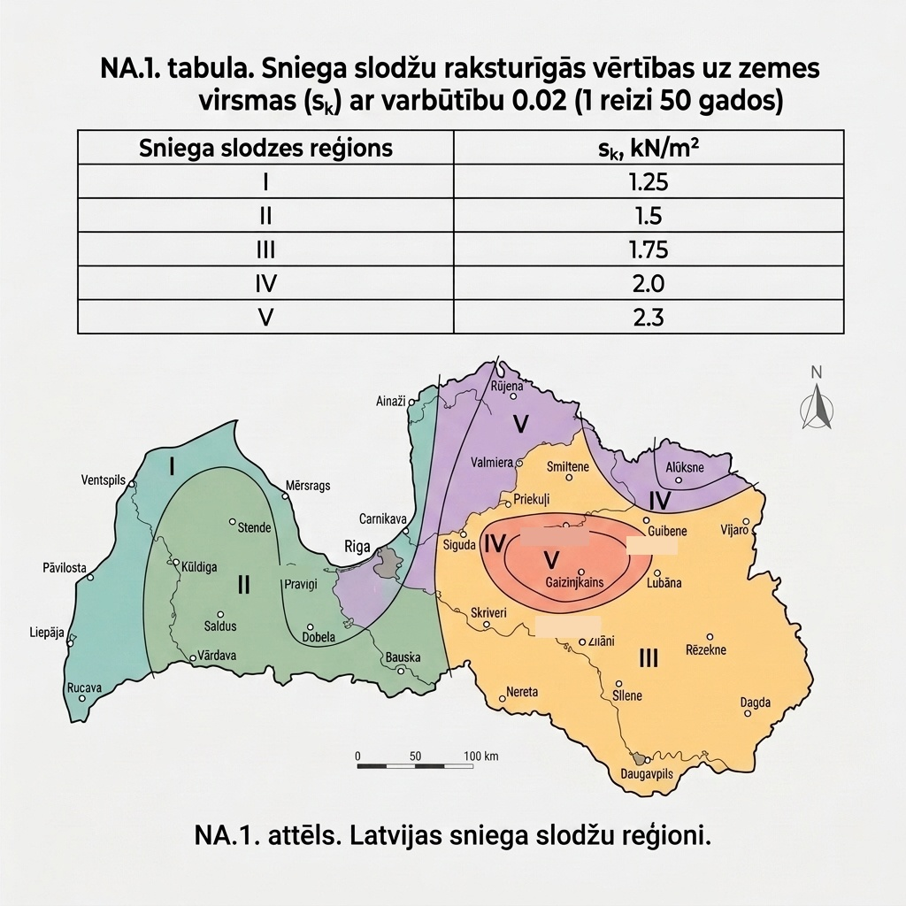
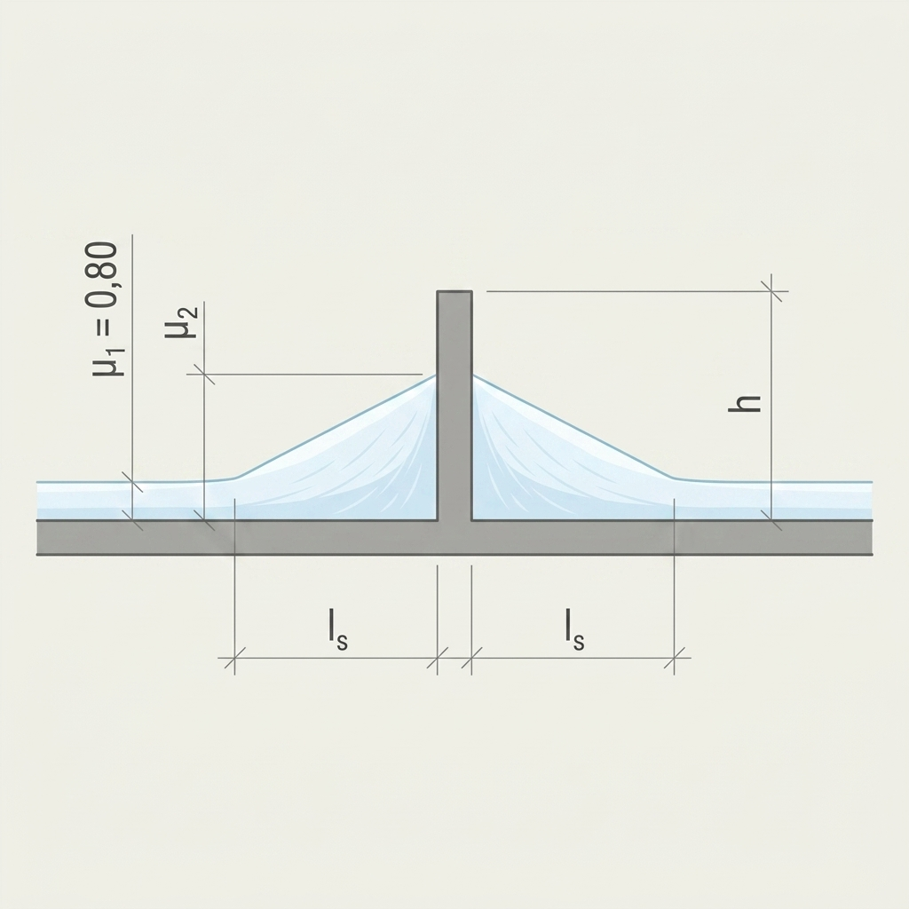
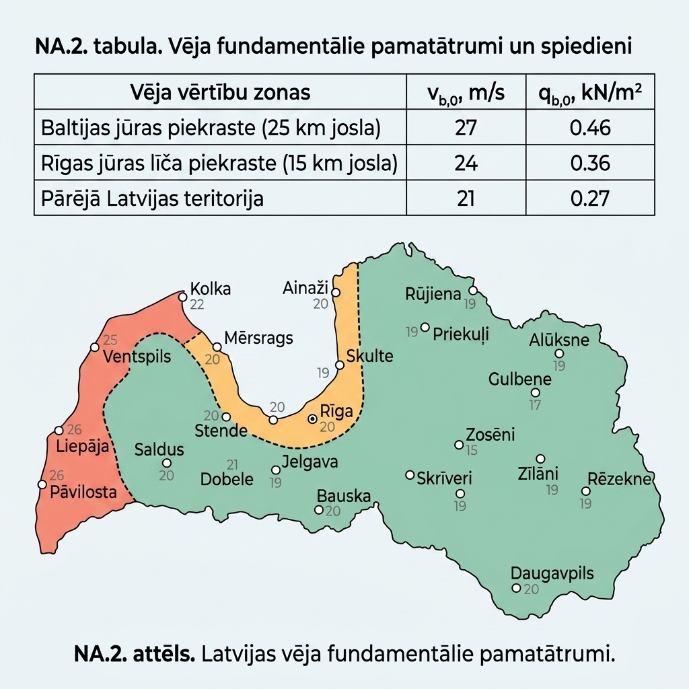
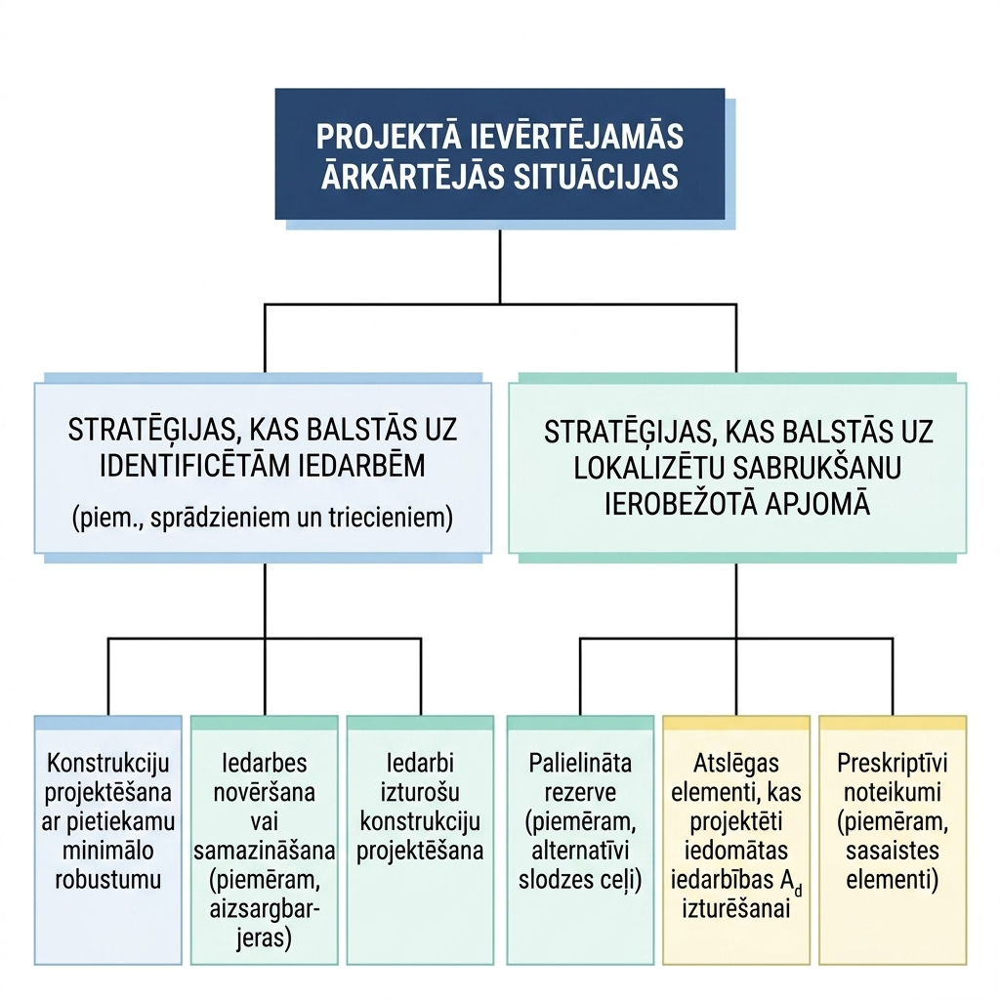
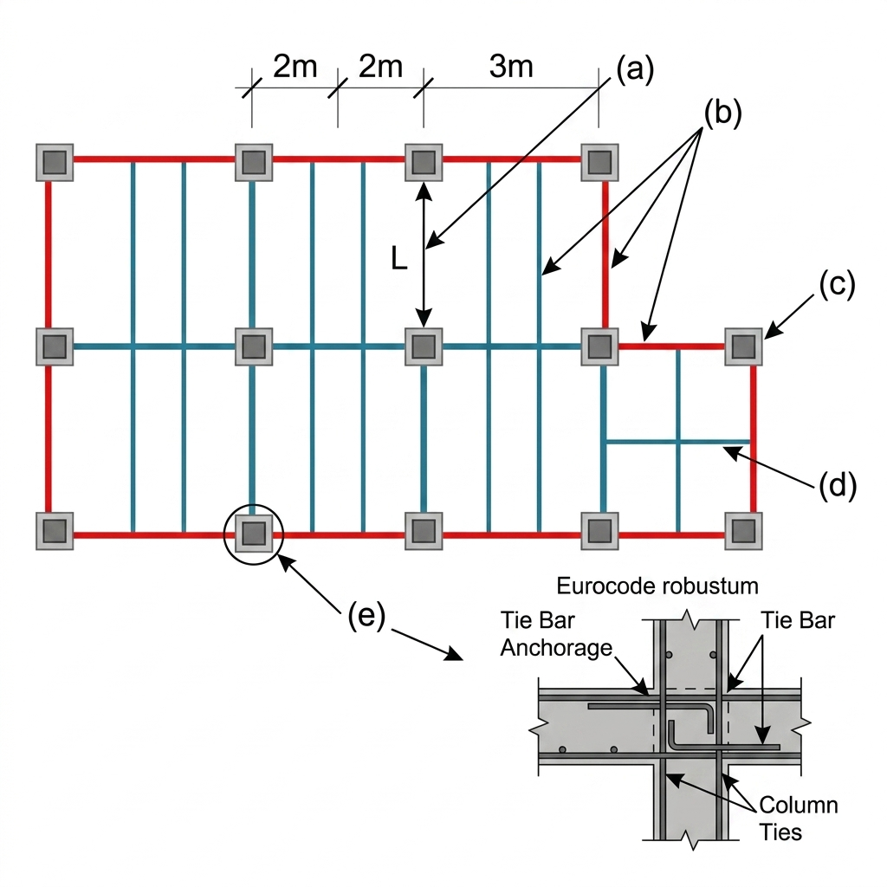
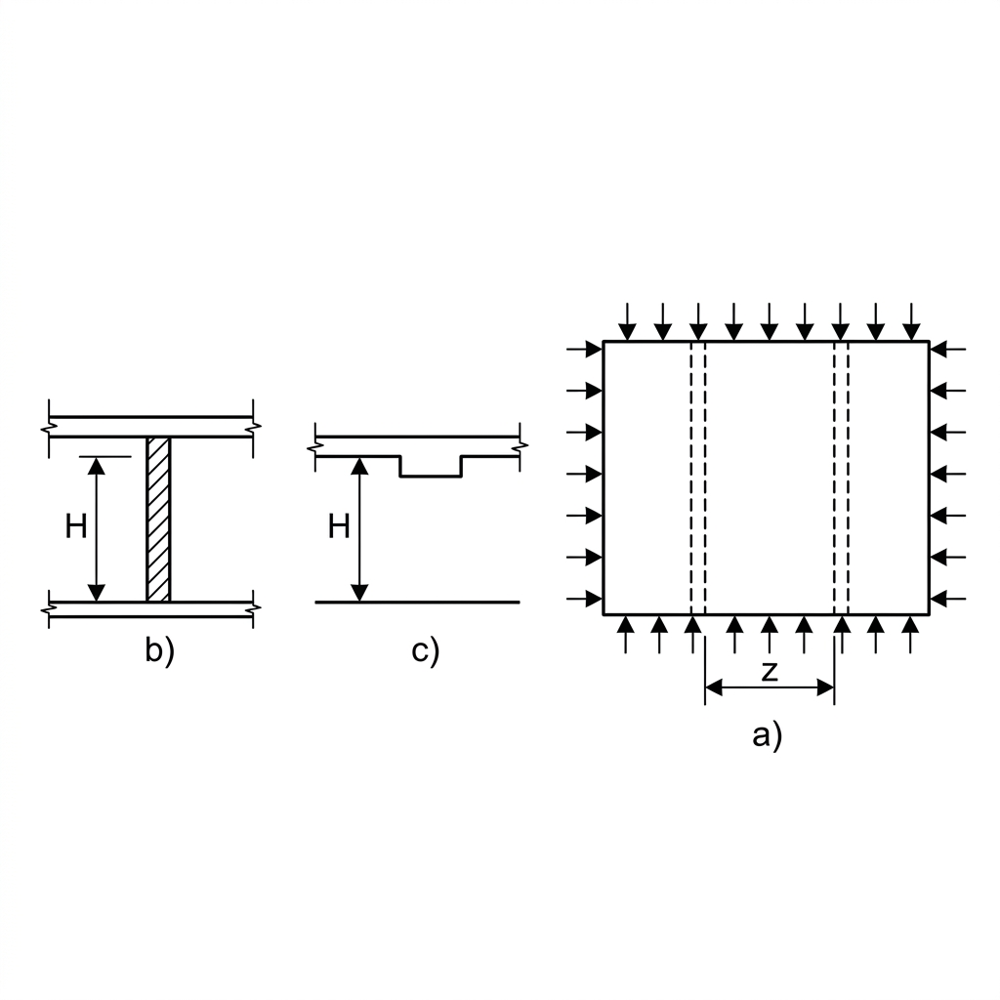
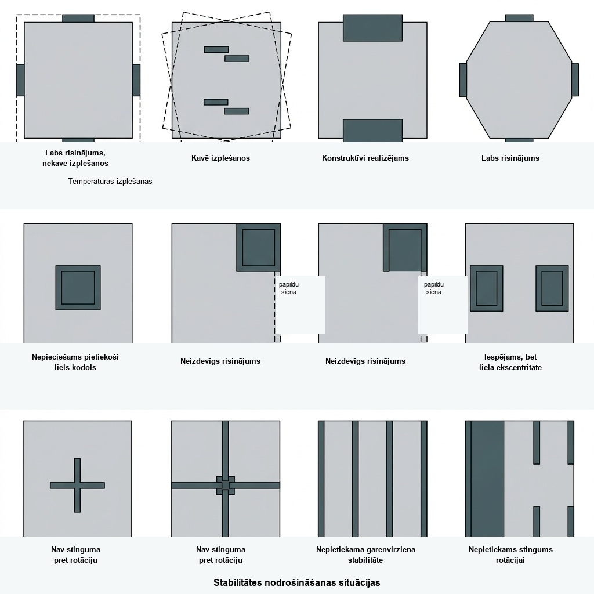

Saturs
1. Izmantojamie būvnormatīvi un standarti
2. Vispārīgie projektēšanas nosacījumi
- Ekspluatācijas ilguma kategorijas
- Seku klases
- Drošības klases
- Projektēšanas kontroles līmenis
- Vispārīgie projekta dati
- Lietderīgās slodzes
- Klimatiskās slodzes
- Konstrukciju pašsvars
- Nelabvēlīgākās slodzes noteikšana
- Izbūves klases
- Ēku robustums
4. Ugundrošu konstrukciju projektēšana
- Fizikālās un mehāniskās īpašības
- Papildu prasības projektēšanai
- Labas detalizācijas prakse
- Robežvērtības
- Vides iedarbības klases
- Saliekamais dzelzsbetons
- Stiegrojuma metināšana pēc DIN 4099
- Fizikālās un mehāniskās īpašības
- Papildu prasības projektēšanai
- Aprēķins pēc robežstāvokļu metodes
- Tērauda konstrukciju savienojumi
- Kopņu projektēšana
- Ugunsdrošība
10. Labā prakse rasējumu noformēšanā
Ievads
Sākotnēji šis nav apzināti un mērķtiecīgi veidots materiāls publicēšanai, bet tikai personiskas, dažādos periodos izdarītas piezīmes, kuras esmu veicis, lai atvieglotu savu darbu. Dokuments var saturēt neatjauninātu informāciju no izmantotajiem standartiem, pareizrakstības un interpretācijas kļūdas par ko es ļoti pārdzīvoju un atvainojos. Lietotāja pienākums būtiskām konstrukcijām ir papildus pārliecināties par informācijas pareizību no pirmavotiem.
Šī grāmata apkopo praktisko informāciju no Eirokodeksiem un Latvijas nacionālajiem pielikumiem (LVS EN), lai atvieglotu ikdienas projektēšanas darbu. Tā nav aizstājējs standartiem, bet palīgs ātrai orientēšanai un biežāk nepieciešamo vērtību atrašanai.
Sastāvs pa tematiskajiem blokiem:
- Slodzes — lietderīgās, klimatiskās, pašsvara slodzes un to kombinēšana
- Pamati — grunšu klasifikācija, pāļu pamati, tehnoloģiju izvēle
- Dzelzsbetons — materiālu īpašības, detalizācija, saliekamais dzelzsbetons
- Tērauds — savienojumi, kopnes, korozijas aizsardzība
- Koks — stiprības klases, koeficienti, robežlielumi
- Rasējumi — labā prakse rasējumu noformēšanā
Izmantojamie būvnormatīvi un standarti
Ja pasūtītāja uzdevumā nav noteikts citādi, tad būvkonstrukciju projektēšana Latvijā veicama saskaņā ar Eirokodeksiem (Eurocodes) un ar tiem saistītajiem standartiem (galvenokārt LVS EN un ISO). Eirokodeksi ir Eiropas Standartizācijas komitejas (CEN) izstrādāta standartu saime, kas nosaka vienotu būvkonstrukciju projektēšanas kārtību Eiropas Savienībā.
Veicot esošu būvju pārbūvi vai atjaunošanu, konstruktīvo elementu lokālajās pārbaudēs par atbilstošām Latvijas Republikā var uzskatīt arī tādas konstrukcijas, kas atbilst konstrukciju projektēšanas būvnormatīviem, kuri bija spēkā no 1988. gada līdz Eirokodeksu obligātās piemērošanas uzsākšanai (01.07.2015.), ja vienlaikus izpildās šādi nosacījumi:
- pēc pārbūves vai atjaunošanas netiek palielināta slodze uz attiecīgo konstruktīvo elementu;
- netiek mainīta konstruktīvā elementa aprēķina shēma;
- tehniskās apsekošanas laikā nav konstatētas virsnormas izlieces vai citas konstrukciju nedrošuma pazīmes.
Projektos izmantojamajiem materiāliem un izstrādājumiem ir jāatbilst harmonizētajiem standartiem, nodrošinot to ekspluatācijas īpašību deklarāciju atbilstību projektēšanas pieņēmumiem.
Būvnormatīvu un saistīto standartu pārskats
| Joma / Materiāls | Iepriekšējais normatīvs (līdz 2015. gadam) | Aktuālais būvnormatīvs (kopš 2021. gada)* | Saistītie Eirokodeksa standarti |
|---|---|---|---|
| Vispārīgie principi | — | LBN 200-21 "Būvju drošība" | LVS EN 1990 |
| Slodzes un iedarbes | — | — | LVS EN 1991 |
| Betona konstrukcijas | LBN 203-97 "Betona un dzelzsbetona..." | LBN 203-21 "Betona būvkonstrukciju projektēšana" | LVS EN 1992 |
| Tērauda konstrukcijas | — | LBN 204-21 "Tērauda būvkonstrukciju projektēšana" | LVS EN 1993 |
| Kompozītās konstrukcijas | — | LBN 214-21 "Tērauda un betona kompozīto būvkonstrukciju projektēšana" | LVS EN 1994 |
| Koka konstrukcijas | LBN 206-99 "Koka konstrukciju normas" | LBN 206-21 "Koka būvkonstrukciju projektēšana" | LVS EN 1995 |
| Mūra konstrukcijas | LBN 205-97 "Mūra un stiegrota mūra..." | LBN 205-21 "Mūra būvkonstrukciju projektēšana" | LVS EN 1996 |
| Ģeotehniskā projektēšana | LBN 207-01 un LBN 214-03 (pāļi) | LBN 207-21 "Ģeotehniskā projektēšana" | LVS EN 1997 |
| Seismiskā projektēšana | — | LBN 216-21 "Seismiski izturīgu būvkonstrukciju projektēšana" | LVS EN 1998 |
| Alumīnija konstrukcijas | — | LBN 215-21 "Alumīnija būvkonstrukciju projektēšana" | LVS EN 1999 |
| Būvklimatoloģija | LBN 003-01 "Būvklimatoloģija" | LBN 003-19 "Būvklimatoloģija" | LVS EN 1991-1-3 / LVS EN 1991-1-4 |
*Piezīme: 2021. gada būvnormatīvi (LBN) stājās spēkā 2021. gada novembrī, aizstājot 2015. gada redakcijas (piemēram, LBN 203-15, LBN 204-14 u.c.). Tie tiešā veidā atsaucas uz Eirokodeksu standartu kopu un to nacionālajiem pielikumiem (NA).
Vispārīgie projektēšanas nosacījumi
Projekta detalizācijas pakāpi nosaka pasūtītāja un projektētāja savstarpēji saskaņotajā projektēšanas uzdevumā. Saskaņā ar Eirokodeksa pamatpieņēmumiem, konstruktīvo shēmu izvēli un projektēšanu veic atbilstoši kvalificēti un sertificēti speciālisti (attiecīgi arī būvdarbus un uzraudzību veic speciālisti ar atbilstošām prasmēm un pieredzi).
Būvkonstrukcijas jāprojektē un jābūvē tā, lai projektētajā ekspluatācijas laikā tiktu nodrošināts atbilstošs drošības, drošuma un ilgmūžības līmenis, vienlaikus saglabājot ekonomisko pamatojumu. Konstrukcijām jāpiemīt pietiekamai nestspējai, jānodrošina lietojamības kritēriju izpilde (izlieces, vibrācijas, plaisas) un ilgmūžība.
Lai nodrošinātu adekvātu konstrukciju ilgmūžību, jāņem vērā:
- paredzētais būves izmantojums un ekspluatācijas apstākļi;
- vides apstākļi (vides iedarbības klases un agresivitāte);
- izmantoto materiālu un izstrādājumu ilgmūžība;
- izvēlēto elementu šķērsgriezumi un mezglu konstruktīvie risinājumi;
- paredzētie ēkas uzturēšanas un apsaimniekošanas pasākumi projektētajā kalpošanas laikā;
- pamatnes (grunts) īpašības un ēkas vispārējā konstruktīvā shēma;
- darbaspēka kvalifikācija un būvdarbu izpildes kontroles līmenis.
Ugunsgrēka situācijā konstrukcijām ir jānodrošina nestspēja nepieciešamajam laika periodam (atbilstoši noteiktajai REI ugunsizturības klasei). Būvēm nedrīkst rasties nesamērīgi lieli bojājumi no ārkārtas iedarbībām (sprādzieniem, triecieniem vai lokāliem sabrukumiem).
Vispārīgie projekta dati
Pārskatāma un precīza vispārīgo datu lapa ir ļoti būtiska ne tikai būvdarbu izpildītājam un ekspertam, bet arī pašam projektētājam, lai darba procesā pie neskaidrībām varētu tajā ielūkoties un nodrošinātu pieņēmumu vienotību visa projekta ietvaros.
Piemērs no BVKB rīkotā semināra materiāliem:

Kopsavilkuma tabula starp klasēm un līmeņiem saskaņā ar LVS EN 1990:
| Parametrs / Līmenis | 1. līmenis (Zems) | 2. līmenis (Vidējs / Standarta) | 3. līmenis (Augsts / Izvērsts) |
|---|---|---|---|
| Seku (konsekvences) klase | CC1 | CC2 | CC3 |
| Drošības (uzticamības) klase | RC1 | RC2 | RC3 |
| Projektēšanas kontroles klase | DSL1 | DSL2 | DSL3 |
| Būvdarbu uzraudzības līmenis | IL1 | IL2 | IL3 |
| Pielaižu (toleranču) klase | 1. klase | 2. klase | 3. klase |
| Tērauda izpildes klase (EXC) | EXC1 | EXC2 | EXC3 |
Seku klases
Seku klases (Consequence Classes, CC) nosaka, ņemot vērā iespējamās sekas konstrukcijas sabrukuma vai nepareizas darbības gadījumā.
| Seku klase | Apraksts | Ēku un inženierbūvju piemēri |
|---|---|---|
| CC3 | Smagas sekas attiecībā uz cilvēku dzīvību zaudēšanu, ar ļoti lielām ekonomiskām, sociālām un apkārtējās vides sekām. | Publiskās ēkas, kuru sabrukšanas sekas ir smagas. Pieskaitāmas arī ēkas, kas uzskaitītas CC2a un CC2b, bet tām ir lielāka stāvu platība vai stāvu skaits. Visas publiskās ēkas, kurās nav cilvēku skaita ierobežojuma. Stadioni, kuros ir vairāk par 5 000 skatītāju vietu. Ēkas, kurās ir bīstamas vielas vai procesi. |
| CC2 | Vidējas sekas attiecībā uz cilvēku dzīvību zaudēšanu, ar ievērojamām ekonomiskām, sociālām un apkārtējās vides sekām. Pēc LVS EN 1991-1-7 izdala divas apakšklases: CC2a un CC2b. | Dzīvojamās un biroju ēkas, publiskās ēkas, kuru sabrukšanas sekas ir vidējas. Privātmājas ar 5 stāviem. Viesnīcas ar ne vairāk kā 4 stāviem. Dzīvojamās ēkas ar ne vairāk kā 4 stāviem. Biroja ēkas ar ne vairāk kā 4 stāviem. Industriālās ēkas ar ne vairāk kā 3 stāviem. Mazumtirdzniecības ēkas ar ne vairāk kā 3 stāviem un katra stāva platību ne lielāku par 1 000 m2. Vienstāva izglītības iestādes. Publiskas ēkas ar ne vairāk kā 2 stāviem un katra stāva platību ne lielāku par 2 000 m2. Viesnīcas un dzīvojamās mājas ar stāvu skaitu lielāku par 4 un nepārsniedz 15 stāvus. Izglītības iestādes ar stāvu skaitu lielāku par 1 un nepārsniedz 15 stāvus. Mazumtirdzniecības ēkas ar stāvu skaitu lielāku par 3 un nepārsniedz 15 stāvus. Slimnīcas ar stāvu skaitu ne vairāk kā 3. Biroja ēkas ar stāvu skaitu lielāku par 4 un nepārsniedz 15 stāvus. Publiskas ēkas, kurās stāva platība ir robežās no 2 000 m2 līdz 5 000 m2. Auto stāvvietas ar ne vairāk kā 6 stāviem. |
| CC1 | Vieglas sekas ar mazu, vērā neņemamu risku cilvēka dzīvībai, ar vieglām ekonomiskām, sociālām un apkārtējās vides sekām. | Lauksaimniecības ēkas, kur parasti cilvēki neuzturas, piemēram, noliktavas un siltumnīcas, ja tās neatrodas tuvāk par \(1,5\) ēkas augstumiem līdz blakus ēkām vai zonām, kur uzturas cilvēki. Pēc LVS EN 1991-1-7 pie šīs klases var pieskaitīt arī privātmājas ar ne vairāk kā 4 stāviem. |
Drošības klases un uzticamības indeksi
Ēku drošības klases (Reliability Classes, RC) tiešā veidā atbilst ēku seku klasēm: RC1 atbilst CC1, RC2 atbilst CC2 un RC3 atbilst CC3.
Drošuma jeb uzticamības līmenis tiek izteikts ar uzticamības indeksu \(\beta\). Indekss \(\beta\) ir saistīts ar konstrukcijas sabrukuma iestāšanās varbūtību \(P_f\) ar formulu: \[P_f = \Phi(-\beta)\] kur \(\Phi\) ir standarta normālā sadalījuma funkcija.
Praksē izmanto vienkāršotu paņēmienu drošības līmeņa koriģēšanai, izmantojot reizinātāju (korekcijas koeficientu) \(K_{\text{FI}}\), ar kuru reizina pastāvīgo un mainīgo slodžu parciālos drošības koeficientus \(\gamma_F\):
| Drošības klase | RC1 | RC2 | RC3 |
|---|---|---|---|
| Uzticamības indeksa \(\beta\) mērķvērtība (1 gada references periodam) | 3.7 | 4.2 | 4.7 |
| Uzticamības indeksa \(\beta\) mērķvērtība (50 gadu references periodam) | 3.3 | 3.8 | 4.3 |
| Slodžu korekcijas koeficients \(K_{\text{FI}}\) | 0.9 | 1.0 | 1.1 |
Piezīme: Saskaņā ar LBN 200-21 un LVS EN 1990 nacionālo pielikumu, koeficientu \(K_{\text{FI}}\) parasti piemēro tikai mainīgajām (lietderīgajām, vēja, sniega) slodzēm.
Projektēšanas kontroles līmenis
Projektēšanas kontroles līmeņi (Design Supervision Levels, DSL) ir piesaistīti būves drošības klasei (RC/CC līmenim) un nosaka projekta aprēķinu, rasējumu un specifikāciju pārbaudes kārtību.
| Kontroles klase | Kontroles raksturs | Minimālās rekomendētās prasības aprēķinu, rasējumu un tehnisko specifikāciju kontrolei |
|---|---|---|
| DSL3 | Izvērsta kontrole | Projekta pārbaude, ko veic neatkarīga trešā puse (neatkarīga būvprojekta ekspertīze). Latvijā obligāta III grupas būvēm. |
| DSL2 | Parasta kontrole | Kontrole, kas tiek veikta projektēšanas organizācijas iekšienē. Veic kvalificēts speciālists, kurš pats nav piedalījies konkrētā projekta izstrādē (iekšējā neatkarīgā pārbaude). |
| DSL1 | Paškontrole | Paškontrole, ko veic pats projekta izstrādātājs (autoruzraudzība / paškontrole). |
Būvdarbu uzraudzības līmeņi
Būvdarbu uzraudzības (inspekcijas) līmeņi (Inspection Levels, IL) nosaka prasības būvdarbu kvalitātes kontrolei un atbilstībai projektam.
| Inspekcijas līmenis | Kontroles raksturs | Minimālās rekomendētās prasības būvdarbu uzraudzībai un atbilstības kontrolei |
|---|---|---|
| IL3 (augsts) | Paplašināta inspekcija | Izvērsta trešās puses kontrole (piesaistot neatkarīgus būvuzraugus, testēšanas laboratorijas un autoruzraugus). |
| IL2 (vidējs) | Parasta inspekcija | Sistemātiska kontrole saskaņā ar būvorganizācijas kvalitātes vadības sistēmas procedūrām. |
| IL1 (zems) | Vienkāršota kontrole | Pašinspekcija (veic būvdarbu veicējs pats būvdarbu vadītāja uzraudzībā). |
Ekspluatācijas ilguma kategorijas
Projektētā ekspluatācijas ilguma kategorija (Design Working Life Category) definē laika periodu, kurā konstrukcijai jāsaglabā sava nestspēja un lietojamība bez nepieciešamības veikt neparedzētus rekonstrukcijas darbus, veicot tikai plānoto uzturēšanu.
| Kategorija | Paredzamais ekspluatācijas ilgums (gadi) | Būvkonstrukciju piemēri |
|---|---|---|
| 1 | 10 | Pagaidu konstrukcijas (izņemot konstrukcijas, ko pēc demontāžas plānots izmantot atkārtoti). |
| 2 | no 10 līdz 25 | Aizvietojamas būvkonstrukciju daļas, piemēram, celtņa ceļu sijas, balsti, stiprinājumi. |
| 3 | no 15 līdz 30 | Lauksaimniecības un tamlīdzīgas būves, siltumnīcas. |
| 4 | 50 | Ēkas un citas parastas būvkonstrukcijas (dzīvojamās, publiskās un industriālās ēkas). |
| 5 | 100 | Monumentālu ēku konstrukcijas, tilti, tuneļi un citas valsts nozīmes inženierbūves. |
Ja projektēšanas uzdevumā nav norādīts citādi, parastām ēkām vienmēr piemēro 4. kategoriju (50 gadi), kas betonam atbilst standarta strukturālajai klasei S4 (lieto aizsargslāņa noteikšanai).
Slodzes un iedarbes
Slodžu parciālie koeficienti palielina aprēķina iedarbību vērtības (novirza iedarbību sadalījuma līkni pa labi), turpretī materiālu parciālie koeficienti samazina elementu nestspējas aprēķina vērtības (novirza pretestības sadalījuma līkni pa kreisi). Abu šo faktoru kopdarbība nodrošina nepieciešamo būvkonstrukciju drošuma līmeni. Apgabalā, kur abas līknes pārklājas (iedarbe pārsniedz nestspēju), pastāv teorētiska konstrukcijas avārijas iespējamība, kas parasti ir ļoti zema (piemēram, pie uzticamības indeksa \(\beta = 3.8\) sabrukuma varbūtība \(P_f\) ir aptuveni \(7.2 \times 10^{-5}\) jeb 0.007%).

Lietojot Eirokodeksu sistēmu, primāri ir jāizmanto tie parciālie koeficienti un parametri, kas ir noteikti attiecīgo projektēšanas standartu Latvijas nacionālajos pielikumos (LVS EN XXXX-X-X/NA). Ja kāda konkrēta parametra vai koeficienta vērtība nacionālajā pielikumā nav definēta, ir izmantojama standarta pamatdokumentā norādītā rekomendējamā vērtība.
Lietderīgās slodzes
Lietderīgās slodzes ir mainīgas iedarbības, ko rada cilvēku uzturēšanās un pārvietošanās, mēbeles, iekārtas, transportlīdzekļi un citi pārvietojami objekti.
Lietderīgās slodzes un to raksturīgās vērtības saskaņā ar LVS EN 1991-1-1/NA:
| Kat. | Raksturīgā izmantošana | \(q_k\) (kN/m²) | \(Q_k\) (kN) | Piemēri un skaidrojumi |
|---|---|---|---|---|
| A | Mājsaimniecības un dzīvojamās telpas — Grīdas — Kāpnes — Balkoni | 2,00 3,00 2,50 | 2,00 3,00 2,50 | Telpas dzīvojamās mājās, guļamistabas un palātas slimnīcās, guļamistabas viesnīcās un viesu mītnēs, virtuves un tualetes. |
| B | Biroju telpas | 2,50 | 2,50 | Biroju telpas, sapulču telpas birojos. |
| C | Pulcēšanās platības — C1: Platības ar galdiem — C2: Platības ar nostiprinātām sēdvietām — C3: Brīvas platības cilvēku kustībai — C4: Platības fiziskām darbībām — C5: Platības lielām cilvēku masām | 2,50 3,00 4,00 5,00 6,00 | 3,00 4,00 4,00 5,00 4,00 | C1: Kafejnīcas, restorāni, skolas, ēdnīcas, lasītavas. C2: Baznīcas, teātri, kinoteātri, konferenču un lekciju zāles. C3: Muzeji, izstāžu zāles, sabiedriskās ēkas, slimnīcas, stacijas. C4: Deju zāles, vingrošanas zāles, skatuves. C5: Koncertu halles, sporta zāles, tribīnes, terases. |
| D | Tirdzniecības platības — D1: Vispārējie mazumtirdzniecības veikali — D2: Universālveikali | 4,00 5,00 | 4,00 7,00 | D1: Mazumtirdzniecības veikali. D2: Universālveikali, lielveikali ar intensīvu preču kustību. |
| E | Noliktavu un industriālās platības — E1: Noliktavas un preču uzglabāšana | 7,50 | 7,00 | Lietderīgā platība uz noliktavu grīdām, grāmatu un arhīvu krātuves. |
| F | Satiksmes platības (bruto svars \(\le 30\) kN) | 2,50 | 20,00 | Vieglo automobiļu garāžas un transportlīdzekļu satiksmes vietas. |
| G | Satiksmes platības (\(30\text{ kN} < \text{bruto svars} \le 160\text{ kN}\)) | 5,00 | 90,00 | Transportlīdzekļu satiksmes vietas ar lielākiem transportlīdzekļiem. |
| H | Jumtu lietderīgās slodzes | 0,40 | 1,00 | Jumti, kas pieejami tikai to uzturēšanai un remontam (analogu slodzi var pieņemt arī apkalpošanas tiltiņiem). |
| — | Neizmantojamas bēniņu platības | 1,00 | 2,00 | Zonas ap iekārtām un neizmantojami bēniņi (iekļauts 2022. gada nacionālajā pielikumā). |
| — | Kāpnes (ja nav norādīts citādi) | 3,00 | 3,00 | Koplietošanas kāpņu laukumi un pakāpieni (iekļauts 2022. gada nacionālajā pielikumā). |
Noslogotās platības samazinājuma koeficients \(\alpha_A\)
Kategorijām no A līdz D slodzi uz nesošajām konstrukcijām (piemēram, sijām un kolonnām) ir atļauts samazināt, reizinot raksturīgo slodzi ar samazinājuma koeficientu \(\alpha_A\), kas ievērtē varbūtību, ka visa lielā platība netiks noslogota maksimāli:
\[\alpha_A = \frac{5}{7}\psi_0 + \frac{A_0}{A} \le 1,0\]
Kur:
- \(A_0 = 10\text{ m}^2\) (bāzes platība);
- \(A\) ir noslogotā (balstītā) laukuma platība (\(\text{m}^2\)), kas nodod slodzi uz pārbaudāmo elementu;
- \(\psi_0\) ir attiecīgās kategorijas slodzes kombinācijas koeficients.
Ierobežojumi:
- Kategorijām C un D jānodrošina, ka \(\alpha_A \ge 0,60\).
- Kategorijām A un B parasti jānodrošina, ka \(\alpha_A \ge 0,60\).
- Noliktavu telpām (E kategorija) slodzes samazināšana pēc platības nav atļauta (\(\alpha_A = 1,0\)).
Slodžu kombināciju koeficienti (\(\psi\) koeficienti)
Kombinējot dažādas iedarbes, jāizmanto kombinācijas koeficienti \(\psi_0\), \(\psi_1\) un \(\psi_2\), kas noteikti LVS EN 1990 un nacionālajos pielikumos. Tie ņem vērā varbūtību, ka ne visas mainīgās slodzes vienlaicīgi sasniegs savu raksturīgo vērtību.
| Iedarbe / Slodze | \(\psi_0\) | \(\psi_1\) | \(\psi_2\) |
|---|---|---|---|
| Lietderīgās slodzes ēkās (pēc kategorijām): | |||
| — A kategorija: mājsaimniecības un dzīvojamās telpas | 0,7 | 0,5 | 0,3 |
| — B kategorija: biroju telpas | 0,7 | 0,5 | 0,3 |
| — C kategorija: pulcēšanās telpas | 0,7 | 0,7 | 0,6 |
| — D kategorija: tirdzniecības telpas | 0,7 | 0,7 | 0,6 |
| — E kategorija: noliktavu telpas | 1,0 | 0,9 | 0,8 |
| — F kategorija: transportlīdzekļu kustība, bruto svars \(\le 30\) kN | 0,7 | 0,7 | 0,6 |
| — G kategorija: transportlīdzekļu kustība, bruto svars 30–160 kN | 0,7 | 0,5 | 0,3 |
| — H kategorija: jumti (pieejami tikai uzturēšanai) | 0,0 | 0,0 | 0,0 |
| Sniega slodzes uz ēkām (Latvijā): | |||
| — Sniega slodze (references augstums \(H \le 1000\) m) | 0,7 | 0,5 | 0,2 |
| Citas slodzes: | |||
| — Vēja slodzes uz ēkām | 0,6 | 0,2 | 0,0 |
| — Temperatūras iedarbība (ne ugunsgrēka gadījumā) | 0,6 | 0,5 | 0,0 |
Klimatiskās slodzes
Sniega slodze
Sniega slodze ir mainīga klimatiskā iedarbība, kas jāņem vērā, projektējot jumta un citu sniegam pakļautu virsmu konstrukcijas.
Saskaņā ar LVS EN 1991-1-3/NA:2019 punktu 2.7, visā Latvijas teritorijā ir jāpiemēro B1 slogojuma gadījums (notiek īpaša snigšana, nav paredzēti īpaši sanesumi uz zemes).
- Standarta projektēšanas situācijās (ilgstoša/īslaicīga situācija) aprēķina sniega slodzi uz jumta: \[s = \mu_i \cdot C_e \cdot C_t \cdot s_k\]
- Ārkārtas situācijās (kur sniegs tiek vērtēts kā ārkārtēja iedarbība) aprēķina sniega slodzi uz jumta: \[s = \mu_i \cdot C_e \cdot C_t \cdot C_{esl} \cdot s_k\] Latvijā ārkārtējās sniega slodzes koeficients ir \(C_{esl} = 2,0\).
LVS EN 1991-1-3 6.2. punktā aprakstītie sniega sanesumi pie jumta izvirzījumiem ir jāizvērtē kā projekta ilgstoša vai īslaicīga situācija.
Sniega slodzes slogojuma situācijas (pēc LVS EN 1991-1-3 A.1. tabulas):
| Situācija / Slogojums | A gadījums (Normāli apstākļi) | B1 gadījums (Īpaši apstākļi)* | B2 gadījums (Īpaši apstākļi) | B3 gadījums (Īpaši apstākļi) |
|---|---|---|---|---|
| Raksturojums | Nenotiek īpaša snigšana, nav īpašu sanesumu. | Notiek īpaša snigšana, nav īpašu sanesumu. | Nenotiek īpaša snigšana, ir īpaši sanesumi. | Notiek īpaša snigšana, ir īpaši sanesumi. |
| Ilgstoša/īslaicīga situācija | — Nesanests sniegs: \(s = \mu_i C_e C_t s_k\) — Sanests sniegs: \(s = \mu_i C_e C_t s_k\) | — Nesanests sniegs: \(s = \mu_i C_e C_t s_k\) — Sanests sniegs: \(s = \mu_i C_e C_t s_k\) | — Nesanests sniegs: \(s = \mu_i C_e C_t s_k\) — Sanests sniegs: \(s = \mu_i C_e C_t s_k\) (izņemot B pielikumu) | — Nesanests sniegs: \(s = \mu_i C_e C_t s_k\) — Sanests sniegs: \(s = \mu_i C_e C_t s_k\) (izņemot B pielikumu) |
| Ārkārtējā situācija (sniegs kā ārkārtēja slodze) | Nav jāvērtē. | — Nesanests sniegs: \(s = \mu_i C_e C_t C_{esl} s_k\) — Sanests sniegs: \(s = \mu_i C_e C_t C_{esl} s_k\) | — Sanests sniegs: \(s = \mu_i s_k\) (jumtu formām B pielikumā) | — Nesanests sniegs: \(s = \mu_i C_e C_t C_{esl} s_k\) — Sanests sniegs: \(s = \mu_i s_k\) |
Sniega slodze uz zemes virsmas \(s_k\) Latvijā
Sniega slodžu raksturīgās vērtības uz zemes virsmas (\(s_k\)) ir noteiktas LVS EN 1991-1-3/NA (references periods 50 gadi, ikgadējā pārsniegšanas varbūtība 0,02).
| Sniega slodzes reģions | \(s_k\) (kN/m² jeb kPa) |
|---|---|
| I | 1,25 |
| II | 1,50 |
| III | 1,75 |
| IV | 2,00 |
| V | 2,30 |

Svarīgi: Interpolāciju starp zonām neveic. Projektēšanā izmanto tā reģiona vērtību, kurā atrodas būvlaukums.
Sniega sanesumi pie izvirzījumiem un šķēršļiem
Vēja ietekmē sniega sanesumi var veidoties uz jebkura jumta, kuram ir izbūvēti šķēršļi (parapeti, sienu nobīdes, virsgaismas, mašīntelpas u.c.).
Uz gandrīz horizontāliem jumtiem sniega formas koeficientus pie šķēršļiem aprēķina šādi:
- \(\mu_1 = 0,8\) (nesanesta sniega slodze)
- \(\mu_2 = \frac{\gamma \cdot h}{s_k}\) (ar ierobežojumu: \(0,8 \le \mu_2 \le 2,0\))
Kur:
- \(h\) ir šķēršļa augstums (m);
- \(s_k\) ir sniega slodze uz zemes (kPa);
- \(\gamma\) ir sniega tilpummasa (tilpumsvars), ko pieņem vienādu ar \(2,0\text{ kN/m}^3\).
Sanesuma garums:
- \(l_s = 2h\) (ar ierobežojumu: \(5,0\text{ m} \le l_s \le 15,0\text{ m}\)).
Piezīme: Pie biežāk sastopamajiem jumta šķēršļiem (kuru augstums \(h \le 2,5\text{ m}\)) sanesuma garums \(l_s\) parasti būs tieši minimālais robežlielums — \(5,0\text{ m}\). Lielāks sanesuma garums var veidoties tikai tad, ja šķēršļa augstums pārsniedz 2,5 m.
Sanesumu principiālā shēma pie šķēršļiem:

Koeficientu \(\mu_2\) vērtības Latvijas sniega reģionos atkarībā no šķēršļa augstuma \(h\):

Vēja slodze
Vēja slodze ir mainīga iedarbība, ko aprēķina saskaņā ar LVS EN 1991-1-4 un tā nacionālo pielikumu LVS EN 1991-1-4/NA:2011.
Fundamentālais vēja pamatātrums \(v_{b,0}\) Latvijā
Visā Latvijas teritorijā, izņemot piekrastes zonas, vēja fundamentālais pamatātrums ir \(v_{b,0} = 21\text{ m/s}\) (atbilst vēja spiedienam \(q_{b,0} \approx 0,27\text{ kN/m}^2\)).
- Rīgas jūras līča piekrastes zonā (15 km josla): \(v_{b,0} = 24\text{ m/s}\) (\(q_{b,0} \approx 0,36\text{ kN/m}^2\))
- Baltijas jūras atklātās piekrastes zonā (25 km josla): \(v_{b,0} = 27\text{ m/s}\) (\(q_{b,0} \approx 0,46\text{ kN/m}^2\))
Piezīme: Piekrastes zonas joslas platumu mēra no krasta līnijas, ja netiek ņemta vērā apvidus specifiskā orogrāfija. Jūrā un tiešā kāpu zonā ieteicams piemērot paaugstinātu vēja fundamentālo ātrumu pēc projektētāja novērtējuma.

Apvidus kategorijas izvēle
Apvidus kategorija (Terrain Category) raksturo virsmas raupjumu un ietekmē vēja ātruma profilu un dinamisko spiedienu augstumā.
| Apvidus kategorija | Apraksts |
|---|---|
| 0 | Jūra un atklātas jūras iedarbībai pakļauta piekrastes teritorija. |
| I | Ezeri vai atklātas teritorijas ar nenozīmīgu veģetāciju un bez šķēršļiem. |
| II | Teritorija ar zemu veģetāciju (piemēram, zāli) un atsevišķiem šķēršļiem (kokiem, ēkām), kas atrodas vismaz 20 šķēršļu augstumu attālumā viens no otra. |
| III | Teritorija ar regulāru veģetāciju, ēkām vai mežaudzēm, kur šķēršļi atrodas ne tālāk par 20 šķēršļu augstumiem viens no otra (piemēram, ciemati, priekšpilsētas, pastāvīgs mežs). |
| IV | Teritorija, kurā vismaz 15% no virsmas ir apbūvēti ar ēkām, kuru vidējais augstums pārsniedz 15 m (blīva pilsētas apbūve). |
Konstrukciju pašsvara un apdares slodzes
Konstrukciju pašsvars ir pastāvīga iedarbe, ko aprēķina pēc elementu ģeometriskajiem izmēriem un materiālu tilpummasas (tilpumsvara).
Dobumotie pārseguma paneļi (HCS)
Aprēķinot dobumoto dzelzsbetona plātņu pašsvara slodzi, ir būtiski ievērtēt paneļu pašsvaru kopā ar šuvju aizpildījuma javu. Ražotāju katalogos bieži ir uzrādīts tikai sausa paneļa pašsvars bez šuvju aizpildījuma.
Izplatītāko dobumoto paneļu (HCS) pašsvara slodzes ar aizpildītām šuvēm:
| Nr. | Šķērsgriezums | Augstums \(H\) (mm) | Platums \(B\) (mm) | Pašsvars ar šuvēm (kN/m²) | Šuvju aizpildījuma apjoms (l/m²) |
|---|---|---|---|---|---|
| 1 | HCS 200 | 200 | 1196 | 2,55 | 7,0 |
| 2 | HCS 220 | 220 | 1196 | 3,40 | 8,0 |
| 3 | HCS 265 | 265 | 1196 | 3,80 | 10,0 |
| 4 | HCS 320 | 320 | 1196 | 4,05 | 12,0 |
| 5 | HCS 400 | 400 | 1196 | 4,65 | 17,0 |
| 6 | HCS 500 | 500 | 1196 | 5,53 | — |
Materiālu tilpumsvari pastāvīgās slodzes noteikšanai
Materiālu pašsvara noteikšanai izmanto LVS EN 1991-1-1 A pielikumā noteiktos tilpumsvarus:
| Nr. | Materiāla nosaukums | Tilpumsvars \(\gamma\) (kN/m³) |
|---|---|---|
| 1 | Tērauds | 78,50 |
| 2 | Dzelzsbetons (parasts ar stiegrojumu)* | 25,00 |
| 3 | Granīts | 26,00 |
| 4 | Stikls loksnēs | 25,00 |
| 5 | Granīta šķembas | 16,00 |
| 6 | Sausas smiltis | 16,00 |
| 7 | Kokskaidu plātne (OSB) | 8,00 |
| 8 | Bērza saplāksnis | 7,00 |
| 9 | C24 klases skuju koksne | 4,20 |
| 10 | Paroc COS 5 (siltumizolācija trīsslāņu paneļos) | 0,65 |
*Piezīme: Dzelzsbetona tilpumsvars saskaņā ar LVS EN 1991-1-1 ir 25,0 kN/m³ (parastam betonam bez stiegrojuma — 24,0 kN/m³).
Griestu un inženierkomunikāciju apdares slodzes
Ja projektēšanas sākuma posmā nav pieejama precīza informācija par griestu konstrukciju un inženierkomunikāciju izvietojumu zem dimensionējamā pārseguma, kā standarta pieņēmumu ieteicams izmantot šādu slodzi:
- Apdares slodze griestiem un komunikācijām: \(0,50\text{ kN/m}^2\) (tas ievērtē piekārto ģipškartona griestu karkasu, izolāciju, gaismekļus un parastās inženierkomunikācijas, piemēram, ventilācijas (AVK) cauruļvadus).
Nelabvēlīgākās slodzes noteikšana
Vairāklaidumu konstrukcijās (piemēram, nepārtrauktās sijās vai plātnēs) maksimālo piepūļu (momentu, šķērsspēku) noteikšanai ir jāveic slodžu izvietošana nelabvēlīgākajās kombinācijās, izmantojot t.s. "šaha slogojuma" shēmu.
Slogojuma shēmas nepārtrauktām sijām
Lai iegūtu ekstremālās piepūļu vērtības, mainīgā slodze \(Q_d\) tiek izvietota šādos veidos:
-
Maksimālajam laiduma momentam (\(M_{max,\text{laidumā}}\)): Pilna aprēķina slodze (\(G_d + Q_d\)) tiek uzlikta pārbaudāmajam laidumam un pamīšus katram otrajam laidumam. Blakus esošajos laidumos tiek uzlikta tikai minimālā pastāvīgā slodze (\(G_{d,inf}\) jeb \(\gamma_{G,inf} \cdot G_k\), kur \(\gamma_{G,inf} = 1,0\)).
-
Maksimālajam balsta momentam (\(M_{max,\text{balstā}}\)) vai reakcijai: Pilna aprēķina slodze (\(G_d + Q_d\)) tiek uzlikta abos laidumos abpus pārbaudāmajam balstam, un pēc tam pamīšus katram otrajam laidumam.

Slodžu kombināciju vienādojumi (ULS pēc LVS EN 1990)
Projektējot konstrukcijas pēc nestspējas robežstāvokļa (ULS - Ultimate Limit State), pastāvīgo un mainīgo slodžu kombinācijas aprēķina pēc LVS EN 1990. Latvijā ir atļauts izmantot divas alternatīvas metodes:
1. Metode: Izmantojot vienādojumu (6.10)
Tā ir vienkāršotā metode, kurā visas slodzes tiek reizinātas ar pilniem parciālajiem koeficientiem:
\[E_d = \gamma_{G} \cdot G_k + \gamma_{Q} \cdot Q_k\]
Kur Latvijas nacionālajā pielikumā noteikts:
- \(\gamma_{G} = 1,35\) (nelabvēlīgā pastāvīgā slodze);
- \(\gamma_{Q} = 1,50\) (nelabvēlīgā mainīgā slodze);
- \(\gamma_{G,inf} = 1,00\) (labvēlīgā pastāvīgā slodze).
2. Metode: Izmantojot vienādojumus (6.10a) un (6.10b)
Šī metode parasti sniedz ekonomiskāku rezultātu, ja pastāvīgā slodze ir dominējoša. Konstrukcija jāpārbauda uz nelabvēlīgāko no abiem vienādojumiem:
-
Vienādojums (6.10a) (dominē pastāvīgās slodzes): \[E_d = \gamma_{G} \cdot G_k + \gamma_{Q} \cdot \psi_0 \cdot Q_k\] (Latvijā: \(1,35 \cdot G_k + 1,5 \cdot \psi_0 \cdot Q_k\))
-
Vienādojums (6.10b) (dominē mainīgās slodzes): \[E_d = \xi \cdot \gamma_{G} \cdot G_k + \gamma_{Q} \cdot Q_k\] (Latvijā: \(\xi = 0,85\), kas dod \(1,15 \cdot G_k + 1,5 \cdot Q_k\))
Piezīme: Ja ir vairākas mainīgās slodzes (piem., lietderīgā + vējš + sniegs), tad viena no tām tiek pieņemta kā galvenā mainīgā slodze (\(Q_{k,1}\)), bet pārējās tiek reizinātas ar attiecīgajiem kombināciju koeficientiem \(\psi_{0,i}\).
Izbūves klases tērauda konstrukcijām
Tērauda būvkonstrukciju izpildes (izbūves) klase (Execution Class, EXC) nosaka prasības izgatavošanas un montāžas kvalitātes kontrolei saskaņā ar standartu LVS EN 1090-2.
Parasti izpildes klasi pieņem atbilstoši būves seku klasei (piemēram, EXC1 atbilst CC1, EXC2 atbilst CC2), tomēr vienas būves ietvaros dažādiem elementiem izpildes klases var atšķirties. Saskaņā ar LVS EN 1993-1-1 C pielikumu, izbūves klasi EXC nosaka, balstoties uz trim faktoriem:
- Seku klase (CC) (CC1, CC2 vai CC3);
- Izmantošanas klase (SC) (SC1 vai SC2);
- Ražošanas klase (PC) (PC1 vai PC2).
Izpildes klases (EXC) noteikšanas matrica
| Ražošanas klase | Izmantošanas klase | Seku klase CC1 | Seku klase CC2 | Seku klase CC3 |
|---|---|---|---|---|
| PC1 (Nemetināti elementi, tērauds < S355) | SC1 (statiska) | EXC1 | EXC2 | EXC3 |
| SC2 (dinamiska) | EXC2 | EXC3 | EXC3 | |
| PC2 (Metināti elementi, tērauds \(\ge\) S355) | SC1 (statiska) | EXC2 | EXC2 | EXC3 |
| SC2 (dinamiska) | EXC2 | EXC3 | EXC4 |
Piezīme: Parastām ēkām (statiska slodze, seku klase CC2, izmantošanas klase SC1 un metināti elementi no S355 tērauda - PC2) standarta izpildes klase ir EXC2.
Kategoriju skaidrojums
1. Izmantošanas klases (Service Categories)
Raksturo konstrukcijas noslogojuma veidu un ekspluatācijas apstākļus:
- SC1 (statiska): Konstrukcijas, kas projektētas tikai statiskām vai kvazistatiskām slodzēm (piemēram, parastas dzīvojamās, biroju un noliktavu ēkas).
- SC2 (dinamiska): Konstrukcijas, kas pakļautas noguruma iedarbei no dinamiskām slodzēm (piemēram, celtņu ceļu sijas, tilti, torņi, kas pakļauti vēja izraisītām vibrācijām, vai konstrukcijas seismiski aktīvās zonās).
2. Ražošanas klases (Production Categories)
Raksturo konstrukcijas ražošanas tehnoloģisko sarežģītību:
- PC1: Nemetināti elementi (piemēram, tikai ar skrūvēm savienoti elementi) neatkarīgi no tērauda markas, vai metināti elementi no tērauda markām, kas ir zemākas par S355.
- PC2: Metināti elementi no tērauda markas S355 un augstākas (piemēram, S355, S420, S460), vai elementi, kuru izgatavošanā tiek izmantota termiskā griešana, aukstā formēšana vai termiskā apstrāde.
Būvju robustuma nodrošinājums
Būvju robustums (noturība pret progresējošu sabrukumu) raksturo konstrukcijas spēju saglabāt stabilitāti lokālu bojājumu gadījumā, novēršot sabrukuma izplatīšanos (progresējošo sabrukumu) nesamērīgā platībā.
Prasības robustuma nodrošināšanai ir iestrādātas katras materiālu grupas projektēšanas standartos, bet izvērsti tās ir aprakstītas standartā LVS EN 1991-1-7 "Vispārīgās iedarbes. Ārkārtas iedarbes". Būves seku klases un to piemērus skatīt sadaļā Seku klases.
Ārkārtējo situāciju projektēšanas stratēģijas
Projektētājam ir jāizvēlas viena vai vairākas stratēģijas ārkārtējo iedarbību (sprādzienu, triecienu, ugunsgrēku) un progresējošā sabrukuma novēršanai:

Robustuma prasības atkarībā no seku klases (CC)
1. Seku klase CC1
- Prasības: Konstrukcija jāprojektē saskaņā ar vispārīgajām Eirokodeksa prasībām stabilitātes un nestspējas nodrošināšanai normālos ekspluatācijas apstākļos. Papildu prasības ārkārtas iedarbēm netiek izvirzītas.
2. Seku klase CC2a (Zema riska grupa)
- Prasības: Papildus normālās stabilitātes pārbaudēm ir jānodrošina horizontāla saišu sistēma pārsegumos saskaņā ar LVS EN 1991-1-7 A.5. punkta prasībām, lai sasaistītu pārseguma paneļus un nesošās konstrukcijas.
3. Seku klase CC2b (Augsta riska grupa)
- Prasības: Papildus normālajām stabilitātes pārbaudēm ir jānodrošina:
- Saišu sistēma: Horizontālas saites pārsegumos (LVS EN 1991-1-7 A.5.) un vertikālas saites kolonnās/nesošajās sienās (A.6. punkts).
- Lokālā sabrukuma ierobežošana: Konstrukcijai jābūt projektētai tā, lai, izņemot jebkuru vienu nesošo elementu (piemēram, vienu kolonnu, siju, kas balsta kolonnu, vai nesošās sienas fragmentu viena stāva robežās), lokālais sabrukums nepārsniegtu 15% no stāva platības un būtu mazāks par \(100\text{ m}^2\).
- Atslēgas elementi (Key Elements): Ja kāda nesošā elementa sabrukums rada lielāku sabrukuma apgabalu par 15% vai \(100\text{ m}^2\), šis elements ir jāuzskata par atslēgas elementu un jāprojektē tā, lai tas izturētu ārkārtas iedarbību ar raksturīgo vērtību \(A_d = 34\text{ kN/m}^2\) (spiediens uz elementu no jebkura virziena).
4. Seku klase CC3
- Prasības: Jāveic detalizēta būves risku analīze. Risku analīzē jāizvērtē gan paredzamas, gan neparedzamas ārkārtas iedarbes. Veicamajiem strukturālajiem pasākumiem jābūt stingrākiem nekā seku klasei CC2b.
Horizontālo saišu aprēķins pārsegumiem, kas balstīti uz kolonnām
Pārseguma plātnēs un sijās ir jāparedz stiepes saites, kuras parasti veido ar konstrukcijas stiegrojumu vai tērauda elementiem.
-
Pārseguma iekšējās saites (\(T_i\)): \[T_i = 0,8 \cdot (g_k + \psi \cdot q_k) \cdot s \cdot L \ge 75\text{ kN}\]
-
Pārseguma perimetra saites (\(T_p\)): \[T_p = 0,4 \cdot (g_k + \psi \cdot q_k) \cdot s \cdot L \ge 75\text{ kN}\]
Kur:
- \(g_k\) — pastāvīgā slodze uz pārseguma (\(kN/m^2\));
- \(q_k\) — mainīgā slodze uz pārseguma (\(kN/m^2\));
- \(\psi\) — slodzes kombinācijas koeficients (parasti izmanto \(\psi_2\));
- \(s\) — kolonu solis / attālums starp saitēm (m);
- \(L\) — saites laidums (attālums starp kolonnām) (m).

Apzīmējumi: (a) saites laidums \(L\), (b) sijas vai plātnes stiegrojums (kas pilda saites funkciju), (c) perimetra saite, (d) saites enkurojums kolonnā.
Horizontālo saišu aprēķins pārsegumiem, kas balstīti uz sienām
Plātnēs, kas balstās uz nesošajām sienām, stiepes saitēm jānodrošina šāda nestspēja:
-
Pārseguma iekšējās saites (\(T_i\)): \[T_i = \frac{F_t}{37,5} \cdot (g_k + \psi \cdot q_k) \cdot z \ge F_t\text{ (kN/m)}\] (Šī formula izriet no EN 1991-1-7 prasības: \(T_i = \frac{g_k + \psi \cdot q_k}{7,5} \cdot \frac{z}{5} \cdot F_t \ge F_t\))
-
Pārseguma perimetra saites (\(T_p\)): \[T_p = F_t\text{ (kN)}\]
Kur:
- \(F_t = (20 + 4 \cdot n_s) \le 60\text{ kN/m}\) (pamata stiepes spēks);
- \(n_s\) — būves stāvu skaits;
- \(z\) — attālums starp saitēm (m), kur \(z = L\) (plātnes laidums), ar ierobežojumu \(z \le 5H\) (\(H\) ir stāva augstums).

Ugunsdrošu konstrukciju projektēšana
Projektējot konstrukcijas ugunsgrēka ārkārtas situācijai, ir jāpārbauda to nestspēja un/vai norobežojošā funkcija noteiktā laika periodā (piemēram, 30, 60, 90 vai 120 minūtes).
Ugunsizturības kritēriji (R, E, I)
Ugunsizturību izsaka minūtēs un apzīmē ar trim galvenajiem kritērijiem:
- R (Nestspēja - Load-bearing capacity): Konstrukcijas spēja saglabāt mehānisko izturību un nestspēju ugunsgrēka laikā bez sabrukšanas (piemēram, R60, R90). Šis kritērijs attiecas uz nesošajām kolonnām, sijām, pārsegumiem un nesošajām sienām.
- E (Vienotība - Integrity): Konstrukcijas spēja novērst plaisu rašanos un liesmu vai karstu gāzu cauriekļu veidošanos (norobežojošām konstrukcijām).
- I (Izolācija - Insulation): Konstrukcijas spēja ierobežot siltuma pārvadi, lai temperatūra neapsildāmajā pusē nepārsniegtu noteikto robežu (vidēji par \(140\ ^\circ\text{C}\) vai lokāli par \(180\ ^\circ\text{C}\) virs sākuma temperatūras).
Nesošajām un norobežojošajām konstrukcijām (piemēram, pārseguma plātnēm vai ugunsdrošības sienām) parasti tiek izvirzītas apvienotās prasības, piemēram, REI 60 vai REI 120.
Slodžu kombinācija ugunsgrēka situācijā (ULS)
Ugunsgrēks ir ārkārtēja situācija (accidental situation), tādēļ slodžu aprēķina vērtības tiek samazinātas, jo ir maz ticama maksimālās mainīgās slodzes sakrišana ar ugunsgrēku. Saskaņā ar LVS EN 1990 vienādojumu (6.11a/b):
\[E_{d,fi} = \sum G_{k,j} + \psi_{1,1} \cdot Q_{k,1} + \sum \psi_{2,i} \cdot Q_{k,i}\]
vai
\[E_{d,fi} = \sum G_{k,j} + \psi_{2,1} \cdot Q_{k,1} + \sum \psi_{2,i} \cdot Q_{k,i}\]

Kur:
- \(G_{k,j}\) — pastāvīgo slodžu raksturīgās vērtības (parciālais drošības koeficients \(\gamma_{GA} = 1,0\));
- \(Q_{k,1}\) — galvenā mainīgā slodze;
- \(\psi_{1,1}\) un \(\psi_{2,1}\) — kombināciju koeficienti.
Piemērošana Latvijā: Latvijas nacionālajā pielikumā nav noteikts obligāts nosacījums izmantot biežo vērtību (\(\psi_1\)), tādēļ praksē ugunsgrēka situācijā mainīgajām slodzēm (piemēram, lietderīgajai slodzei dzīvojamās vai biroju ēkās) parasti piemēro kvazipastāvīgo kombinācijas koeficientu \(\psi_2\) (kas dod ekonomiskāku rezultātu).
Konstruktīvās shēmas un darbības principi
Konstruktīvās shēmas izvēle nosaka būves slodžu pārnesi no jumta un stāvu pārsegumiem uz pamatiem un pamatni, kā arī nodrošina ēkas kopējo telpisko noturību un ģeometrisko nemainību.
Risinājumi telpiskās noturības nodrošināšanai
Ēkas telpiskā noturība un pretestība pret horizontālajām iedarbībām (vēju, seismiskajām slodzēm, ģeometriskajām neprecizitātēm) tiek nodrošināta, apvienojot horizontālos un vertikālos stinguma elementus:
- Horizontālie diski (pārsegumi): Darbojas kā stingas diafragmas, kas sadala horizontālos spēkus uz vertikālajiem stinguma elementiem.
- Vertikālie stinguma elementi:
- Stindzināšanas saites (Bracing): Diagonālie krusti, K-veida vai V-veida saites (raksturīgas tērauda un koka karkasiem). Tie ir visekonomiskākie un mazdeformējamākie elementi.
- Bīdes sienas un kodoli (Shear walls / cores): Monolītā dzelzsbetona kāpņu un liftu šahtas (kodoli) vai nesošās mūra/betona sienas, kas uzņem bīdes spēkus.
- Stingie rāmji (Moment frames): Rāmji ar stingiem (momentizturīgiem) siju-kolonnu mezgliem. Tie ir deformējamāki nekā saites, taču nodrošina lielāku arhitektonisko brīvību.

Stabilitātes nodrošināšanas situāciju analīze (Skaidrojumi shēmai)
Kā topošajam vai praktizējošam inženierim ir svarīgi izprast, ka telpisko stabilitāti nevar nodrošināt, vienkārši izvietojot bīdes sienas vai kodolus jebkurā ēkas vietā. Ir jāizvērtē slodžu pārvades ceļš, materiālu deformācijas (piemēram, temperatūras izplešanās) un, pats galvenais, vērpes (rotācijas) ietekme.
Zemāk apkopoti tehniski skaidrojumi katrai no shēmā attēlotajām situācijām:
1. Rinda: Temperatūras deformācijas un statiskā noteiktība
- 1. situācija ("Labs risinājums, nekavē izplešanos"): Simetrisks 4 bīdes sienu novietojums uz ēkas perimetra. Šis ir teicams risinājums, jo ļauj ēkai simetriski un brīvi izplesties temperatūras ietekmē uz visām pusēm (dashed line), neradot papildu spriegumus konstrukcijās.
- 2. situācija ("Kavē izplešanos"): Asimetriska sienu izvietojuma gadījumā temperatūras deformācijas ir ierobežotas. Sienu reakcijas rada vērpes momentus un papildu spriegumus pārseguma diskā, kas var izraisīt plaisāšanu.
- 3. situācija ("Konstruktīvi realizējams"): Minimālais nepieciešamais stinguma sienu skaits pareizai telpiskās stabilitātes nodrošināšanai (2 vertikālas, 1 horizontāla). Sistēma ir statiski noteikta un spēj uzņemt spēkus abos virzienos, kā arī novērst rotāciju.
- 4. situācija ("Labs risinājums"): Trīs diagonāli izvietotas bīdes sienas (piemēram, trīsšķautņu ēkā) nodrošina pilnvērtīgu telpisko stabilitāti un pretestību pret rotāciju jebkura virziena vēja slodzei.
2. Rinda: Stinguma kodolu (šahtu) novietojums un ekscentritāte
- 5. situācija ("Nepieciešams pietiekoši liels kodols"): Centrāls, slēgts liftu/kāpņu kodols. Šis ir ļoti efektīvs risinājums, ja kodols ir pietiekami liels un tam ir augsts vērpes stingums (torsional rigidity). Tas ir ideāli piemērots izteikti simetriskām ēkām.
- 6. situācija ("Neizdevīgs risinājums"): Viens kodols stūrī. Horizontālas slodzes gadījumā veidojas liela ekscentritāte starp vēja slodzes rezultējošo spēku un ēkas stinguma centru. Bez papildu bīdes sienas (extra wall) pretējā pusē ēka tiks pakļauta spēcīgai rotācijai.
- 7. situācija ("Neizdevīgs risinājums"): Kodols novietots ārpus ēkas garās malas vidusdaļas. Tāpat kā 6. gadījumā, veidojas liela ekscentritāte. Lai to kompensētu un novērstu vērpi, pretējā fasādē ir nepieciešama papildu stinguma siena.
- 8. situācija ("Iespējams, bet liela ekscentritāte"): Divi kodoli izvietoti vienā ēkas pusē. Šāds risinājums ir pieļaujams, taču tas rada ievērojamu stinguma centra nobīdi (ekscentritāti) pret ēkas ģeometrisko centru.
3. Rinda: Vērpes nestabilitāte un nepietiekams stingums
- 9. situācija ("Nav stinguma pret rotāciju"): Krustveida siena ēkas centrā. Lai gan tā nodrošina stabilitāti bīdē abos virzienos, šādam novietojumam ir ļoti mazs inerces moments pret rotāciju, tāpēc ēka nav aizsargāta pret vērpi.
- 10. situācija ("Nav stinguma pret rotāciju"): Trīs atsevišķi bīdes sienu segmenti, kas krustojas vienā punktā. Analogi kā 9. situācijā, šis izkārtojums nenodrošina pietiekamu plecu vērpes momentu uzņemšanai.
- 11. situācija ("Nepietiekama garenvirziena stabilitāte"): Paralēlas sienas, kas orientētas tikai vienā virzienā. Ēkai ir izcila stabilitāte šķērsvirzienā, bet pilnībā trūkst stabilitātes garenvirzienā (longitudinal direction) — ēka sabruks kā kāršu namiņš.
- 12. situācija ("Nepietiekams stingums rotācijai"): Viena garenvirziena siena kreisajā pusē un divas šķērssienas labajā pusē. Lai gan bīdes pretestība ir abos virzienos, sienu novietojums ir pārāk asimetrisks un nepietiekami pasargā ēku pret rotāciju ap kreiso atbalsta punktu.
Darbības principi lineāriem pārseguma elementiem
Lineārie elementi (sijas, dobumotie paneļi, kopnes) uzņem šķērsslodzes un darbojas galvenokārt uz lieci un bīdi. To statiskās shēmas izvēle nosaka piepūļu sadalījumu un konstrukcijas augstumu:
1. Vienlaiduma (šarnīrveida) sija
- Statika: Statiski nosakāma sistēma. Abos galos ir šarnīrveida atbalsti, kas neuzņem momentu.
- Moments laidumā: Maksimālais moments ir laiduma vidū: \[M_{\text{max}} = \frac{q \cdot L^2}{8}\]
- Priekšrocības: Vienkārša montāža un mezglu izveide, nav jutīga pret atbalstu sēšanos.
- Trūkumi: Lielākas izlieces un nepieciešams lielāks šķērsgriezuma augstums.
2. Konsoles sija
- Statika: Sija ar vienu brīvu galu un otru stingi iespīlētu atbalstā.
- Moments balstā: Maksimālais moments veidojas iespīlējuma vietā (stiepta augšējā šķiedra): \[M_{\text{max}} = -\frac{q \cdot L^2}{2}\]
- Trūkumi: Ļoti jutīga pret iespīlējuma mezgla rotāciju un deformācijām.
3. Nepārtraukta (vairāklaidumu) sija
- Statika: Statiski nenoteicama sistēma ar starpatbalstiem.
- Darbības princips: Momentu diagramma ir vienmērīgāka — virs starpatbalstiem veidojas negatīvi momenti (stiepta augšējā šķiedra), kas samazina momentus laidumos.
- Priekšrocības: Mazākas izlieces un mazāks nepieciešamais šķērsgriezuma augstums salīdzinājumā ar vienlaiduma siju.
- Trūkumi: Sarežģītāki mezgli, papildu piepūles no atbalstu sēšanās vai temperatūras deformācijām.

Pamati un pamatne
Pamatu un pamatnes projektēšana (ģeotehniskā projektēšana) ir viena no atbildīgākajām būvprojekta daļām. Tās uzdevums ir nodrošināt drošu slodžu pārnesi no būves virszemes konstrukcijām uz grunti, novēršot pamatnes nestspējas zudumus un nepielaujami lielas vai nevienmērīgas pamatu deformācijas (sēšanos).
Ģeotehniskā projektēšana tiek veikta saskaņā ar standartu LVS EN 1997 (Eirokodekss 7) un Latvijas būvnormatīvu LBN 207-21 "Ģeotehniskā projektēšana".
Šajā nodaļā ir apkopotas praktiskas inženiera piezīmes un vadlīnijas par šādām tēmām:
- Vispārīgie principi un robežstāvokļi
- Pamatu izbūves tehnoloģiju pielietojamība
- Grunšu fizikāli mehāniskie parametri
- Pāļu pamatu projektēšana un pārbaudes
- Ģeotehniskās izpētes apjoms un prasības
Pamatu projektēšanas vispārīgie principi
Pamatnes un pamatu aprēķini tiek veikti saskaņā ar standartu LVS EN 1997-1 (Eirokodekss 7). Robežstāvokļu pārbaudēs izšķir šādus ģeotehniskos robežstāvokļus:
- EQU (Equilibrium): Statiskā līdzsvara zudums (piem., apgāšanās vai uzpeldēšana);
- STR (Structural): Konstruktīvo elementu nestspējas zudums vai pārmērīga deformācija;
- GEO (Geotechnical): Grunts nestspējas zudums vai pārmērīga deformācija pamatnē;
- UPL (Uplift): Būves uzpeldēšana hidrostatiskā spiediena ietekmē;
- HYD (Hydraulic heave): Grunts uzskalošana vai grunts nesēju slāņu sairšana ūdens spiediena gradienta dēļ.
Ģeotehniskā aprēķina pieeja DA2 Latvijā
Saskaņā ar LVS EN 1997-1 un Latvijas būvnormatīvu LBN 207-21, pamatnes nestspējas aprēķiniem (GEO robežstāvoklim) ir jāizmanto 2. aprēķina pieeja (Design Approach 2, DA2).
Aprēķina pieejā DA2 daļējos drošības koeficientus piemēro slodzēm (A komplekts) un grunts pretestībām (R komplekts), savukārt grunts bīdes stiprības parametriem izmanto to raksturīgās vērtības (M1 komplekts, kur koeficienti ir 1,0).
Šo kombināciju apzīmē kā A1 + M1 + R2:
1. Slodžu parciālie koeficienti (\(\gamma_F\) vai \(\gamma_E\) — A1 komplekts)
- Pastāvīgā slodze (nelabvēlīga / labvēlīga): \(\gamma_{G,sup} = 1,35\) / \(\gamma_{G,inf} = 1,00\)
- Mainīgā slodze (nelabvēlīga / labvēlīga): \(\gamma_{Q,sup} = 1,50\) / \(\gamma_{Q,inf} = 0,00\)
2. Grunts stiprības parametru koeficienti (\(\gamma_M\) — M1 komplekts)
- Iekšējās berzes leņķa tangensam (\(\tan\phi'\)): \(\gamma_{\phi'} = 1,00\)
- Efektīvajai kohēzijai (\(c'\)): \(\gamma_{c'} = 1,00\)
- Nenoslogotai bīdes stiprībai (\(c_u\)): \(\gamma_{cu} = 1,00\)
3. Pamatnes pretestības koeficienti (\(\gamma_R\) — R2 komplekts)
- Seklajiem pamatiem:
- Vertikālā nestspēja (spiedē): \(\gamma_{R,v} = 1,4\)
- Horizontālā nestspēja (bīdē): \(\gamma_{R,h} = 1,1\)
- Pāļu pamatiem (urbpāļiem un dzenamajiem pāļiem):
- Pāļa gala pretestība spiedē: \(\gamma_{R,b} = 1,1\)
- Pāļa sānu virsmas pretestība spiedē: \(\gamma_{R,s} = 1,1\)
- Kopējā pāļa pretestība spiedē: \(\gamma_{R,t} = 1,1\)
- Pāļa pretestība stiepē (izvilkšanai): \(\gamma_{R,t,t} = 1,15\)

Nepieciešamais ģeotehniskās izpētes dziļums pāļu pamatiem
Ģeotehniskās izpētes urbumu vai statiskās zondēšanas (CPT) dziļumam ir jābūt pietiekamam, lai droši novērtētu grunts slāņu sastāvu un stiprību zem pāļu gala.
Saskaņā ar LVS EN 1997-2 B pielikumu, pāļu pamatiem izpētes dziļumam \(z_a\) zem plānotā pāļu gala līmeņa jāatbilst lielākajam no šādiem nosacījumiem:
- \(z_a \ge 5,0\text{ m}\) zem pāļa gala;
- \(z_a \ge 3 \cdot D_F\) (kur \(D_F\) ir pāļu grupas pamata ekvivalentais platums vai diametrs pāļu gala līmenī).

Grunts uzlabošanas un pamatu izbūves tehnoloģijas
Ģeotehnisko apstākļu uzlabošanai un piemērotāko pamatu izvēlei izmanto dažādas grunts stabilizācijas un pāļu izbūves metodes. Izvēle ir atkarīga no būves veida, slodzēm un grunts slāņojuma.
Dati un darbu piemērotība ģeotehniskajiem apstākļiem un būves veidiem apkopoti šādās diagrammās:


Biežāk lietoto grunts uzlabošanas un pāļu tehnoloģiju apraksts
1. DC — Dinamiskā blietēšana (Dynamic Compaction)
Grunts dziļās sablīvēšanas metode, periodiski nometot smagu tērauda vai betona kluci (parasti 10–40 tonnas) no liela augstuma (10–30 metri) uz grunts virsmas.
- Pielietojums: Efektīva irdenām smilts, grants un nevienmērīgām uzbērtām gruntīm, lai palielinātu to blīvumu, nestspēju un samazinātu sēšanos līdz pat 10 m dziļumā.

2. ISR — Grunts blīvēšanas cementācija (Compaction Grouting)
Tehnoloģija, kurā gruntī pa iepriekš izurbtu nedrošu urbumu zem spiediena tiek injicēta bieza cementa java. Java nesajaucas ar grunti, bet gan izplešas kā stingrs "burbulis", sablīvējot apkārtējo vājo grunti.
- Pielietojums: Izmanto esošu pamatu sēšanās apturēšanai, grunts nestspējas paaugstināšanai zem pamata plātnēm un karsta dobumu aizpildīšanai.

3. DSM Columns — Dziļā grunts sajaukšana (Deep Soil Mixing)
Vājo grunšu stabilizācija, mehāniski sajaucot esošo grunti ar saistvielu (cementa suspension vai kaļķi), izmantojot speciālu rotējošu urbi. Tā rezultātā veidojas augstas stiprības grunts-cementa kolonnas.
- Pielietojums: Piemērota vājām, organiskām gruntīm (kūdrai, dūņām, mīkstiem māliem) kā pamatne plātnēm, ceļu uzbērumiem vai kā rievsienu analogi.

4. VF — Vibroflotācija (Vibroflotation)
Grunts dziļā sablīvēšana, izmantojot speciālu vibrējošu zondi (flotatoru), kas ar ūdens un vibrācijas palīdzību nogrimst līdz projektētajam dziļumam. Bieži procesā tiek iestrādātas šķembas, izveidojot blīvas šķembu kolonnas.
- Pielietojums: Izmanto irdenu smilšu sablīvēšanai vai vāju mālainu grunšu pastiprināšanai.

5. VD — Vertikālās drenas (Vertical Drains)
Sintētisku joslas drenu ievietošana vājās, ūdens piesātinātās mālainās gruntīs. Pēc tam laukumu noslogo ar pagaidu uzbērumu, kas izspiež ūdeni pa drenām uz augšu.
- Pielietojums: Izmanto, lai paātrinātu vāju mālu konsolidāciju (sēšanos) no vairākiem gadiem uz dažiem mēnešiem pirms ceļu vai ēku būvniecības uzsākšanas.

6. CFA pāļi (Continuous Flight Auger)
Urbtie dzelzsbetona pāļi ar vienlaidu gliemežurbi. Urbis tiek iegremdēts gruntī, un tā izvilkšanas laikā caur urbja centrālo asi spiediena ietekmē tiek padots betons. Pēc tam svaigajā betonā tiek vibrēts stiegrojuma karkass.
- Pielietojums: Ļoti ātra pāļu izbūves metode ar zemu vibrāciju un trokšņa līmeni, ideāli piemērota pilsētvidei un blakus esošu būvju tuvumā.

Grunšu fizikāli mehāniskie parametri
Grunšu parametru pareiza noteikšana ir pamats jebkuram ģeotehniskajam aprēķinam. Tālāk apkopoti praktiski dati un korelācijas dažādiem grunts tipiem.
Grunšu tilpuma masas un tilpumsvaru orientējošās vērtības
Būvkonstrukciju pašsvara un grunts spiediena aprēķiniem izmanto grunts tilpuma masu \(\rho\) (\(\text{kg/m}^3\)) vai tilpumsvaru \(\gamma\) (\(\text{kN/m}^3\)), kur \(\gamma \approx \rho \cdot g\) (pieņemot \(g \approx 10\text{ m/s}^2\), t.i., \(1800\text{ kg/m}^3 \approx 18,0\text{ kN/m}^3\)).
| Grunts tips | Mitras grunts tilpuma masa \(\rho\) (kg/m³) (Tilpumsvars \(\gamma\), kN/m³) | Mitras grunts tilpuma masa \(\rho\) (kg/m³) (Tilpumsvars \(\gamma\), kN/m³) | Ūdenspiesātinātas grunts tilpuma masa \(\rho\) (kg/m³) (Tilpumsvars \(\gamma\), kN/m³) | Ūdenspiesātinātas grunts tilpuma masa \(\rho\) (kg/m³) (Tilpumsvars \(\gamma\), kN/m³) |
|---|---|---|---|---|
| Irdena | Blīva | Irdena | Blīva | |
| Rupjgraudainas (nesaistītas) gruntis: | ||||
| — Grants | 1600 (\(16,0\)) | 1800 (\(18,0\)) | 2000 (\(20,0\)) | 2100 (\(21,0\)) |
| — Grants ar labu granulometriju | 1900 (\(19,0\)) | 2100 (\(21,0\)) | 2150 (\(21,5\)) | 2300 (\(23,0\)) |
| — Rupja un vidēji rupja smilts | 1650 (\(16,5\)) | 1850 (\(18,5\)) | 2000 (\(20,0\)) | 2150 (\(21,5\)) |
| — Labas granulometrijas smilts | 1800 (\(18,0\)) | 2100 (\(21,0\)) | 2050 (\(20,5\)) | 2250 (\(22,5\)) |
| — Ķieģeļu šķembas (uzbērums) | 1300 (\(13,0\)) | 1750 (\(17,5\)) | 1650 (\(16,5\)) | 1900 (\(19,0\)) |
| Saistītās (mālainās) gruntis: | ||||
| — Mīksts māls | 1700 (\(17,0\)) | 1700 (\(17,0\)) | 1700 (\(17,0\)) | 1700 (\(17,0\)) |
| — Sīksts māls (vidējs) | 1800 (\(18,0\)) | 1800 (\(18,0\)) | 1800 (\(18,0\)) | 1800 (\(18,0\)) |
| — Sīksts māls (blīvs) | 1900 (\(19,0\)) | 1900 (\(19,0\)) | 1900 (\(19,0\)) | 1900 (\(19,0\)) |
| — Sīksts/ciets pamatiežu māls | 2100 (\(21,0\)) | 2100 (\(21,0\)) | 2100 (\(21,0\)) | 2100 (\(21,0\)) |
Saistīto grunšu parametru korelācijas un apraksti
Mālaino grunšu stiprību raksturo vienass spiedes stiprība \(q_u\) un konusa pretestība zondei \(q_c\) (iegūta statiskajā zondēšanā CPT).
Mālu konsistence un stiprības rādītāji (avots: Look, 2007):
| Konsistence (apraksts) | Vienass spiedes stiprība \(q_u\) (kPa jeb kN/m²) | Aptuvenā konusa pretestība zondei \(q_c\) (MPa) |
|---|---|---|
| Ļoti mīksts māls | 0 – 24 | < 0,20 |
| Mīksts māls | 24 – 48 | 0,20 – 0,40 |
| Vidēji sīksts māls | 48 – 96 | 0,40 – 0,90 |
| Sīksts māls | 96 – 192 | 0,90 – 2,00 |
| Ļoti sīksts māls | 192 – 383 | 2,00 – 4,20 |
| Ciets māls | > 383 | > 4,20 |
Nedrenētās bīdes stiprība \(c_u\) (vai \(s_u\)) ir puse no vienass spiedes stiprības \(q_u\): \[c_u = s_u = \frac{q_u}{2}\]
Klinšainu grunšu apraksts un RQD (Rock Quality Designation)
RQD rādītājs raksturo ieža masas plaisainību un veselumu. To definē kā to serdes gabalu kopējo garumu, kas ir garāki par 10 cm, attiecību pret kopējo urbšanas gaitu (izteiktu procentos).
Iežu kvalitātes novērtējums pēc RQD:
| Klinšainās grunts apraksts (kvalitāte) | RQD rādītājs (%) |
|---|---|
| Lieliska (Excellent) | 90 – 100 |
| Laba (Good) | 75 – 90 |
| Vidēja (Fair) | 50 – 75 |
| Zema (Poor) | 25 – 50 |
| Ļoti zema (Very poor) | < 25 |
Piezīme: RQD rādītājs tiek izmantots pāļu aprēķinos klintīs (piemēram, pēc Tomlinsona metodes).
Pamatu maksimālās robeždeformācijas
Tabulā apkopotas standarta gadījumos pieļaujamās robeždeformācijas pēc LVS EN 1997-1 un ģeotehniskās prakses:
| Konstrukciju tips | Bojājuma veids | Deformācijas kritērijs | Robežvērtība |
|---|---|---|---|
| Karkasa ēkas un dzelzsbetona nesošās sienas | Strukturāli bojājumi | Leņķiskā distorsija (slīpums) \(\beta\) | \(1/150 - 1/250\) |
| Sienu un starpsienu plaisas | Leņķiskā distorsija (slīpums) \(\beta\) | \(1/500\) (\(1/1000 - 1/1400\) gala laidumos) | |
| Vizuālais izskats | Slīpums \(\omega\) | \(1/300\) | |
| Savienojums ar inženiertīkliem | Kopējā sēšanās \(s\) | \(50-75\text{ mm}\) (smiltīs) \(75-135\text{ mm}\) (mālos) | |
| Augstceltnes | Liftu un eskalatoru darbība | Slīpums pēc lifta uzstādīšanas | \(1/1200 - 1/2000\) |
| Konstrukcijas ar nestiegrotām nesošām sienām | Plaisas no lieces pa ieloku (sagging) | Izlieces attiecība \(\Delta/L\) | \(1/2500\) (pie \(L/H=1\)) \(1/1250\) (pie \(L/H=5\)) |
| Plaisas no lieces pa izliekumu (hogging) | Izlieces attiecība \(\Delta/L\) | \(1/5000\) (pie \(L/H=1\)) \(1/2500\) (pie \(L/H=5\)) | |
| Tilti — vispārīgi | Braukšanas komforts | Kopējā sēšanās \(s\) | \(100\text{ mm}\) |
| Strukturāli bojājumi | Kopējā sēšanās \(s\) | \(63\text{ mm}\) | |
| Funkcionalitāte | Horizontālā pārvietošanās | \(38\text{ mm}\) | |
| Tilti — vairāklaidumu | Strukturāli bojājumi | Leņķiskā distorsija \(\beta\) | \(1/250\) |
| Tilti — vienlaiduma | Strukturāli bojājumi | Leņķiskā distorsija \(\beta\) | \(1/200\) |
Puasona koeficienti (\(\nu\))
Ja nav tiešu lauka vai laboratorijas mērījumu datu, Puasona koeficientu elastīgo deformāciju aprēķinos pieņem:
- \(0,27\) — rupjgraudainām gruntīm un iežiem (grants, rupja smilts);
- \(0,30\) — smiltīm un mālsmiltīm ar zemu plastiskumu (\(1% < I_p \le 7%\));
- \(0,35\) — smilšmāliem ar vidēju plastiskumu (\(7% < I_p \le 17%\));
- \(0,42\) — māliem ar augstu plastiskumu (\(I_p > 17%\)).
Grunšu klasifikācija un blīvēšana
Grunšu klasifikācija pēc daļiņu sastāva:

Grunšu klasifikācija pēc DIN 18196:

Grunšu blīvēšanas kontrole
Grunts sablīvēšanas kvalitāti būvlaukumā kontrolē ar blīvēšanas koeficientu \(D_P\) (vai \(K_C\)) un deformācijas moduļiem \(E_{v1}\) un \(E_{v2}\), ko nosaka ar statiskās vai dinamiskās plātnes testu.
Fragments no ceļa klātnes grunts nestspējas rokasgrāmatas:


Seklie pamati
Sagatavojot seklos pamatus (pēdas, lentes), no sala iedarbības izraisītiem grunts kūmuma bojājumiem var izvairīties, ja:
- Pamatnes grunts nav jutīga pret sala iedarbību (piemēram, tīra, rupja smilts vai grants bez smalko daļiņu piemaisījuma);
- Pamatu pēdas dziļums atrodas zem reģionālā grunts sasalšanas dziļuma (Latvijā parasti robežās no \(0,9\text{ m}\) līdz \(1,2\text{ m}\));
- Sasalšanas ietekme ir novērsta, izmantojot perimetra siltumizolāciju (ekstrudēto polistirolu XPS).
Pāļu pamati
Pāļu pamatus izmanto slodžu pārnešanai uz dziļākiem, nestspējīgākiem grunts slāņiem, ja seklie pamati nespēj nodrošināt pietiekamu nestspēju vai sēšanās robežvērtību izpildi.
Raksturīgās nestspējas noteikšana un korelācijas faktori \(\xi\)
Saskaņā ar LVS EN 1997-1 (Eirokodekss 7), pāļu raksturīgo pretestību spiedē \(R_{c,k}\) aprēķina no lauka pārbaudes rezultātiem (vai korelācijām), izmantojot korelācijas (korelācijas) faktorus \(\xi_3\) un \(\xi_4\):
\[R_{c,k} = \min \left{ \frac{(R_{c,cal}){\text{mean}}}{\xi_3} ; \frac{(R{c,cal})_{\text{min}}}{\xi_4} \right}\]
Kur:
- \((R_{c,cal})_{\text{mean}}\) — vidējā aprēķinātā pāļa nestspēja no visiem pārbaudes punktiem;
- \((R_{c,cal})_{\text{min}}\) — minimālā aprēķinātā pāļa nestspēja no visiem pārbaudes punktiem.

Korelācijas faktori \(\xi\) atkarībā no pārbaudes punktu skaita \(n\) (LVS EN 1997-1 A.10. tabula):
| Faktors / Punktu skaits (\(n\)) | 1 | 2 | 3 | 4 | 5 | 7 | 10 |
|---|---|---|---|---|---|---|---|
| \(\xi_3\) (piemēro vidējai vērtībai) | 1,40 | 1,35 | 1,33 | 1,31 | 1,29 | 1,27 | 1,25 |
| \(\xi_4\) (piemēro minimālajai vērtībai) | 1,40 | 1,27 | 1,23 | 1,20 | 1,15 | 1,12 | 1,08 |
Piezīme: Ja aprēķinu veic pēc viena punkta datiem sliktākajā pozīcijā, to var uzskatīt par \(R_{c,min}\) un pāļa raksturīgo nestspēju nosaka, dalot šo aprēķināto vērtību ar \(\xi_4 = 1,40\).
Ģeometriskais izvietojums un attālums starp pāļiem
Pāļu izvietojumam jānovērš pāļu savstarpējā pārklāšanās un "pāļu grupas efekts", kas var samazināt kopējo nestspēju:
- Standarta attālums: Minimālais attālums starp pāļu centriem ir \(3d\) (kur \(d\) ir pāļa diametrs).
- Izņēmums: Attālumu var samazināt līdz \(2,5d\), ja lielāko daļu nestspējas nodrošina pāļa gals (balstpāļi), nevis sānu berze.
Minimālais pāļu stiegrojums (pēc LVS EN 1536)
Urbto pāļu garenstiegrojumam jānodrošina minimālais laukums \(A_s\) atkarībā no pāļa šķērsgriezuma laukuma \(A_c\):
| Pāļa šķērsgriezuma laukums (\(A_c\)) | Minimālais garenstiegrojuma laukums (\(A_s\)) |
|---|---|
| \(A_c \le 0,5\text{ m}^2\) | \(A_s \ge 0,005 \cdot A_c\) |
| \(0,5\text{ m}^2 < A_c \le 1,0\text{ m}^2\) | \(A_s \ge 25\text{ cm}^2\) |
| \(A_c > 1,0\text{ m}^2\) | \(A_s \ge 0,0025 \cdot A_c\) |
- Konstruēšana: Ja stiegrojuma karkass tiek montēts (vibrēts) pēc betona iepildīšanas urbumā, karkasa elementiem jābūt stingri sametinātiem. Karkasa apakšējo galu ieteicams veidot konisku, lai atvieglotu tā iegremdēšanu betonā.
- Minimālais stieņu skaits: Vismaz 4 garenstieņi, ieteicamais minimālais diametrs \(\varnothing \ge 12\text{ mm}\).
Aprēķina diametra samazināšana monolītbetona pāļiem (pēc LVS EN 1992-1-1)
Saskaņā ar LVS EN 1992-1-1 punktu 2.3.4.2(2), monolītbetona pāļu aprēķinos bez pastāvīga apvalka ir jāņem vērā urbuma sieniņu nelīdzenumi, samazinot nominālo diametru \(d_{\text{nom}}\) līdz aprēķina diametram \(d\):
- Ja \(d_{\text{nom}} < 400\text{ mm}\): \[d = d_{\text{nom}} - 20\text{ mm}\]
- Ja \(400\text{ mm} \le d_{\text{nom}} \le 1000\text{ mm}\): \[d = 0,95 \cdot d_{\text{nom}}\]
- Ja \(d_{\text{nom}} > 1000\text{ mm}\): \[d = d_{\text{nom}} - 50\text{ mm}\]
Svarīgi: Šis samazinājums tieši ietekmē pāļa šķērsgriezuma laukumu \(A_c\) un inerces momentu \(I\), ko izmanto pāļa stiprības un nestspējas pārbaudēs.
Slodžu pārneses mehānismi
Pāļi slodzi uz grunti pārnes ar diviem galvenajiem mehānismiem:
- Sānu virsmas pretestība (\(R_s\)): Slodze tiek nodota ar berzi starp pāļa sānu virsmu un grunti.
- Gala pretestība (\(R_b\)): Slodze tiek nodota ar pāļa gala spiedienu uz nesošo grunts slāni.
| Spiedē noslogoti pāļi | Stiepē (izvilkšanai) noslogoti pāļi |
|---|---|
 |  |
Pāļu nestspējas noteikšana no CPT datiem
Statiskā zondēšana (CPT) sniedz konusa pretestību \(q_c\) un sānu berzi \(f_s\), ko izmanto pāļu nestspējas tiešai vai netiešai aprēķināšanai:
1. Tiešās metodes (Direct Methods)
- Tīri empīriskās metodes: Pāļa sānu berze \(q_s\) un gala pretestība \(q_b\) tiek noteikta tieši no konusa pretestības \(q_c\) (vai koriģētās konusa pretestības \(q_t\)), izmantojot empīriskos pārejas koeficientus (piemēram, LCPC un Schmertmann metodes).
2. Racionālās jeb netiešās metodes (Rational / Indirect Methods)
| Pieeja | Sānu pretestība \(q_s\) | Gala pretestība \(q_b\) |
|---|---|---|
| Kopējo spriegumu pieeja (Total Stress — \(\alpha\) metode) | \(\alpha\) metodes: balstās uz nedrenēto bīdes stiprību \(s_u\) mālainās gruntīs. Parametri: \(s_u\), \(\sigma'_{v0}\), OCR, \(I_p\), \(L\). | Nedrenētā slogošana smalkgraudainās gruntīs. Parametrs: bāzes nestspējas koeficients \(N_c \approx 9\) (\(q_b = 9 \cdot s_u\)). |
| Efektīvo spriegumu pieeja (Effective Stress — \(\beta\) metode) | \(\beta\) metodes: balstās uz grunts iekšējās berzes leņķi \(\phi'\) un efektīvajiem spriegumiem. Parametri: \(\sigma'_v\), \(K\), \(\delta\), \(\phi'\). | Drenētā slogošana rupjgraudainās gruntīs (smiltīs). Parametri: \(\phi'\), \(\sigma'_{v0}\), grunts nestspējas koeficients \(N_q\). |
Ģeotehniskā izpēte un būvlaukuma novērtējums
Ģeotehniskās izpētes (būvpamatnes izpētes) apjoms un metodes jāpielāgo plānotās būves sarežģītībai (ģeotehniskajai kategorijai) un būvlaukuma ģeoloģiskajiem apstākļiem. Prasības izpētes punktu skaitam, izvietojumam un dziļumam nosaka standarts LVS EN 1997-2 un Latvijas būvnormatīvs LBN 207-21.
Būvju ģeotehniskās kategorijas (GK)
Būves iedala trīs ģeotehniskajās kategorijās, kas nosaka nepieciešamo izpētes un aprēķinu detalizāciju:
-
1. ģeotehniskā kategorija (GK1):
- Būves: Mazas un vienkāršas būves (piemēram, 1–2 stāvu privātmājas, lauksaimniecības palīgēkas, nelieli uzbērumi vai atbalstsienas).
- Grunts: Vienmērīgs grunts slāņojums, nav gruntsūdens ietekmes uz pamatiem un nav nepieciešami sarežģīti izrakumi.
- Metode: Aprēķini var balstīties uz iepriekšējo praktisko pieredzi un aptuvenām grunts nestspējas vērtībām.
-
2. ģeotehniskā kategorija (GK2):
- Būves: Parastas konstrukcijas un pamati (piemēram, dzīvojamās un biroju ēkas, industriālie angāri, seklie pamati, pāļu pamati, rievsienas, dziļāki izrakumi).
- Metode: Nepieciešami kvantitatīvi ģeotehniskie aprēķini, pamatojoties uz lauka (piemēram, CPT, SPT) un laboratorijas testu rezultātiem.
-
3. ģeotehniskā kategorija (GK3):
- Būves: Ļoti lielas, sarežģītas vai neparastas būves (piemēram, augstceltnes virs 15 stāviem, lielas rūpnieciskās būves, aizsprosti, tuneļi, dziļas būvbedres blīvā pilsētvidē).
- Metode: Nepieciešama izvērsta izpētes programma, speciāli laboratorijas pētījumi un skaitliskā modelēšana (FEM aprēķini).
Rekomendējamie attālumi starp izpētes punktiem
Saskaņā ar LVS EN 1997-2 B.3. pielikumu, izpētes punktu (urbumu, zondēšanas punktu) izvietojumam jāievēro šādas rekomendācijas:
- Augstceltnes un lielas rūpnieciskās ēkas: Punktu tīkls ar atstarpēm no 15 līdz 40 m starp punktiem.
- Lielas apbūves platības (loģistikas parki u.c.): Režģis ar atstarpēm ne vairāk kā 60 m.
- Lineāras konstrukcijas (ceļi, dzelzceļi, cauruļvadi, atbalstsienas): Izpētes punkti ik pēc 20 līdz 200 m gar trasi (atkarībā no grunts mainības).
- Atsevišķi objekti (tiltu balsti, vēja ģeneratori): Vismaz 3 izpētes punkti katram pamatam vai balsta asij.
- Dambji, aizsprosti un hidrostruktūras: Izpētes punkti ik pēc 25 līdz 75 m gar aizsprosta garenasi ar šķērsprofiliem.
Izpētes punktu dziļums
Urbšanas vai zondēšanas dziļumam ir jābūt tādam, lai sasniegtu nesošos slāņus un novērtētu to biezumu.
- Seklajiem pamatiem urbšanas dziļumam jābūt vismaz \(6,0\text{ m}\) zem plānotā pamatu pēdas līmeņa vai līdz stiprai gruntij.
- Pāļu pamatu izpētes dziļuma prasības skatīt sadaļā Nepieciešamais ģeotehniskās izpētes dziļums pāļu pamatiem.
Dzelzsbetona konstrukcijas
Dzelzsbetons ir kompozītmateriāls, kurā betons uzņem spiedes spēkus, bet tērauda stiegrojums — stiepes spēkus. Dzelzsbetona konstrukciju projektēšana tiek veikta saskaņā ar standartu LVS EN 1992-1-1 (Eirokodekss 2) un nacionālo pielikumu.
Statiskās analīzes un aprēķina metodes
Dzelzsbetona konstrukciju aprēķiniem var izmantot šādas metodes:
- Lineāri elastīga analīze (Linear elastic analysis): Standarta metode, ko izmanto lielākajā daļā ikdienas aprēķinu un FEM programmatūru (pieņemot materiālu lineāru elastību).
- Lineāri elastīga analīze ar ierobežotu momentu pārdali (Linear elastic analysis with limited redistribution): Eirokodekss pieļauj lieces momentu pārdali starp balsta un laiduma zonām nepārtrauktās sijās un plātnēs līdz pat 30% (lai vienkāršotu stiegrošanu), ja tiek izmantots pietiekami plastisks stiegrojums (B vai C klase, kur C klase ir viselastīgākā) un konstrukcija ir telpiski nodrošināta pret sānu pārvietojumiem (braced structure).
- Plastiskā analīze (Plastic analysis): Izmanto galvenokārt nestspējas robežstāvokļa (ULS) pārbaudēm (piemēram, plātņu aprēķinam pēc tecēšanas līniju metodes).
- Spiedes un stiepes stieņu analoģijas metode (Strut-and-Tie method): Plastiskās analīzes metode, ko izmanto diskontinuitātes zonu (D-reģionu) aprēķiniem, piemēram, augstām sijām (sijām-sienām), konsolēm, siju pakāpieniem un pāļu cepurēm.
- Nelineāra analīze (Non-linear analysis): Ņem vērā plaisu veidošanos un betona/stiegrojuma nelineārās fizikāli mehāniskās īpašības. Sarežģītības dēļ ēku kopējos modeļos to izmanto reti, galvenokārt īpašu konstrukciju izpētei.
Tipiska slodzes attiecība pret pārbaudes robežvērtībām:

Betona un stiegrojuma fizikāli mehāniskās īpašības
Šajā sadaļā apkopotas būvkonstrukciju aprēķiniem nepieciešamās materiālu īpašības saskaņā ar LVS EN 1992-1-1.
Betona stiprības un deformācijas raksturlielumi
Tālāk dotajā tabulā ir apkopoti betona stiprības klašu parametri (no C12/15 līdz C90/105) saskaņā ar LVS EN 1992-1-1 Table 3.1:
| Lielums (Parametrs) | C12/15 | C16/20 | C20/25 | C25/30 | C30/37 | C35/45 | C40/50 | C45/55 | C50/60 | C55/67 | C60/75 | C70/85 | C80/95 | C90/105 | Analītiskā izteiksme / Piezīmes |
|---|---|---|---|---|---|---|---|---|---|---|---|---|---|---|---|
| \(f_{ck}\) (MPa) | 12 | 16 | 20 | 25 | 30 | 35 | 40 | 45 | 50 | 55 | 60 | 70 | 80 | 90 | Betona raksturīgā cilindriskā stiprība spiedē (5% nodrošinājums) |
| \(f_{ck,cube}\) (MPa) | 15 | 20 | 25 | 30 | 37 | 45 | 50 | 55 | 60 | 67 | 75 | 85 | 95 | 105 | Betona raksturīgā kubiskā stiprība spiedē |
| \(f_{cm}\) (MPa) | 20 | 24 | 28 | 33 | 38 | 43 | 48 | 53 | 58 | 63 | 68 | 78 | 88 | 98 | \(f_{cm} = f_{ck} + 8\) (vidējā spiedes stiprība) |
| \(f_{ctm}\) (MPa) | 1,6 | 1,9 | 2,2 | 2,6 | 2,9 | 3,2 | 3,5 | 3,8 | 4,1 | 4,2 | 4,4 | 4,6 | 4,8 | 5,0 | \(f_{ctm} = 0,30 \cdot f_{ck}^{2/3}\) (līdz C50/60) \(f_{ctm} = 2,12 \cdot \ln(1 + f_{cm}/10)\) (virs C50/60) |
| \(f_{ctk,0,05}\) (MPa) | 1,1 | 1,3 | 1,5 | 1,8 | 2,0 | 2,2 | 2,5 | 2,7 | 2,9 | 3,0 | 3,1 | 3,2 | 3,4 | 3,5 | \(f_{ctk,0,05} = 0,7 \cdot f_{ctm}\) (5% fraktile — aksiālās stiepes stiprība) |
| \(f_{ctk,0,95}\) (MPa) | 2,0 | 2,5 | 2,9 | 3,3 | 3,8 | 4,2 | 4,6 | 4,9 | 5,3 | 5,5 | 5,7 | 6,0 | 6,3 | 6,6 | \(f_{ctk,0,95} = 1,3 \cdot f_{ctm}\) (95% fraktile) |
| \(E_{cm}\) (GPa) | 27 | 29 | 30 | 31 | 33 | 34 | 35 | 36 | 37 | 38 | 39 | 41 | 42 | 44 | \(E_{cm} = 22 \cdot (f_{cm}/10)^{0,3}\) (sekantes elastības modulis) |
| \(\varepsilon_{c1}\) (‰) | 1,8 | 1,9 | 2,0 | 2,1 | 2,2 | 2,25 | 2,3 | 2,4 | 2,45 | 2,5 | 2,6 | 2,7 | 2,8 | 2,8 | \(\varepsilon_{c1} = 0,7 \cdot f_{cm}^{0,31} \le 2,8\) (deformācija pie \(f_{cm}\)) |
| \(\varepsilon_{cu1}\) (‰) | 3,5 | 3,5 | 3,5 | 3,5 | 3,5 | 3,5 | 3,5 | 3,5 | 3,5 | 3,2 | 3,0 | 2,8 | 2,8 | 2,8 | Robeždeformācija pie aksiālas spiedes (\(\le\) C50/60: 3,5) \(\ge\) C55/67: \(2,8 + 27 \cdot [(98 - f_{cm})/100]^4\) |
| \(\varepsilon_{c2}\) (‰) | 2,0 | 2,0 | 2,0 | 2,0 | 2,0 | 2,0 | 2,0 | 2,0 | 2,0 | 2,2 | 2,3 | 2,4 | 2,5 | 2,6 | Deformācija parabolas-taisnstūra diagrammai \(\ge\) C55/67: \(2,0 + 0,085 \cdot (f_{ck} - 50)^{0,53}\) |
| \(\varepsilon_{cu2}\) (‰) | 3,5 | 3,5 | 3,5 | 3,5 | 3,5 | 3,5 | 3,5 | 3,5 | 3,5 | 3,1 | 2,9 | 2,7 | 2,6 | 2,6 | Robeždeformācija parabolas-taisnstūra diagrammai \(\ge\) C55/67: \(2,6 + 35 \cdot [(90 - f_{ck})/100]^4\) |
| \(n\) | 2,0 | 2,0 | 2,0 | 2,0 | 2,0 | 2,0 | 2,0 | 2,0 | 2,0 | 1,75 | 1,6 | 1,45 | 1,4 | 1,4 | Eksponents parabolas-taisnstūra diagrammai \(\ge\) C55/67: \(1,4 + 23,4 \cdot [(90 - f_{ck})/100]^4\) |
| \(\varepsilon_{c3}\) (‰) | 1,75 | 1,75 | 1,75 | 1,75 | 1,75 | 1,75 | 1,75 | 1,75 | 1,75 | 1,8 | 1,9 | 2,0 | 2,2 | 2,3 | Deformācija taisnstūra-trapeces diagrammai \(\ge\) C55/67: \(1,75 + 0,55 \cdot [(f_{ck} - 50)/40]\) |
| \(\varepsilon_{cu3}\) (‰) | 3,5 | 3,5 | 3,5 | 3,5 | 3,5 | 3,5 | 3,5 | 3,5 | 3,5 | 3,1 | 2,9 | 2,7 | 2,6 | 2,6 | Robeždeformācija taisnstūra-trapeces diagrammai \(\ge\) C55/67: \(2,6 + 35 \cdot [(90 - f_{ck})/100]^4\) |
Stiegrojuma tērauda īpašības
Latvijā dzelzsbetona konstrukcijās visbiežāk izmanto B500A (zemas plastiskuma klases) un B500B (vidējas plastiskuma klases) marku stiegrojumu tēraudu ar šādām stiprības un elastības īpašībām:
| Nosaukums / Marka | \(f_{tk}\) (N/mm²) | \(f_{td}\) (N/mm²) | \(f_{yk}\) (N/mm²) | \(f_{yd}\) (N/mm²) | \(\varepsilon_{uk}\) (%) |
|---|---|---|---|---|---|
| B500A (Zems elastīgums) | 525 | 455 | 500 | 435 | \(\ge 2,5\) |
| B500B (Vidējs elastīgums) | 540 | 470 | 500 | 435 | \(\ge 5,0\) |
Kur:
- \(f_{yk}\) — raksturīgā tecēšanas robeža (plūstamības robeža);
- \(f_{yd} = f_{yk} / \gamma_S = 500 / 1,15 \approx 435\text{ N/mm}^2\) (stiegrojuma aprēķina stiprība);
- \(f_{tk}\) — raksturīgā stiepes stiprība (pārraušanas robeža);
- \(f_{td} = f_{tk} / \gamma_S\) (stiegrojuma aprēķina stiepes stiprība);
- \(\varepsilon_{uk}\) — raksturīgā deformācija pie maksimālās slodzes;
- Tērauda elastības modulis: \(E_s = 200\text{ GPa} = 200\ 000\text{ N/mm}^2\).
Nerūsējošā tērauda stiegrojuma īpašības
Agresīvās vidēs (piemēram, pretledus sāļu iedarbībā vai jūras hidrotehniskajās būvēs) izmanto nerūsējošā tērauda stiegrojumu:
| Ražošanas veids | Tērauda marka (EN) | Izmērs (mm) | Plūstamības robeža \(R_{p0,2}\) (N/mm²) | Pārraušanas pretestība \(R_m\) (N/mm²) | \(A_{gt}/A_j\) (%) | Relatīvais pagarinājums \(A_5\) (%) | Attiecība \(R_m/R_{p0,2}\) | Elastības modulis \(E\) (GPa) |
|---|---|---|---|---|---|---|---|---|
| Auksti vilkts | 1.4301 | 3 – 16 | \(\ge 550\) | \(\ge 600\) | \(\ge 5\) / \(\ge 8\) | \(\ge 15\) | \(\ge 1,10\) | 200 |
| 1.4436 | 3 – 16 | \(\ge 550\) | \(\ge 600\) | \(\ge 5\) / \(\ge 8\) | \(\ge 15\) | \(\ge 1,10\) | 200 | |
| 1.4571 | 3 – 16 | \(\ge 550\) | \(\ge 600\) | \(\ge 5\) / \(\ge 8\) | \(\ge 15\) | \(\ge 1,10\) | 200 | |
| Karstā velmējuma | 1.4301 | 20 – 40 | \(\ge 500\) / \(\ge 550\) | \(\ge 700\) | \(\ge 5\) / \(\ge 8\) | \(\ge 15\) | \(\ge 1,10\) | 200 |
| 1.4571 | 20 – 32 | \(\ge 500\) / \(\ge 550\) | \(\ge 700\) | \(\ge 5\) / \(\ge 8\) | \(\ge 15\) | \(\ge 1,10\) | 200 | |
| 1.4462 (Duplex) | 20 – 50 | \(\ge 500\) / \(\ge 550\) | \(\ge 700\) | \(\ge 5\) / \(\ge 8\) | \(\ge 15\) | \(\ge 1,10\) | 200 |
Papildu prasības projektēšanai un izgatavošanai
Dzelzsbetona elementu dimensionēšanā jāņem vērā materiālu drošuma faktori un stiegrojuma izvietojuma konstruktīvie noteikumi.
Materiālu parciālie koeficienti (\(\gamma\))
Nestspējas robežstāvokļa (ULS) pārbaudēm izmanto šādus materiālu parciālos koeficientus:
| Projektā ievērtējamās situācijas | \(\gamma_c\) (betonam) | \(\gamma_s\) (stiegrojumam) | \(\gamma_{s,sp}\) (spriegotajam stiegrojumam) |
|---|---|---|---|
| Ilgstošas un īslaicīgas | 1,50 | 1,15 | 1,15 |
| Ārkārtējas (avārijas, ugunsgrēka) | 1,20 | 1,00 | 1,00 |
| Seismiskās (zemestrīces) | 1,20 | 1,00 | 1,00 |
Piezīme: Ārkārtējās un seismiskajās situācijās betona un stiegrojuma koeficienti tiek samazināti līdz \(\gamma_c = 1,20\) un \(\gamma_s = 1,00\), kas atspoguļo zemāku nepieciešamo drošuma rezervi pret mazticamiem notikumiem.
Stiegrojuma enkurojuma un pārlaidumu garumi
Stiegrošanā jānodrošina pietiekams stieņu enkurojuma garums \(l_{bd}\) un pārlaiduma garums \(l_0\), lai spēki starp stieņiem un betonu tiktu nodoti bez sānslīdes.
Enkurojuma un pārlaidumu garumi \(\varnothing 8\) līdz \(\varnothing 32\) stieņiem C25/30 klases betonam:

Citu stiprības klašu betoniem dotos izmērus reizina ar šādiem pārrēķina koeficientiem:
- C20/25: reizinātājs \(1,10\)
- C30/37: reizinātājs \(0,89\)
- C35/45: reizinātājs \(0,80\)
- C40/50: reizinātājs \(0,74\)
Attālumi starp stieņiem
1. Minimālais attālums starp stiegrām (LVS EN 1992-1-1 8.2. punkts)
Tīrais attālums (horizontālais un vertikālais) starp atsevišķām paralēlām stiegrām vai paralēlu stiegru kārtām nedrīkst būt mazāks par lielāko no šiem trim lielumiem:
- \(k_1 \cdot \varnothing\) (stiegrojuma stieņa diametrs);
- \(d_g + k_2\text{ mm}\) (pildvielas maksimālais izmērs);
- \(20\text{ mm}\).
Latvijas nacionālajā pielikumā noteiktās vērtības ir \(k_1 = 1\) un \(k_2 = 5\text{ mm}\). Tas nozīmē, ka pie maksimālās pildvielas frakcijas \(16\text{ mm}\) minimālais tīrais attālums ir \(21\text{ mm}\) vai stieņa diametrs \(\varnothing\).
2. Minimālais attālums starp priekšspriegotā stiegrojuma elementiem (LVS EN 1992-1-1 8.10.1.2. punkts)
Minimālajiem tīrajiem horizontālajiem un vertikālajiem attālumiem starp priekšspriegotā stiegrojuma elementiem (trosēm, kanāliem) jāatbilst attēla shēmai, kur \(\varnothing\) ir elementa diametrs un \(d_g\) ir maksimālais pildvielas izmērs.

Maksimālais attālums starp stiegrām (aptveru solis)
Maksimālais attālums starp kolonnu šķērsstiegrojuma stiegrām (aptveru solis) \(s_{cl,tmax}\) nedrīkst pārsniegt mazāko no šādiem lielumiem:
- \(20 \cdot \varnothing_{\text{min}}\) (kur \(\varnothing_{\text{min}}\) ir garenstiegrojuma minimālais diametrs);
- kolonnas mazākais šķērsgriezuma izmērs (platums vai augstums);
- \(400\text{ mm}\).
Piezīme: Šķērsstiegrojuma solis jāsamazina par koeficientu \(0,6\) (t.i., \(0,6 \cdot s_{cl,tmax}\)) zonās virs un zem sijām viena stāva augstumā, kā arī stieņu pārlaidumu zonās, ja garenstieņu diametrs \(\varnothing > 14\text{ mm}\).
Minimālais stiegru liekuma rādiuss
Stieņu liekšana (piemēram, cilpu, āķu vai stūra stieņu izveidei) jāveic ar pietiekamu liekuma rādiusu (liekšanas rullīša diametru \(\phi\)), lai novērstu stieņa bojājumus liekšanas procesā un betona sašķelšanos liekuma iekšpusē.

Aptveru un šķērsspēku uzņemošā stiegrojuma enkurojums:

Betona virsmu klasifikācija (darba šuvēm)
Aprēķinot bīdes spēku pārnesi pa betona darba šuvēm (saskaņā ar LVS EN 1992-1-1 6.2.5. punktu), šuves virsmas klasificē četrās kategorijās. Katrai kategorijai atbilst kohēzijas koeficients \(c\) un berzes koeficients \(\mu\):
- Ļoti gluda (\(c = 0,025 \dots 0,10\); \(\mu = 0,5\)): Virsma, kas betonēta pret tērauda, plastmasas vai speciāli sagatavotiem koka veidņiem.
- Gluda (\(c = 0,20\); \(\mu = 0,6\)): Ar slīdošajiem veidņiem betonēta, ekstrudēta vai brīva virsma, kas pēc vibrēšanas atstāta bez tālākas apstrādes.
- Nelīdzena (\(c = 0,40\); \(\mu = 0,7\)): Virsma ar vismaz 3 mm dziļiem nelīdzenumiem, kas izvietoti ik pēc aptuveni 40 mm, vai virsma ar atsegtām pildvielas daļiņām.
- Robota (\(c = 0,50\); \(\mu = 0,9\)): Speciāli veidota rievota vai zobota virsma saskaņā ar standarta 6.9. attēlu.
Dzelzsbetona stiegrošanas un detalizācijas labā prakse
Stiegrojuma izvietojumam un detalizācijai ir jānodrošina konstrukcijas nestspēja, plaisu platuma ierobežošana, kā arī kvalitatīva betona maisījuma iestrāde (vibrēšana).
Plātnes
Brīvo malu stiegrošana (LVS EN 1992-1-1 9.3.1.4. punkts)
Plātnes brīvajām (nebalstītajām) malām (piemēram, pie konsolēm, kāpņu ailēm vai plātnes perimetra) jābūt stiegrotām ar garenvirziena un šķērsvirziena stiegrām.
- Konstruktīvais risinājums:
- Garenvirzienā izvieto vismaz \(2 \cdot \varnothing 12\) stieņus (vienu augšā, vienu apakšā);
- Šķērsvirzienā izmanto U-veida skavas, kuru diametrs un solis parasti atbilst plātnes pamatsietam.

Kolonnas
Garenstiegrojums (LVS EN 1992-1-1 9.5.2. punkts)
- Minimālais stieņu skaits:
- Taisnstūra un poligonālām kolonnām katrā stūrī jāizvieto vismaz viens stienis (taisnstūra kolonnām — vismaz 4 stieņi);
- Apaļām kolonnām minimālais garenstieņu skaits ir 6 stieņi (nevis 4).
- Stieņu diametrs: Minimālais garenstieņu diametrs ir \(\varnothing \ge 8\text{ mm}\) (Latvijas praksē parasti izmanto \(\varnothing \ge 12\text{ mm}\)).
- Attālumi: Spiestajā zonā attālums starp diviem blakus esošiem garenstieņiem nedrīkst pārsniegt \(150\text{ mm}\) no stieņa, kas ir nostiprināts ar aptveri (LVS EN 1992-1-1 9.5.3(6)).
Šķērsstiegrojums (Aptveres)
Šķērsstiegrojuma (aptveru) solis \(s_{cl,t}\) nedrīkst pārsniegt maksimālo soli \(s_{cl,t,max}\) (skatīt Maksimālais attālums starp stiegrām).
Sijas
Konstruktīvie stiegrošanas noteikumi
- Minimālais garenstieņu diametrs: Sijās nesošajam garenstiegrojumam jāizmanto stieņi ar diametru \(\varnothing \ge 12\text{ mm}\).
- Attālumi betona iestrādei: Lai nodrošinātu betona maisījuma brīvu plūsmu un tā sablīvēšanu ar dziļumvibratoru, tīrajam horizontālajam attālumam starp paralēliem stieņiem (it īpaši sijas augšdaļā, kur tiek padots betons) vēlams būt vismaz \(75\text{ mm}\).
- Sānu plaisu stiegrojums (Skin reinforcement): Sijām, kuru kopējais augstums \(h \ge 1000\text{ mm}\), pie sānu virsmām ir jāparedz garenisks stiegrojums plaisu ierobežošanai. Tā laukumu pieņem vismaz \(0,1%\) no sijas stieptās zonas betona laukuma katrā pusē, un stieņu solis nedrīkst pārsniegt \(200\text{ mm}\).
Stieptā stiegrojuma minimālais laukums (\(A_{s,\text{min}}\))
Siju stieptajā zonā jānodrošina minimālais stiegrojuma laukums, lai novērstu trauslu sabrukumu plaisas rašanās brīdī:
\[A_{s,\text{min}} = 0,26 \cdot \frac{f_{ctm}}{f_{yk}} \cdot b_t \cdot d \ge 0,0013 \cdot b_t \cdot d\]
Kur:
- \(b_t\) — vidējais stieptās zonas platums (m);
- \(d\) — sijas darba augstums līdz stiegrojuma smaguma centram (m);
- \(f_{ctm}\) — betona vidējā stiepes stiprība (MPa);
- \(f_{yk}\) — stiegrojuma tecēšanas robeža (MPa).
Piezīme: Tēraudam B500 un betonam C25/30 šī robeža ir \(A_{s,\text{min}} \approx 0,00135 \cdot b_t \cdot d\), bet betonam C30/37 tā ir \(A_{s,\text{min}} \approx 0,0015 \cdot b_t \cdot d\).
Spiestā stiegrojuma minimālais laukums (\(A_{sc,\text{min}}\))
Ja aprēķinā tiek ņemts vērā spiestais stiegrojums (dubulti stiegrotā sijā), tā laukumam jābūt vismaz: \[A_{sc,\text{min}} \ge 0,002 \cdot A_c\]
Minimālais aptveru saturs (Šķērsstiegrojuma attiecība \(\rho_w\))
Aptveru laukumam pret sijas sieniņas laukumu jānodrošina minimālā attiecība:
\[\rho_w = \frac{A_{sw}}{s \cdot b_w \cdot \sin\alpha} \ge \rho_{w,\text{min}} = \frac{0,08 \cdot \sqrt{f_{ck}}}{f_{yk}}\]
Kur:
- \(A_{sw}\) — visu aptveres kāju laukums vienā griezumā (piemēram, divkāršai aptverei \(2 \cdot A_{s,\text{apt}}\));
- \(s\) — aptveru solis;
- \(b_w\) — sijas sieniņas platums;
- \(\alpha\) — aptveru leņķis pret sijas garenasi (statnām aptverēm \(\alpha = 90^\circ\), t.i., \(\sin\alpha = 1,0\)).
Piemērs (\(f_{yk} = 500\text{ MPa}\)):
- Betonam C25/30: \(\rho_{w,\text{min}} = 0,080%\)
- Betonam C30/37: \(\rho_{w,\text{min}} = 0,088%\)
Aptveru izvietojuma robežvērtības
- Minimālais aptveru solis (iestrādes ērtībai): Lielākais no: \(100\text{ mm}\) vai \((50 + 12,5 \cdot n_{\text{kājas}})\text{ mm}\), kur \(n_{\text{kājas}}\) ir aptveres griezuma kāju skaits (piem., 2 vai 4).
- Maksimālais aptveru solis (\(s_{\text{max}}\)):
Mazākais no šiem lielumiem:
- \(0,75 \cdot d\) (kur \(d\) ir darba augstums);
- \(12 \cdot \varnothing_{\text{sp}}\) (kur \(\varnothing_{\text{sp}}\) ir spiestā stiegrojuma minimālais diametrs);
- \(300\text{ mm}\).
- Minimālais aptveru diametrs: Sijās šķērsstiegrojumam jāizmanto stieņi ar diametru \(\varnothing \ge 8\text{ mm}\).
Deformāciju un plaisu robežvērtības dzelzsbetonam
Dzelzsbetona konstrukciju lietojamības robežstāvokļa (SLS) pārbaudēs galvenā vērība jāvelta konstrukciju izliecēm un plaisu platumam.
Vertikālo pārvietojumu (izlieču) robežvērtības
Saskaņā ar standartu LVS EN 1990, par pieļaujamajām deformāciju robežvērtībām projektā ir atsevišķi jāvienojas ar pasūtītāju. LVS EN 1992-1-1 (7.4.1. punkts) nosaka izlieču robežvērtības (balstoties uz standartu ISO 4356), lai nodrošinātu normālu ēkas ekspluatāciju un estētisko izskatu:
-
Estētiskais izskats un normāla ekspluatācija: Izliece \(w_{\text{max}}\) no ilglaicīgās (kvazipastāvīgās) slodžu kombinācijas nedrīkst pārsniegt: \[w_{\text{max}} = \frac{L}{250}\]
-
Trauslu konstrukciju un starpsienu bojājumu novēršana: Izlieces pieaugums \(w_{\text{add}}\) pēc starpsienu vai apdares izbūves (no kvazipastāvīgās kombinācijas mainīgās daļas un betona šļūdes) nedrīkst pārsniegt: \[w_{\text{add}} = \frac{L}{500}\]
Kur \(L\) ir sijas vai plātnes laidums (konsolēm robežvērtību pieņem kā \(L_{\text{konsoles}} / 125\) un \(L_{\text{konsoles}} / 250\)).
Plaisu platumu robežvērtības \(w_{\text{max}}\) (LVS EN 1992-1-1 7.1. tabula)
Plaisu platuma ierobežošana ir būtiska stiegrojuma korozijas novēršanai un būves ilgmūžības nodrošināšanai.
| Vides iedarbības klase | Dzelzsbetona elementi un priekšspriegoti elementi bez saistes \(w_{\text{max}}\) (mm) | Priekšspriegoti elementi ar saisti \(w_{\text{max}}\) (mm) |
|---|---|---|
| X0, XC1 | \(0,4^1\) | 0,2 |
| XC2, XC3, XC4 | 0,3 | \(0,2^2\) |
| XD1, XD2, XD3, XS1, XS2, XS3 | 0,3 | Dekompresija (pārbauda atsevišķi) |
Piezīmes par tabulu:
- Piezīme 1: Klasēm X0 un XC1 plaisu platumam nav ietekmes uz ilgizturību, šī robežvērtība ir noteikta tikai vizuālā izskata nodrošināšanai. Ja nav prasību pret vizuālo izskatu, šīs prasības var atvieglot.
- Piezīme 2: Šīm klasēm priekšspriegotiem elementiem ar saisti papildus ir jāveic dekompresijas pārbaude (stiegrojuma kanāls nedrīkst atrasties stieptajā zonā) pie kvazipastāvīgās slodžu kombinācijas.
Svarīgi: Priekšspriegotiem elementiem ar saisti iedarbības klasēs XD un XS dekompresijas pārbaude (stiegrojuma kanāla atrašanās vismaz \(25\text{ mm}\) dziļumā spiestajā zonā) ir jāveic pie biežās slodžu kombinācijas (frequent combination), nevis kvazipastāvīgās kombinācijas. Šis nosacījums bieži vien projektēšanas praksē tiek kļūdaini jaukts.
Galvenie Latvijā nacionāli noteiktie parametri (NA)
1. Betona stiprības ilglaicīgo efektu koeficients \(\alpha_{cc}\) (LVS EN 1992-1-1 3.1.6.(1)P)
Saskaņā ar LVS EN 1992-1-1:2005/A2:2020/NA:2020 grozījumiem, koeficienta \(\alpha_{cc}\) vērtība ir mainīta no iepriekšējā \(0,85\) uz \(1,00\).
Betona aprēķina spiedes stiprība \(f_{cd}\) tagad tiek noteikta kā: \[f_{cd} = \alpha_{cc} \cdot \frac{f_{ck}}{\gamma_c} = 1,00 \cdot \frac{f_{ck}}{1,5}\]
Stiepes stiprības aprēķina koeficients ir saglabāts \(\alpha_{ct} = 1,00\).
2. Aizsargslāņa pielaide būvdarbu novirzei \(\Delta c_{\text{dev}}\) (LVS EN 1992-1-1 4.4.1.3.(1)P)
Nominālo stiegrojuma aizsargslāni \(c_{\text{nom}}\) nosaka, pieskaitot novirzi \(\Delta c_{\text{dev}}\) pie minimālā aizsargslāņa \(c_{\text{min}}\): \[c_{\text{nom}} = c_{\text{min}} + \Delta c_{\text{dev}}\]
Latvijas nacionālajā pielikumā noteiktās novirzes vērtības:
- Pārsegumu plātnēm, kuru biezums \(h < 160\text{ mm}\): Pieļaujama reducēta novirze: \(0\text{ mm} \le \Delta c_{\text{dev}} \le 10\text{ mm}\) (parasti pieņem \(5\text{ mm}\) vai \(10\text{ mm}\) atkarībā no izbūves tolerances kontroles);
- Visām pārējām konstrukcijām: Novirze ir stingri noteikta: \(\Delta c_{\text{dev}} = 10\text{ mm}\).
Betona cietēšana, vides iedarbības klases un šķērsspēka pretestība
Dzelzsbetona ilgmūžība un stiprība ir tieši saistīta ar betona cietēšanas apstākļiem, ekspluatācijas vidi un nestspēju šķērsspēka iedarbībā.
Betona cietēšanas dinamika
Betona cietēšanas ātrums un stiprības pieaugums ir atkarīgs no cementa stiprības klases (stiprības pieauguma ātruma), apkārtējās temperatūras, ūdens/cementa (\(w/c\)) attiecības un mitruma uzturēšanas cietēšanas sākumposmā.
Aptuvenais betona spiedes stiprības pieaugums (% no 28 dienu stiprības) saskaņā ar LVS EN 206:
| Cementa stiprības klase / tips | Cietēšanas temperatūra | 3 dienas | 7 dienas | 28 dienas | 90 dienas | 180 dienas |
|---|---|---|---|---|---|---|
| Klase 32,5 N (Lēni cietējošs) | \(+20\ ^\circ\text{C}\) \(+5\ ^\circ\text{C}\) | \(30 \dots 40%\) \(10 \dots 20%\) | \(50 \dots 65%\) \(20 \dots 40%\) | \(100%\) \(60 \dots 75%\) | \(110 \dots 125%\) — | \(115 \dots 130%\) — |
| Klase 32,5 R un 42,5 N (Vidēji ātri cietējošs) | \(+20\ ^\circ\text{C}\) \(+5\ ^\circ\text{C}\) | \(50 \dots 60%\) \(20 \dots 40%\) | \(65 \dots 80%\) \(40 \dots 60%\) | \(100%\) \(75 \dots 90%\) | \(105 \dots 115%\) — | \(110 \dots 120%\) — |
| Klase 42,5 R, 52,5 N un 52,5 R (Ātri cietējošs) | \(+20\ ^\circ\text{C}\) \(+5\ ^\circ\text{C}\) | \(70 \dots 80%\) \(40 \dots 60%\) | \(80 \dots 90%\) \(60 \dots 80%\) | \(100%\) \(90 \dots 105%\) | \(100 \dots 105%\) — | \(105 \dots 110%\) — |
Piezīme: 28 dienu spiedes stiprība pie nepārtrauktas \(+20\ ^\circ\text{C}\) temperatūras un atbilstoša mitruma tiek pieņemta par \(100%\). Saliekamā dzelzsbetona ražotnēs visbiežāk izmanto ātricietējošos (R tipa) cementus un veic konstrukciju hidrotermālo apstrādi (tvaicēšanu), lai paātrinātu veidņu apriti.
Vides iedarbības klases (LVS EN 206)
Būvkonstrukciju ilgmūžības nodrošināšanai ir pareizi jānosaka vides iedarbības klases, kas definē prasības betona sastāvam (minimālais cementa saturs, maksimālā \(w/c\) attiecība, minimālā betona klase) un stiegrojuma aizsargslānim.
- X0: Vide bez korozijas, sasalšanas/atkušanas vai ķīmiskas iedarbības riska (tikai nestiegrotam betonam).
- XC1 – XC4: Karbonizācijas izraisīta stiegrojuma korozija (sauss/mitrs cikls).
- XD1 – XD3: Hlorīdu (kas nav no jūras ūdens) izraisīta stiegrojuma korozija (piemēram, pretsāļu reaģenti uz tiltiem, ceļiem vai autostāvvietās).
- XS1 – XS3: Jūras ūdens hlorīdu izraisīta stiegrojuma korozija.
- XF1 – XF4: Sasalšanas-atkušanas ciklu iedarbība uz betona struktūru ar vai bez atledošanas reaģentiem.
- XA1 – XA3: Ķīmiski agresīvu vielu iedarbība uz betonu (atrodas gruntī vai gruntsūdenī).
Vides iedarbības klašu apraksts un piemēri:
| Klase | Vides apstākļi | Informatīvi piemēri |
|---|---|---|
| X0 | Nav korozijas riska (tikai nestiegrotam betonam). | Betons ēkās ar ļoti zemu gaisa mitrumu (iekštelpās). |
| XC1 | Sausa vai pastāvīgi mitra vide. | Apkurināmu ēku iekštelpas; pastāvīgi ūdenī iegremdēts betons. |
| XC2 | Mitra, reti sausa vide. | Būvju daļas, kas pakļautas ilgstošai saskarei ar ūdeni (pamati). |
| XC3 | Mēreni mitra vide. | Neapkurināmu ēku iekštelpas (noliktavas); āra betons, kas pasargāts no lietus. |
| XC4 | Cikliski mitra un sausa vide. | Āra konstrukcijas, kas pakļautas tiešai lietus un vēja iedarbībai (fasādes). |
| XD1 | Mēreni mitra vide ar hlorīdiem gaisā. | Betona virsmas hlorīdu izsmidzinājuma zonā (tuvu ceļiem). |
| XD2 | Mitra, reti sausa vide ar hlorīdiem. | Peldbaseini; betons, kas pakļauts hlorīdus saturošiem rūpnieciskajiem ūdeņiem. |
| XD3 | Cikliski mitra un sausa vide ar hlorīdiem. | Tiltu klāji un autostāvvietu brauktuves, kas pakļautas kaisāmajai sālij. |
| XS1 | Jūras sāls aerosols gaisā, nav tieša kontakta. | Konstrukcijas piejūras zonā (līdz dažu kilometru attālumam no krasta). |
| XS2 | Pastāvīgi iegremdēts jūras ūdenī. | Ostu un krasta aizsargbūvju zemūdens daļas. |
| XS3 | Paisuma, šļakatu un viļņu triecienu zona. | Ostu piestātņu konstrukcijas ūdens līmeņa mainīgajā joslā. |
| XF1 | Mērena sasalšana/atkušana bez sāls ietekmes. | Vertikālas āra virsmas, kas pakļautas lietum un salam (ārsienas). |
| XF2 | Mērena sasalšana/atkušana ar sāls ietekmi. | Vertikālas ceļu konstrukcijas, kas pakļautas sāls aerosolam. |
| XF3 | Augsts ūdens piesātinājums bez sāls ietekmes. | Horizontālas āra virsmas, kur krājas lietus ūdens un kūst sniegs. |
| XF4 | Augsts ūdens piesātinājums ar sāls vai jūras ūdens ietekmi. | Ceļu, tiltu klāji un ietves, kas pakļautas kaisāmajai sālij un salam. |
| XA1 | Vāji agresīva ķīmiska vide. | Betons gruntī un gruntsūdeņos ar zemu agresīvo vielu saturu (\(pH = 5,5 \dots 6,5\)). |
| XA2 | Vidēji agresīva ķīmiska vide. | Betons gruntī un gruntsūdeņos ar vidēju agresīvo vielu saturu (\(pH = 4,5 \dots 5,5\)). |
| XA3 | Stipri agresīva ķīmiska vide. | Betons stipri skābā vidē (\(pH < 4,5\)) vai rūpnieciski piesārņotā augsnē. |
Šķērsstiegrojuma nepieciešamības novērtējums
Šķērsspēka nestspēja elementiem bez šķērsstiegrojuma (\(V_{Rd,c}\))
Elementiem, kuriem nav aprēķina šķērsstiegrojuma (piemēram, plātnēm un pamatu pēdām), aprēķina šķērsspēka nestspēju \(V_{Rd,c}\) saskaņā ar LVS EN 1992-1-1 Eq (6.2.a):
\[V_{Rd,c} = \left[ C_{Rd,c} \cdot k \cdot (100 \cdot \rho_l \cdot f_{ck})^{1/3} + k_1 \cdot \sigma_{cp} \right] \cdot b_w \cdot d\]
Ar minimālo vērtību: \[V_{Rd,c,min} = \left( v_{min} + k_1 \cdot \sigma_{cp} \right) \cdot b_w \cdot d\]
Kur:
- \(C_{Rd,c} = 0,18 / \gamma_c = 0,18 / 1,5 = 0,12\);
- \(k = 1 + \sqrt{\frac{200}{d}} \le 2,0\) (izmēra faktors, kur darba augstums \(d\) jāievada milimetros, nevis metros);
- \(\rho_l = \frac{A_{sl}}{b_w \cdot d} \le 0,02\) (gareniskā stiegrojuma attiecība);
- \(f_{ck}\) — betona raksturīgā spiedes stiprība (MPa);
- \(b_w\) — šķērsgriezuma mazākais platums stieptajā zonā (mm);
- \(\sigma_{cp} = \frac{N_{Ed}}{A_c}\) — aksiālais spriegums šķērsgriezumā (\(N/mm^2\));
- \(k_1 = 0,15\) (koeficients aksiālā spēka ietekmei).
Vienkāršota šķērsspēka pārbaude bez aksiālā spēka (\(N_{Ed} = 0\))
Ja aksiālais spēks ir nulle, minimālo šķērsspēka nestspējas robežvērtību aprēķina kā:
\[V_{Rd,c} = v_{min} \cdot b_w \cdot d\]
Minimālā bīdes sprieguma \(v_{min}\) vērtības (\(N/mm^2\) jeb MPa) aprēķina pēc formulas \(v_{min} = 0,035 \cdot k^{3/2} \cdot f_{ck}^{1/2}\) un tās apkopotas šādā tabulā:
| Betona klase | \(d = 200\text{ mm}\) (\(k = 2,00\)) | \(d = 400\text{ mm}\) (\(k = 1,71\)) | \(d = 600\text{ mm}\) (\(k = 1,58\)) | \(d = 800\text{ mm}\) (\(k = 1,50\)) |
|---|---|---|---|---|
| C20/25 | 0,44 | 0,35 | 0,31 | 0,29 |
| C40/50 | 0,63 | 0,49 | 0,44 | 0,41 |
| C60/75 | 0,77 | 0,61 | 0,54 | 0,50 |
| C80/95 | 0,89 | 0,70 | 0,62 | 0,58 |
*Piezīme: Izmēra faktora \(k\) izmaiņas ir monotonas, tāpēc vērtība pie \(d=600\) un C20/25 ir koriģēta uz pareizo teorētisko lielumu \(0,31\text{ N/mm}^2\) (iepriekš importētajā tabulā bija kļūdaina vērtība 0,25).
Saliekamais dzelzsbetons
Saliekamā dzelzsbetona konstrukciju projektēšana un izmantošana prasa precīzu izgatavošanas tolerances, transportēšanas gabarītu, balstījuma mezglu un šuvju risinājumu ievērošanu.
Elementu izgatavošanas standarti
Saliekamo dzelzsbetona elementu izgatavošanu un kvalitātes atbilstības novērtēšanu veic saskaņā ar šādiem standartiem:
- LVS EN 14992+A1:2020: Saliekamā dzelzsbetona izstrādājumi. Sienas elementi.
- LVS EN 13225: Saliekamā dzelzsbetona izstrādājumi. Lineārie konstrukciju elementi (sijas, kolonnas).
- LVS EN 1168+A3:2011: Saliekamā dzelzsbetona izstrādājumi. Dobumotās plātnes.
Dobumoto plātņu (HCS) izgriezumu robežvērtības
Veicot dobumoto plātņu gareniskos vai šķērsvirziena izgriezumus (komunikāciju šahtām, kāpņu ailēm), jānodrošina atlikušā plātnes šķērsgriezuma nestspēja un stabilitāte:

Saskaņā ar "Betongelementboken" un ražotāju vadlīnijām, maksimālie pieļaujamie izgriezumu izmēri bez papildu tērauda sadalošajiem elementiem (kārbām) ir atkarīgi no plātnes biezuma un izvietojuma (parasti ne vairāk kā 1-2 dobumu platumā).
Dobumoto plātņu enkurošana iecirtumos:

Dobumoto paneļu ugunsizturība šķērsspēkā un enkurojumā (LVS EN 1168 G pielikums)
Ugunsgrēka apstākļos dobumotajās plātnēs rodas augsts temperatūras gradients, kas izraisa betona termisko izplešanos un plaisāšanu, ietekmējot šķērsspēka nestspēju un saspriegto stiegru enkurojuma saķeri.
Saskaņā ar LVS EN 1168 G pielikumu, ugunsizturības klasēm, kas ir vienādas vai lielākas par R60, ir jāveic šķērsspēka un enkurojuma nestspējas pārbaude ugunsgrēka apstākļos. Klasei < R60 šī pārbaude nav nepieciešama.
Empīriskais šķērsspēka un enkurojuma vienādojums ugunsgrēka apstākļos:
\[V_{Rd,c,fi} = \left[ C_{\theta,1} + \alpha_k \cdot C_{\theta,2} \right] \cdot b_w \cdot d\]
Kur:
- \(\alpha_k = 1 + \sqrt{\frac{200}{d}} \le 2,0\) (izmēra faktors, kur darba augstums \(d\) ir milimetros);
- \(b_w\) — sieniņu kopējais platums (samazināts, ņemot vērā plaisas);
- \(d\) — darba augstums normālā temperatūrā;
- \(C_{\theta,1}\) — koeficients, kas ievērtē betona spriegumu ugunsgrēka apstākļos: \[C_{\theta,1} = 0,15 \cdot \min\left( k_p(\theta_p) \cdot \sigma_{cp,20^\circ\text{C}} ; \frac{F_{R,a,fi,p}}{A_c} \right)\]
- \(C_{\theta,2}\) — koeficients, kas ievērtē enkurotā garenstiegrojuma ietekmi paaugstinātā temperatūrā: \[C_{\theta,2} = \sqrt[3]{\frac{0,58 \cdot F_{R,a,fi} \cdot f_{c,fi,m}}{f_{yk} \cdot b_w \cdot d}}\]
- \(\sigma_{cp,20^\circ\text{C}}\) — vidējais betona spriegums no saspriegojuma spēka normālā temperatūrā;
- \(f_{c,fi,m}\) — betona vidējā spiedes stiprība paaugstinātā temperatūrā;
- \(F_{R,a,fi} = F_{R,a,fi,p} + F_{R,a,fi,s}\) (kopējā saspriegtā un parastā stiegrojuma spēka kapacitāte);
- \(f_{bpd,fi} = \eta_{p2} \cdot \eta_1 \cdot \frac{0,7 \cdot f_{ctm} \cdot k_{ct}(\theta_{p,m})}{\gamma_c}\) (saķeres stiprība saspriegtajām stiegrām ugunsgrēka apstākļos).
| G.2. attēls — Aprēķina modelis ar parasto enkurojumu | G.3. attēls — Aprēķina modelis ar izvirzītām dzīslām |
|---|---|
 |  |
Apzīmējumi: 1 — apskatāmais šķērsgriezums (balsta malā), 2 — savienojuma stiegrojums (skavas), 3 — saspriegtā dzīsla, 4 — monolītais šuvju aizpildījuma betons.
Saliekamo fasādes elementu šuvju hidroizolācija un blīvēšana
Ārsienu trīsslāņu paneļu šuvju ilgmūžību un aizsardzību pret mitrumu nodrošina hermētiķi un blīvslāņi.
Prasības šuvju izmēriem pēc DIN 18540:
| Kustība šuvē \(\Delta L\) (mm) | Nominālais šuves platums \(b\) pie \(+10\ ^\circ\text{C}\) (mm)* | Minimālais šuves platums \(\min b\) (mm) | Blīvējuma (hermētiķa) dziļums \(d\) (mm) |
|---|---|---|---|
| \(\le 2\) | 15 | 10 | \(8 \pm 2\) |
| \(> 2 \dots \le 3,5\) | 20 | 15 | \(10 \pm 2\) |
| \(> 3,5 \dots \le 5\) | 25 | 20 | \(12 \pm 2\) |
| \(> 5 \dots \le 6,5\) | 30 | 25 | \(15 \pm 3\) |
| \(> 6,5 \dots \le 8\) | 35 | 30 | \(15 \pm 3\) |
*Nominālā šuves platuma pieļaujamā būvdarbu novirze ir \(\pm 5\text{ mm}\). Hermētiķa dziļuma un platuma attiecība parasti ir robežās no \(1:1\) līdz \(1:2\).
Maksimālie elementu gabarīti transportēšanai
Saliekamo dzelzsbetona elementu dizainā ir jāņem vērā autotransporta gabarītu ierobežojumi Latvijas teritorijā:
| Autotransporta veids | Gabarītu robežas bez speciālās atļaujas | Gabarītu robežas bez speciālās atļaujas | Gabarītu robežas bez speciālās atļaujas | Gabarītu robežas bez speciālās atļaujas | Gabarītu robežas ar speciālo atļauju | Gabarītu robežas ar speciālo atļauju | Gabarītu robežas ar speciālo atļauju |
|---|---|---|---|---|---|---|---|
| Augstums (mm) | Platums (mm) | Garums (mm) | Svars (t) | Augstums (mm) | Platums (mm) | Garums (mm) | |
| Ar standarta platformu / tentu | 2600 | 2450 | 13500 | 24 | 3100 | 2750 | 18000 |
| Ar zemo treileri (JUMBO) | 3000 | 2450 | 9000 | 24 | 3300 | 2750 | 9000 |
| Zemās grīdas treileris (Titāniks) | 3800 | 1500 | 9500 | 22 | 4200 | 1500 | 9500 |
Nominālie elementu balstījuma garumi
Minimālie balsta garumi (earing lengths) uz nesošajām konstrukcijām, kas nodrošina drošu slodzes pārnesi un pieļauj būvdarbu novirzes:
| Balstāmais elements | Nesošā konstrukcija | Plātnes biezums \(h\) vai sijas laidums \(L\) | Minimālais nominālais balsta garums (mm) |
|---|---|---|---|
| Dobumotās plātnes (HCS) | Betons / Tērauds | \(h \le 300\text{ mm}\) | 60 – 80 |
| \(h > 300\text{ mm}\) | 100 – 120 | ||
| Mūris | \(h \le 250\text{ mm}\) | 100 | |
| \(h > 250\text{ mm}\) | 120 | ||
| Masīvās plātnes (Floor planks) | Betons | Ar palīgatbalstiem montāžā Bez palīgatbalstiem | 30 50 |
| Mūris | Ar palīgatbalstiem montāžā Bez palīgatbalstiem | 40 50 | |
| Ribotie pārsegumi (TT-plātnes) | Betons | Laidums \(L \le 15\text{ m}\) | 150 |
| Sekundārās jumta sijas | Betons | Laidums \(L \le 8\text{ m}\) | 140 |
| Pārseguma sijas | Betons | Laidums \(L = 12 \dots 20\text{ m}\) | 200 – 230 |
| Jumta sijas | Betons | Laidums \(L \le 24\text{ m}\) | 195 |
| Laidums \(L \le 40\text{ m}\) | 225 |
Nestspējas līknes un gala zonas spriegumi
Saspriegto TT-plātņu un siju nestspējas līknes atkarībā no laiduma un slodzēm (pēc Consolis un TMB datiem pie slodžu sadalījuma 50/50):
| Consolis RT un L saspriegtās sijas | TMB saspriegto siju nestspēja |
|---|---|
 |  |
Atšķelšanās (sašķelšanās) spriegumi saspriegto elementu gala zonās, ko rada spriegojuma spēka enkurošanās betona masīvā:
| Spriegumu izkliede saspriegtā elementa gala zonā | Atšķelšanās spriegumu sadalījums |
|---|---|
 |  |
Stiegrojuma metināšanas risinājumi
Stiegrojuma metinātos savienojumus izmanto monolītā un saliekamā dzelzsbetona izbūvē. Metināšana jāveic saskaņā ar standartu LVS EN ISO 17660 (kas aizstāja veco DIN 4099 standartu), kas nodrošina pilnas stiprības (slodzi nesošus) savienojumus. Visi izmēri attēlos ir norādīti milimetros.
Sadursavienojumi (Butt joints)
Sadursavienojumus izmanto taisnu stieņu savienošanai galos, veicot stieņu malu sagatavošanu (griešanu/noslīpināšanu).
Variants 1: Ar D-V šuvi (divpusēja V-veida šuve)

Variants 2: Ar DH-V šuvi (divpusēja pus-V-veida šuve)

Variants 3: Ar V šuvi (vienpusēja V-veida šuve)

Variants 4: Sadursavienojums ar speciālu paliktni (metināšana vannā)

Pārlaidsavienojumi ar flankējošām šuvēm (Lap joints)
Stieņu pārseguma metināšana ar gareniskajām šuvēm.

Skaidrojums:
- 1 — metināšanas sākumā elektrodam jāatrodas savienojuma punktā starp stiegrām (metināšanas saknē);
- 2 — metināšanas virziens;
- \(d_s\) — mazākās savienojamās stiegras diametrs;
- minimālais šuves garums parasti ir \(5d_s\) (vienpusējai šuvei) vai \(10d_s\) atkarībā no aprēķina slodzes.
Savienojumi ar uzlikām (Strap joints)
Divu stieņu savienojums, izmantojot uzlikas (stiegrojuma gabalus) un flankējošās metināšanas šuves.

Skaidrojums:
- 1 — metināšanas sākumā elektrodam jāatrodas savienojuma punktā starp stiegrām;
- 2 — metināšanas virziens, ja metināšanu veic horizontālā stāvoklī. Metinot vertikāli, šuve jāveic virzienā no apakšas uz augšu;
- 3 — elektroda noņemšanas vieta (krātera aizpildīšana);
- \(d_s\) — mazākās savienojamās stiegras diametrs.
Piemetināšana pie tērauda plāksnēm
Izmanto saliekamā dzelzsbetona ieliekamo detaļu (tērauda plākšņu) enkurošanai betonā.

Tērauda konstrukcijas
Tērauda būvkonstrukciju projektēšana un aprēķini tiek veikti saskaņā ar standartu LVS EN 1993 (Eirokodekss 3) un Latvijas būvnormatīvu LBN 204-21 "Tērauda būvkonstrukciju projektēšana".
Tērauds ir augstas stiprības materiāls, kas izcili uzņem gan stiepes, gan spiedes slodzes, taču tā projektēšanā galvenā vērība jāvelta stabilitātes (klupšanas, sāniskās vērpes izklupšanas) un lokālās stabilitātes pārbaudēm, kā arī savienojumu (mezglu) detalizācijai.
Šajā nodaļā ir apkopotas inženiertehniskās vadlīnijas un aprēķinu tabulas:
- Tērauda materiālu fizikālās un mehāniskās īpašības
- Papildu prasības projektēšanai (slaidumi, šķērsgriezumu klases)
- Šķērsgriezumu un elementu nestspējas aprēķins (ULS)
- Tērauda savienojumi (skrūves, metinājumi, mezgli)
- Kopņu projektēšanas principi
- Tērauda konstrukciju ugunsdrošības aprēķins
Tērauda materiālu fizikālās un mehāniskās īpašības
Tērauda būvkonstrukciju aprēķiniem izmanto stiprības raksturlielumus (plūstamības robežu \(f_y\) un stiepes stiprību \(f_u\)) un fizikālās konstantes saskaņā ar LVS EN 1993-1-1.
Tērauda stiprības raksturlielumi (LVS EN 1993-1-1 3.1. tabula)
Tērauda stiprība samazinās, palielinoties velmētā elementa biezumam \(t\).
Konstrukciju tērauda stiprības robežvērtības pēc ražošanas standartiem:
| Standarts un tērauda klase | Tērauda marka | Biezums \(t \le 40\text{ mm}\) | Biezums \(t \le 40\text{ mm}\) | Biezums \(40\text{ mm} < t \le 80\text{ mm}\) | Biezums \(40\text{ mm} < t \le 80\text{ mm}\) |
|---|---|---|---|---|---|
| \(f_y\) (N/mm²) | \(f_u\) (N/mm²) | \(f_y\) (N/mm²) | \(f_u\) (N/mm²) | ||
| EN 10025-2 (Parastie oglekļa tēraudi) | S 235 | 235 | 360 | 215 | 360 |
| S 275 | 275 | 430 | 255 | 410 | |
| S 355 | 355 | 510 | 335 | 470 | |
| S 450 | 450 | 550 | 410 | 550 | |
| EN 10025-3 (Normalizētie tēraudi) | S 275 N/NL | 275 | 390 | 255 | 370 |
| S 355 N/NL | 355 | 490 | 335 | 470 | |
| S 420 N/NL | 420 | 520 | 390 | 520 | |
| S 460 N/NL | 460 | 540 | 430 | 540 | |
| EN 10025-4 (Termomehāniski velmētie tēraudi) | S 275 M/ML | 275 | 370 | 255 | 360 |
| S 355 M/ML | 355 | 470 | 335 | 450 | |
| S 420 M/ML | 420 | 520 | 390 | 500 | |
| S 460 M/ML | 460 | 540 | 430 | 530 | |
| EN 10025-5 (Atmosfēras korozijas izturīgie / Corten) | S 235 W | 235 | 360 | 215 | 340 |
| S 355 W | 355 | 510 | 335 | 490 | |
| EN 10025-6 (Uzlabotie tēraudi pēc rūdīšanas) | S 460 Q/QL/QL1 | 460 | 570 | 440 | 550 |
*Piezīme: Tērauda markai S 450 plūstamības robeža pie \(t \le 40\text{ mm}\) ir pareizi norādīta kā \(450\text{ N/mm}^2\) (iepriekšējā tabulā bija kļūdaina vērtība 440).
Konstrukciju tērauda fizikālās konstantes
Būvkonstrukciju elastīgajiem aprēķiniem visā Eirokodeksa saimē izmanto šādas standartizētas tērauda konstantes:
- Elastības modulis (Junga modulis): \[E = 210\ 000\text{ N/mm}^2 = 210\text{ GPa}\]
- Bīdes modulis: \[G = \frac{E}{2 \cdot (1 + \nu)} \approx 81\ 000\text{ N/mm}^2 = 81\text{ GPa}\]
- Puasona koeficients: \[\nu = 0,30\]
- Lineārās termiskās izplešanās koeficients: \[\alpha = 12 \cdot 10^{-6}\text{ K}^{-1}\text{ (jeb } 1/^\circ\text{C)}\]
- Blīvums (tilpuma masa): \[\rho = 7850\text{ kg/m}^3\text{ (atbilst tilpumsvaram } \gamma \approx 78,5\text{ kN/m}^3)\]
Korozivitātes (korozijas agresivitātes) klases (ISO 12944-2)
Tērauda elementu pretkorozijas aizsardzības (krāsošanas, cinkošanas) projektēšanai izmanto korozivitātes klases:
| Klase | Korozijas līmenis | Iekštelpu vides raksturojums | Ārtelpu vides raksturojums |
|---|---|---|---|
| C1 | Ļoti zems | Apkurināmas ēkas ar tīru gaisu un zemu mitrumu (biroji, veikali, skolas, viesnīcas). | Nav attiecināms. |
| C2 | Zems | Neapkurināmas ēkas ar iespējamu kondensāciju (noliktavas, sporta zāles, garāžas). | Lauku apvidi un mazapdzīvotas teritorijas ar zemu gaisa piesārņojumu. |
| C3 | Vidējs | Ražošanas telpas ar augstu mitrumu un nelielu piesārņojumu (pārtikas cehi, alus darītavas). | Pilsētas un industriālās teritorijas ar mērenu sēra dioksīda piesārņojumu; piekrastes ar zemu sāļumu. |
| C4 | Augsts | Ķīmiskās rūpnīcas, peldbaseini, kuģu būvētavas. | Industriālās un piekrastes teritorijas ar vidēju sāls aerosola iedarbību. |
| C5-I | Ļoti augsts (industriāls) | Telpas ar pastāvīgu kondensāciju un agresīvu ķīmisko piesārņojumu. | Industriāli apgabali ar ļoti augstu mitrumu un agresīvu gaisa piesārņojumu. |
| C5-M | Ļoti augsts (jūras) | Telpas ar pastāvīgu mitruma kondensāciju un sāls piesārņojumu. | Piejūras un atklātas jūras (offshore) zonas ar augstu sāls saturu atmosfērā. |
Papildu prasības projektēšanai un izgatavošanai
Tērauda būvkonstrukciju projektēšanā un izgatavošanā piemērojamas papildu prasības attiecībā uz izpildes (izbūves) klasēm (EXC), ekspluatācijas (SC) un izgatavošanas (PC) kategorijām, korozijas aizsardzību, kā arī konstrukciju pieļaujamajām izliecēm un pārvietojumiem.
Izpildes klases (EXC) un to piemēri
Izpildes klases (Execution Classes, EXC) nosaka kvalitātes kontroles prasības konstrukciju izgatavošanai un montāžai saskaņā ar LVS EN 1090-2:
- EXC1:
- Kritēriji: Nesošās konstrukcijas no tērauda līdz stiprības klasei S275; ēkas līdz 2 stāviem (līdz 4 stāviem, ja tās stāv atsevišķi); lieces sijas līdz \(5\text{ m}\); konsoles līdz \(2\text{ m}\); kāpnes un margas dzīvojamās ēkās; lauksaimniecības ēkas (noliktavas, šķūņi).
- EXC2:
- Kritēriji: Nesošās konstrukcijas no tērauda līdz stiprības klasei S700; ēkas no 2 līdz 15 stāviem. Šī ir visizplatītākā klase parastām būvēm.
- EXC3:
- Kritēriji: Nesošās konstrukcijas no tērauda līdz stiprības klasei S700; sabiedriskās ēkas un stadioni ar lielu pārsegumu laidumu vai jumta platību; ēkas virs 15 stāviem; gājēju, autoceļu un dzelzceļa tilti; celtņu ceļu sijas.
- EXC4:
- Kritēriji: Tilti (auto un dzelzceļa) virs blīvi apdzīvotām vietām vai rūpnieciskiem uzņēmumiem ar augstu riska potenciālu; drošības apvalki atomelektrostacijās.
Izpildes klases (EXC) noteikšanas matrica (LVS EN 1993-1-1 C pielikums):
| Ražošanas klase | Seku klase |
Ekspluatācijas un izgatavošanas kategorijas
1. Ekspluatācijas (izmantošanas) kategorijas (Service Categories)
| Kategorija | Kritēriji un piemēri |
|---|---|
| SC1 | Konstrukcijas un elementi, kas projektēti tikai statiskām vai kvazistatiskām iedarbībām (piemēram, parastas dzīvojamās, biroju un noliktavu ēkas). |
| SC2 | Konstrukcijas un elementi, kas pakļauti nogurumam no dinamiskām slodzēm (piemēram, celtņu ceļu sijas, tilti, torņi), vai konstrukcijas seismiski aktīvās zonās. |
2. Izgatavošanas ražošanas kategorijas (Production Categories)
| Kategorija | Kritēriji un piemēri |
|---|---|
| PC1 | Nemetināti elementi (tikai skrūvju savienojumi) neatkarīgi no tērauda markas, vai metināti elementi no tērauda markām, kas ir zemākas par S355. |
| PC2 | Metināti elementi no tērauda markām S355 un augstākām, vai elementi, kuru izgatavošanā tiek izmantota termiskā griešana vai liekšana aukstā stāvoklī. |
Vides korozivitātes kategorijas un aizsardzības ilgums
Tērauda aizsardzības sistēmas (krāsošanu, cinkošanu) projektē saskaņā ar standartu LVS EN ISO 12944.
1. Atmosfēras korozivitātes klases (LVS EN ISO 12944-2)
| Klase | Korozivitāte | Iekštelpu vides raksturojums | Ārtelpu vides raksturojums |
|---|---|---|---|
| C1 | Ļoti zema | Apkurināmas ēkas ar tīru gaisu (biroji, veikali, skolas). | Nav attiecināms. |
| C2 | Zema | Neapkurināmas ēkas ar iespējamu kondensāciju (noliktavas, sporta zāles). | Lauku apvidi ar zemu gaisa piesārņojumu. |
| C3 | Vidēja | Ražošanas telpas ar augstu mitrumu (pārtikas cehi, alus darītavas). | Pilsētas un industriālās teritorijas; piekrastes ar zemu sāļumu. |
| C4 | Augsts | Ķīmiskās rūpnīcas, peldbaseini, kuģu piestātnes. | Industriālās un piekrastes teritorijas ar vidēju sāls iedarbību. |
| C5-I | Ļoti augsts | Telpas ar pastāvīgu kondensāciju un agresīvu piesārņojumu. | Industriāli apgabali ar augstu mitrumu un agresīvu gaisa piesārņojumu. |
| C5-M | Ļoti augsts | Telpas ar pastāvīgu kondensāciju un sāls piesārņojumu. | Piejūras un atklātas jūras (offshore) zonas. |
2. Korozivitātes klases ūdenī un gruntī (LVS EN ISO 12944-2)
| Klase | Apraksts un vides piemēri |
|---|---|
| Im1 | Iegremdēšana saldūdenī (upju būves, HES konstrukcijas). |
| Im2 | Iegremdēšana jūras vai sāļā ūdenī (ostu piestātņu tērauda rievsienas, rievpāļi). |
| Im3 | Aprakšana gruntī (pazemes tērauda tvertnes, cauruļvadi, pāļi). |
3. Aizsargpārklājuma kalpošanas ilgums (izturība)
Kalpošanas ilgums definē vēlamo laika periodu līdz pirmajai uzturēšanas krāsošanai (remontam). Tas nav garantijas laiks.
| Kategorija | Kalpošanas ilgums (gadi) |
|---|---|
| Zems (L — Low) | 2 – 5 |
| Vidējs (M — Medium) | 5 – 15 |
| Augsts (H — High) | > 15 |
Vertikālo izlieču robežvērtības (LVS EN 1993-1-1 7.2.1. punkts)
Ieteicamās vertikālo izlieču robežvērtības (\(w_{\text{max}}\)) konstrukciju elementiem pie raksturīgās (elastīgās) slodžu kombinācijas:
| Konstrukciju elementi | Deformāciju robežvērtības \(w_{\text{max}}\) |
|---|---|
| Sijas, rīģeļi un kopnes starpstāvu pārsegumos: — ja laidums \(L < 12\text{ m}\) — ja laidums \(12\text{ m} < L < 24\text{ m}\) — ja laidums \(L > 24\text{ m}\) | \(L/250\) Lineāra interpolācija \(L/300\) |
| Sijas, rīģeļi un kopnes jumta pārsegumos: — ja laidums \(L < 12\text{ m}\) — ja laidums \(12\text{ m} \le L < 24\text{ m}\) — ja laidums \(L > 24\text{ m}\) | \(L/200\) Lineāra interpolācija \(L/250\) |
| Sijas starpstāvu pārsegumos pēc starpsienu izbūves (kas balsta trauslas starpsienas) | \(L/400\) (tikai no slodzēm pēc starpsienu izbūves) |
| Fasādes vai stiklojuma nesošās konstrukcijas | Atbilstoši fasādes/stiklojuma sistēmas prasībām (parasti \(L/300\) vai \(15\text{ mm}\)) |
| Lokšņu segumi (profilētās loksnes): — jumta pārsegumos — starpstāvu pārsegumos | \(L/200\) \(L/250\) |
| Balkoni, kāpnes, platformas un gājēju pārejas | Tādas pašas prasības kā ēkas pārsegumu pamatelementiem |
| Citi nenosauktie pārsegumu un sienu elementi | \(L/200\) |
Piezīme: \(L\) ir brīvi balstītas vai nepārtrauktas konstrukcijas laidums (konsolēm robežvērtību attiecina pret dubultu konsoles garumu, t.i., \(2 \cdot L_{\text{kons}}\)).
Horizontālo pārvietojumu robežvērtības (LVS EN 1993-1-1 7.2.2. punkts)
Ieteicamās horizontālo pārvietojumu (sānslīžu) robežvērtības karkasa būvēm pie raksturīgās slodžu kombinācijas:
| Konstrukciju elementi / Būves tips | Pārvietojumu robežvērtības |
|---|---|
| Daudzstāvu karkasa ēkas (kopējais augstums \(H\)) | \(H/500\) (ēkas kopējais sānu izliekums) |
| Katra atsevišķa stāva augstums (\(H_c\)) | \(H_c/250\) (stāva relatīvā sānslīde) |
| Vienstāva rūpnieciskie karkasi un noliktavas (bez celtņiem, augstums \(H_c\)) | \(H_c/150\) |
| Karkasi pēc starpsienu izbūves (ja karkass robežojas ar trauslām starpsienām) | \(H_c/500\) (no slodzēm pēc starpsienu izbūves) |
Apzīmējumi: \(H\) — ēkas kopējais augstums no pamatiem; \(H_c\) — attiecīgā stāva kolonnas augstums.
Šķērsgriezumu un elementu aprēķins (ULS)
Tērauda elementu nestspējas un stabilitātes pārbaudes tiek veiktas saskaņā ar LVS EN 1993-1-1.
Materiāla parciālie drošības koeficienti (\(\gamma_M\))
Aprēķinot elementu un savienojumu pretestību nestspējas robežstāvoklī (ULS), tērauda stiprību dala ar materiāla parciālajiem koeficientiem \(\gamma_M\).
Latvijā piemērojamie koeficienti saskaņā ar LVS EN 1993-1-1/NA:
| Elementi / Pārbaudes | Pretestības raksturojums | Drošības koeficients \(\gamma_M\) |
|---|---|---|
| Elementu un šķērsgriezumu pretestība: | ||
| — Šķērsgriezuma nestspēja (visām klasēm) | Pretestība šķērsgriezuma plastiskai plūstamībai, ieskaitot sāniskās vērpes klupšanu | \(\gamma_{M0} = 1,00\) |
| — Elementu stabilitāte (noturības pārbaudes) | Stieņu pretestība izlieces un vērpes klupšanai stieņu pārbaudēs | \(\gamma_{M1} = 1,00\) * |
| — Stieptu šķērsgriezumu sabrukums | Pretestība trauslam sabrukumam stieptos šķēlumos pie skrūvju caurumiem | \(\gamma_{M2} = 1,25\) |
| Savienojumu pretestība: | ||
| — Skrūvju un metinātie savienojumi | Pretestība skrūvēm, kniedēm, tapām un metinātajām šuvēm | \(\gamma_{M2} = 1,25\) |
| — Virsmu berzes pretestība (berzes šuvēm) | Pretestība slīdei (normāliem skrūvju caurumiem): — nestspējas robežstāvoklī (ULS) — lietojamības robežstāvoklī (SLS) | \(\gamma_{M3} = 1,25\) \(\gamma_{M3,ser} = 1,10\) |
| — Injekcijas skrūvju savienojumi | Pretestība injekcijas skrūvēm | \(\gamma_{M4} = 1,10\) |
| — Slēgto profilu (cauruļprofilu) savienojumi | Režģoto kopņu mezglu nestspēja | \(\gamma_{M5} = 1,10\) |
| — Kniedētie savienojumi | Kniedēto savienojumu pārbaude SLS | \(\gamma_{M6,ser} = 1,00\) |
| — Augstas stiprības skrūvju iepriekšējais saspriegums | Skrūvju spriegošanas spēka pārbaude | \(\gamma_{M7} = 1,10\) |
*Svarīga piezīme: LVS EN 1993-1-1/NA nosaka stabilitātes koeficientu \(\gamma_{M1} = 1,00\) (Eirokodeksa pamatdokumentā rekomendētā vērtība ir \(1,10\)). Tas nodrošina ekonomiskāku tērauda elementu stabilitātes aprēķinu Latvijas teritorijā.
Elementu asu izkārtojums un aprēķina garumi
Tērauda elementu šķērsgriezuma koordinātu asis tiek definētas šādi:
- X-X: Elementa garenass;
- Y-Y: Stiprā ass (liece pret šo asi rada lieces momentu \(M_y\), kur šķērsgriezuma elastības pretestības modulis \(W_y\) ir maksimālais);
- Z-Z: Vājā ass (pretestības modulis \(W_z\) ir minimālais).
| Koordinātu asu izvietojums | Aprēķina garumi \(L_{\text{cr}}\) tipiskām atbalsta situācijām |
|---|---|
 |  |
Provizoriskās laidumu un augstumu attiecības (\(L/d\))
Konstruēšanas sākumposmā elementu šķērsgriezuma augstumu (dziļumu) \(d\) var provizoriski noteikt pēc laiduma un augstuma attiecības \(L/d\):
| Elements | Attiecība \(L/d\) | Provizoriskais augstums \(d\) (mm) atkarībā no laiduma (\(L\), m) | | | | | | | | | | :--- | :---: | :---: | :---: | :---: | :---: | :---: | :---: | :---: | :---: | :---: | :---: | | | | 3 m | 4,5 m | 6 m | 7,5 m | 9 m | 12 m | 15 m | 23 m | 30 m | 45-90 m | | Sija (vispārīga) | 20 | 230 | 300 | 390 | 460 | 610 | 770 | 1150 | — | — | — | | Kompozītā sija (ar betonu) | 28 | 200 | 220 | 270 | 320 | 440 | 550 | 820 | — | — | — | | Rāmja sija (stinga) | 10 | 460 | 610 | 760 | 900 | 1100 | 1500 | 2300 | — | — | — | | Grīdas sekundārās sijas | 20 | 150 | 230 | 300 | 400 | 450 | 600 | 750 | — | — | — | | Jumta sekundārās sijas | 24 | — | — | — | — | — | 640 | 800 | 950 | 1250 | — | | Metināta lokšņu sija | 15 | — | 400 | 500 | 600 | 800 | 1000 | 1500 | 2000 | — | — | | Kopne | 12 | — | 500 | 640 | 760 | 1000 | 1300 | 1900 | 2500 | 3000 | 5000-7000 | | Telpisks režģis | 16 | — | — | — | 570 | 760 | 950 | 1400 | 1900 | 2860 | 3800-5700 |
Piezīme: Šī tabula paredzēta tikai provizoriskam izmēru novērtējumam. Galīgais šķērsgriezums vienmēr jānosaka ar stiprības, stabilitātes un izlieces aprēķiniem.
Paralēlo joslu kopņu projektēšanas nosacījumi
Saskaņā ar cauruļveida profilu (RHS) kopņu projektēšanas rokasgrāmatām, optimālā laiduma un augstuma attiecība paralēlo joslu kopnēm ir robežās no \(10\) līdz \(15\) (optimāli tuvu \(15\)).
Kopņu pašsvarā lielāko daļu sastāda joslas (ap 50% spiestā josla, 30% stieptā josla), bet režģa elementi (atgāžņi un statņi) sastāda tikai ap 20%. Tādēļ kopņu projektēšanā jāievēro šāda labā prakse:
- izvēlēties konstantu režģa paneļu platumu visā kopnes garumā, lai standartizētu mezglus;
- paredzēt pāra skaitu režģa elementu (atgāžņu);
- noslogotākos režģa elementus (it īpaši pie balstiem) orientēt tā, lai tie darbotos stiepē (stiepti stieņi nav pakļauti klupšanai, kas ļauj izmantot mazākus šķērsgriezumus);
- atgāžņu slīpuma leņķi pret joslām veidot robežās no \(35^\circ\) līdz \(50^\circ\);
- sekundārās slodzes (kopturus) izvietot tieši kopnes mezglos, lai novērstu joslu lokālo lieci.
Kopņu laiduma pret augstumu (\(L/D\)) attiecības:
| Konstrukciju veids | Attiecība \(L/D\) | Piezīmes |
|---|---|---|
| Velmētie tērauda profili (sijas) | \(< 20\) | Lieces un izlieces kritēriji. |
| Vienlaiduma kopnes: — smagai slodzei — vidējai slodzei — vieglai slodzei (jumti) | \(12 \dots 15\) \(15 \dots 18\) \(18 \dots 21\) | Var izmantot lielākas attiecības robežas, ja mezglos tiek nodrošināti stingri (momentizturīgi) savienojumi. |
| Telpiskie režģi un plātnes | \(15 \dots 45\) | Balstās uz skrūvējamiem un metinātiem mezgliem. |

Tērauda konstrukciju savienojumi
Tērauda būvkonstrukciju savienojumu (mezglu) aprēķini un konstruēšana tiek veikta saskaņā ar standartu LVS EN 1993-1-8. Mezgli var būt bīdizturīgi (šarnīri) vai momentizturīgi (stingie mezgli).
Metrisko skrūvju parametri un nestspējas (8.8 un 10.9 klase)
Skrūvju ģeometriskie lielumi, šķērsgriezuma laukumi un viena stieņa bīdes un stiepes nestspēja saskaņā ar LVS EN 1993-1-8 Table 3.4:
| Skrūve | Diametrs \(d\) (mm) | Urbuma \(\varnothing\) \(d_0\) (mm)* | Vītnes laukums \(A_s\) (mm²) | Kāta laukums \(A\) (mm²) | Bīdes nestspēja \(F_{v,Rd}\) (kN) (8.8 klase) | Bīdes nestspēja \(F_{v,Rd}\) (kN) (10.9 klase) | Stiepes nestspēja \(F_{t,Rd}\) (kN) (8.8 klase) | Stiepes nestspēja \(F_{t,Rd}\) (kN) (10.9 klase) |
|---|---|---|---|---|---|---|---|---|
| M12 | 12 | 13 | 84,3 | 113 | 32,4 | 33,7 | 48,6 | 60,7 |
| M16 | 16 | 18 | 157,0 | 201 | 60,3 | 62,8 | 90,4 | 113,0 |
| M20 | 20 | 22 | 245,0 | 314 | 94,1 | 98,0 | 141,1 | 176,4 |
| M24 | 24 | 26 | 353,0 | 452 | 135,6 | 141,2 | 203,3 | 254,2 |
| M27 | 27 | 30 | 459,0 | 573 | 176,3 | 183,6 | 264,4 | 330,5 |
| M30 | 30 | 33 | 561,0 | 707 | 215,4 | 224,4 | 323,1 | 403,9 |
| M36 | 36 | 39 | 817,0 | 1018 | 313,7 | 326,8 | 470,6 | 588,2 |
*Piezīme:
- Bīdes nestspēja \(F_{v,Rd} = \frac{\alpha_v \cdot f_{ub} \cdot A_s}{\gamma_{M2}}\) ir norādīta vienai bīdes plaknei, kas šķērso skrūves vītņoto daļu (\(\alpha_v = 0,6\) klasei 8.8; \(\alpha_v = 0,5\) klasei 10.9). Ja bīdes plakne šķērso nevītņoto kātu, izmanto laukumu \(A\) un \(\alpha_v = 0,6\).
- Stiepes nestspēja \(F_{t,Rd} = \frac{k_2 \cdot f_{ub} \cdot A_s}{\gamma_{M2}}\), kur \(k_2 = 0,9\) un \(\gamma_{M2} = 1,25\).
- Pieņemts \(\gamma_{M2} = 1,25\), \(f_{ub} = 800\text{ MPa}\) (8.8) un \(1000\text{ MPa}\) (10.9).
| Skrūvsavienojuma principiālā shēma | Skrūvju attālumu apzīmējumi |
|---|---|
 |  |
Metinātie savienojumi (šuvju noformēšana)
Stūra šuvju izmērus nosaka pēc to rīkles biezuma \(a\) (metinājuma teorētiskais augstums) vai katetes izmēra \(s\) (\(s \approx a \cdot \sqrt{2}\)):


Metināto šuvju apzīmējumi rasējumos (ISO 2553):


Apzīmējumu skaidrojums:
| Nr. | Metinājuma apraksts un izpildes kārtība |
|---|---|
| 1 | Nepārtraukta vienpusēja stūra šuve ar \(6\text{ mm}\) kāti (kateti) gar bultas norādīto līniju. Šuve atrodas bultas pusē. |
| 2 | Tāpat kā 1, bet šuve atrodas pretējā pusē bultas norādītajai līnijai. |
| 3 | Nepārtraukta divpusēja stūra šuve. |
| 4 | Pārtraukta \(6\text{ mm}\) stūra šuve ar \(70\text{ mm}\) posmiem, izvietotiem ik pēc \(180\text{ mm}\). Tikai bultas pusē. |
| 5 | Šaha veidā izvietota pārtraukta stūra šuve abās pusēs. |
| 6 | Tāpat kā 3, bet karodziņš norāda, ka šuve veicama montāžas vietā (būvlaukumā). |
| 7 | Tāpat kā 1, bet šuve veicama pa visu elementa perimetru (aplis uz bultas lūzuma punkta). |
| 8 | Vienpusēji sadurmetinājumi: (a) vienpusēja slīpā šuve, (b) vienpusēja V-veida šuve, (c) vienpusēja U-veida šuve. |
| 9 | Divpusēji sadurmetinājumi: (d) divpusēja slīpā, (e) divpusēja V-veida, (f) divpusēja U-veida šuve. |
| 10 | Tāpat kā 9(d), bet jāizmanto īpaša procedūra, kas norādīta rasējuma piezīmēs. |
| 11 | Tāpat kā 8(b), bet šuvei jābūt ar izliektu virsmu. |
| 12 | Tāpat kā 8(b), bet šuves virsmai jābūt noslīpētai līdzenai. |
| 13 | Tāpat kā 8(b), izmantojot metināšanas paliktni (backing bar). |
| 14 | Tāpat kā 8(b), kur šuves sakne pirms pretmetināšanas ir jāizgriež/jāizstrādā. |
| 15 | Tāpat kā 14, bet abas šuves virsmas pēc tam jānoslīpē līdzenas. |
| 16 | Divpusēja slīpā saduršuve ar papildu stūra šuvēm labākai spriegumu pārejai un noguruma stiprībai. |
| 17 | Sadursavienojums bez malu noslīpināšanas (taisnstūra šuve, tikai plānām loksnēm \(t \le 3\text{ mm}\)). |
| 18 | Aizpildmetinājums (plug weld / apaļš vai iegarens aizmetināts caurums). |
Metināto šuvju nestspēja S355 tēraudam (\(f_u = 490\text{ MPa}\))
Robežstiprība uz vienu šuves garuma milimetru (aprēķināta pēc vienkāršotās metodes ar konservatīvu \(f_u = 490\text{ MPa}\)):
| Katete \(s\) (mm) | Rīkle \(a\) (mm) | Stiprība garenvirzienā \(P_L\) (kN/mm) | Stiprība šķērsvirzienā \(P_T\) (kN/mm) |
|---|---|---|---|
| 3,0 | 2,1 | 0,53 | 0,66 |
| 4,0 | 2,8 | 0,70 | 0,88 |
| 5,0 | 3,5 | 0,88 | 1,09 |
| 6,0 | 4,2 | 1,05 | 1,31 |
| 8,0 | 5,6 | 1,40 | 1,75 |
| 10,0 | 7,0 | 1,75 | 2,19 |
| 12,0 | 8,4 | 2,10 | 2,62 |
| 15,0 | 10,5 | 2,62 | 3,28 |
| 18,0 | 12,6 | 3,15 | 3,94 |
| 20,0 | 14,0 | 3,50 | 4,38 |
| 22,0 | 15,4 | 3,85 | 4,81 |
| 25,0 | 17,5 | 4,38 | 5,47 |
Bīdizturīgi savienojumi ar ausi (Fin Plate Joints)
Šos savienojumus plaši izmanto sekundāro siju pieslēgšanai pie galvenajām sijām vai kolonnām. Tie uzņem tikai šķērsspēku (šarnīrs).
1. Skrūvju izvietojuma robežattālumi (M16 un M20, klase 8.8)
| Skrūve | Urbuma \(\varnothing\) \(d_0\) | Minimālais malas attālums \(e_1, e_2\) | Minimālais solis \(p_1\) (rindā) | Minimālais solis \(p_2\) (starp rindām) |
|---|---|---|---|---|
| M16 | 18 mm | 22 mm (\(1,2 d_0\)) | 40 mm (\(2,2 d_0\)) | 44 mm (\(2,4 d_0\)) |
| M20 | 22 mm | 27 mm (\(1,2 d_0\)) | 49 mm (\(2,2 d_0\)) | 53 mm (\(2,4 d_0\)) |
2. Standarta auss plākšņu konfigurācijas
| Skrūvju skaits | M16 izvietojums (solis) | M20 izvietojums (solis) | M16 auss izmēri (\(B \times H \times t\)) | M20 auss izmēri (\(B \times H \times t\)) |
|---|---|---|---|---|
| 2 skrūves | Vertikāli, 40 mm attālums | Vertikāli, 49 mm attālums | \(110 \times 128 \times 10\text{ mm}\) | \(120 \times 148 \times 10\text{ mm}\) |
| 3 skrūves | Vertikāli, \(2 \times 40\text{ mm}\) | Vertikāli, \(2 \times 49\text{ mm}\) | \(110 \times 168 \times 10\text{ mm}\) | \(120 \times 198 \times 10\text{ mm}\) |
| 4 skrūves | 2 rindās pa 2 (\(44 \times 40\text{ mm}\)) | 2 rindās pa 2 (\(53 \times 49\text{ mm}\)) | \(154 \times 128 \times 10\text{ mm}\) | \(173 \times 148 \times 10\text{ mm}\) |
| 6 skrūves | 2 rindās pa 3 (\(44 \times 80\text{ mm}\)) | 2 rindās pa 3 (\(53 \times 98\text{ mm}\)) | \(154 \times 168 \times 10\text{ mm}\) | \(173 \times 198 \times 10\text{ mm}\) |
3. Savienojuma šķērsspēka nestspēja (kN) IPE profiliem
Auss biezums \(t = 10\text{ mm}\), S355 tērauds. Noteicošā ir sijas sieniņas bīde vai skrūvju nestspēja.
| Profils | Sieniņa \(t_w\) (mm) | 2 × M16 | 3 × M16 | 4 × M16 (2x2) | 6 × M16 (2x3) | 2 × M20 | 3 × M20 | 4 × M20 (2x2) | 6 × M20 (2x3) |
|---|---|---|---|---|---|---|---|---|---|
| IPE 180 | 5,3 | 76 | 114 | 152 | 228 | 119 | — | 238 | — |
| IPE 200 | 5,6 | 80 | 120 | 160 | 240 | 126 | — | 251 | 376 |
| IPE 240 | 6,2 | 89 | 133 | 178 | 266 | 139 | 209 | 278 | 418 |
| IPE 300 | 7,1 | 101 | 152 | 203 | 304 | 159 | 239 | 318 | 478 |
| IPE 360 | 8,0 | 114 | 171 | 228 | 342 | 179 | 269 | 359 | 538 |
| IPE 400 | 8,6 | 123 | 184 | 245 | 368 | 193 | 289 | 386 | 578 |
| IPE 450 | 9,4 | 134 | 201 | 268 | 403 | 211 | 316 | 421 | 632 |
| IPE 500 | 10,2 | 146 | 218 | 291 | 437 | 229 | 343 | 458 | 687 |
4. Savienojuma šķērsspēka nestspēja (kN) HEA profiliem
| Profils | Sieniņa \(t_w\) (mm) | 2 × M16 | 3 × M16 | 4 × M16 (2x2) | 6 × M16 (2x3) | 2 × M20 | 3 × M20 | 4 × M20 (2x2) | 6 × M20 (2x3) |
|---|---|---|---|---|---|---|---|---|---|
| HEA 160 | 6,0 | 86 | 129 | 172 | 258 | 135 | — | 269 | — |
| HEA 180 | 6,0 | 86 | 129 | 172 | 258 | 135 | — | 269 | — |
| HEA 200 | 6,5 | 93 | 139 | 186 | 279 | 146 | 219 | 292 | 437 |
| HEA 240 | 7,5 | 107 | 161 | 215 | 322 | 168 | 253 | 337 | 505 |
| HEA 260 | 7,5 | 107 | 161 | 215 | 322 | 168 | 253 | 337 | 505 |
| HEA 280 | 8,0 | 114 | 171 | 228 | 342 | 179 | 269 | 359 | 538 |
| HEA 300 | 8,5 | 122 | 182 | 243 | 365 | 191 | 287 | 383 | 574 |
Slodžu grupu krāsu kodi (projektēšanas atvieglošanai):
- Zaļš: \(< 100\text{ kN}\)
- Zils: \(100 \dots 200\text{ kN}\)
- Gaiši oranžs: \(200 \dots 300\text{ kN}\)
- Tumši oranžs: \(> 300\text{ kN}\)
Metinājuma šuves izvēle saskaņā ar skrūvju nestspēju
Lai garantētu, ka savienojuma metinājums nav vājākais posms, šuves tiek dimensionētas pēc nosacījuma: \[V_{Rd,\text{weld}} \ge 1,2 \cdot V_{Rd,\text{bolts}}\] Auss tiek metināta ar divpusēju stūra šuvi (rīkle \(a\)) pie nesošā elementa.
| Skrūves | Skrūvju grupas nestspēja | Nepieciešamā šuves pretestība | Auss augstums | Izvēlētais šuves biezums \(a\) | Šuvju faktiskā nestspēja |
|---|---|---|---|---|---|
| 2 × M16 | 121 kN | 145 kN | 128 mm | \(a = 4\text{ mm}\) | 149 kN |
| 3 × M16 | 181 kN | 217 kN | 168 mm | \(a = 5\text{ mm}\) | 249 kN |
| 4 × M16 | 241 kN | 289 kN | 128 mm | \(a = 7\text{ mm}\) | 334 kN |
| 6 × M16 | 362 kN | 434 kN | 168 mm | \(a = 8\text{ mm}\) | 481 kN |
| 2 × M20 | 188 kN | 226 kN | 148 mm | \(a = 6\text{ mm}\) | 270 kN |
| 3 × M20 | 282 kN | 338 kN | 198 mm | \(a = 6\text{ mm}\) | 361 kN |
| 4 × M20 | 376 kN | 451 kN | 148 mm | \(a = 9\text{ mm}\) | 481 kN |
| 6 × M20 | 565 kN | 678 kN | 198 mm | \(a = 9\text{ mm}\) | 723 kN |
Rekomendētie risinājumi pēc siju šķērsgriezuma
| Profils | Profila augstums | Ieteicamais mezgla risinājums | Alternatīvais risinājums |
|---|---|---|---|
| IPE 180 | 180 mm | 3 × M16 vertikāli (114 kN) | 4 × M16 rindā 2x2 (152 kN) |
| IPE 200 | 200 mm | 4 × M16 rindā 2x2 (160 kN) | 4 × M20 rindā 2x2 (251 kN) |
| IPE 240 | 240 mm | 4 × M20 rindā 2x2 (278 kN) | 3 × M20 vertikāli (209 kN) |
| IPE 300+ | 300+ mm | 6 × M20 rindā 2x3 (478+ kN) | 4 × M20 rindā 2x2 (318+ kN) |
| HEA 160-180 | 160-180 mm | 3 × M16 vertikāli (129 kN) | 4 × M16 rindā 2x2 (172 kN) |
| HEA 200 | 200 mm | 4 × M20 rindā 2x2 (292 kN) | 3 × M20 vertikāli (219 kN) |
| HEA 240+ | 240+ mm | 6 × M20 rindā 2x3 (505+ kN) | 4 × M20 rindā 2x2 (337+ kN) |
Rekomendētie risinājumi pēc šķērsspēka lieluma
| Aprēķina šķērsspēks \(V_{Ed}\) | 1. Izvēles risinājums | 2. Izvēles risinājums | 3. Izvēles risinājums |
|---|---|---|---|
| \(50 \dots 100\text{ kN}\) | 3 × M16 vertikāli | 2 × M16 vertikāli | 2 × M20 vertikāli |
| \(100 \dots 150\text{ kN}\) | 4 × M16 (2x2) | 3 × M16 vertikāli | 2 × M20 vertikāli |
| \(150 \dots 250\text{ kN}\) | 4 × M20 (2x2) | 4 × M16 (2x2) | 3 × M20 vertikāli |
| \(250 \dots 400\text{ kN}\) | 6 × M20 (2x3) | 6 × M16 (2x3) | 4 × M20 (2x2) |
| \(> 400\text{ kN}\) | 6 × M20 (2x3) | 6 × M20 (2x3) | 6 × M20 (2x3) |
Siju augstuma ierobežojumi skrūvju izvietošanai
Lai skrūves fiziski ietilptu sijas augstumā, ievērojot minimālos attālumus līdz siju plauktiem un rādiusiem:
| Skrūvju konfigurācija | Nepieciešamais sijas sieniņas augstums | Piemērojamie IPE/HEA profili |
|---|---|---|
| 3 × M16 vertikāli | 168 mm | IPE 180+ / HEA 160+ |
| 3 × M20 vertikāli | 198 mm | IPE 240+ / HEA 200+ |
| 6 × M16 (2x3) | 208 mm | IPE 240+ / HEA 200+ |
| 6 × M20 (2x3) | 296 mm | IPE 360+ / HEA 280+ |
Cauruļprofilu kopņu projektēšanas principi
Kopņu projektēšanā no taisnstūra (RHS) vai apaļiem (CHS) cauruļprofiliem mezglu nestspēju galvenokārt nosaka šķērsgriezumu ģeometriskās attiecības un mezglu izveides veids. Pārbaudes veic saskaņā ar LVS EN 1993-1-8 7. nodaļu.
Ģeometrisko parametru ierobežojumi cauruļprofilu mezgliem
Lai nodrošinātu kvalitatīvu metināto šuvju izveidi un vienmērīgu spriegumu pāreju:
- Minimālais pieslēguma leņķis: Leņķis \(\theta\) starp režģa elementu (atgāzni) un joslu nedrīkst būt mazāks par \(30^\circ\). Pretējā gadījumā ir grūti izveidot šuvi un tās saknes daļa nav kvalitatīvi aizmetināma.
- Atstarpe K-veida mezglos ar atstarpi (gap joints): Lai būtu pietiekami daudz vietas šuvju uzklāšanai un novērstu spriegumu koncentrāciju joslas sieniņā, tīrajai atstarpei \(g\) starp abiem atgāžņiem uz joslas virsmas jābūt vismaz: \[g \ge t_1 + t_2\] kur \(t_1\) un \(t_2\) ir savienojamo režģa elementu sieniņu biezumi.
- Pārsegums K-veida mezglos ar pārklāšanos (overlap joints):
Pārklāšanās apjomam jābūt pietiekamam bīdes spēku pārnesei no viena režģa elementa uz otru. Minimālais pārklāšanās apjoms ir \(25%\).
- Ja elementi ir ar dažādiem platumiem, šaurākajam elementam ir jāpārklāj platākais.
- Ja elementi ir ar vienādu platumu, bet dažādu biezumu un/vai tērauda marku, elementam ar mazāko stiprības kapacitāti (\(t_i \cdot f_{yi}\)) ir jāpārklāj stiprākais elements.
Pārlaiduma un atstarpes mezglu ģeometrija:

Mezglu ekscentricitāte (\(e\))
Ekscentricitāte \(e\) ir vertikālais attālums no režģa elementu asu krustpunkta līdz joslas asij.
Saskaņā ar standartu, ieteicamās ekscentricitātes robežas ir: \[-0,55 \cdot h_0 \le e \le 0,25 \cdot h_0\] kur \(h_0\) ir joslas šķērsgriezuma augstums.
- Pozitīva ekscentricitāte (\(e > 0\)): Asu krustpunkts ir nobīdīts uz kopnes ārpusi.
- Negatīva ekscentricitāte (\(e < 0\)): Asu krustpunkts ir nobīdīts uz kopnes iekšpusi (diagnoļu krustpunkts atrodas "zem" joslas ass).
Piezīme: Ja ekscentricitāte atrodas pieļaujamajās robežās, sekundāros lieces momentus mezglā (kas rodas no šīs ekscentricitātes) joslu un režģa stieņu aprēķinos var neievērtēt. Ja ekscentricitāte pārsniedz robežvērtības, lieces momenti ir pilnībā jāņem vērā aprēķinos.
Ekscentricitātes \(e\) un atstarpes \(g\) saistības formula:
\[g = \left( e + \frac{h_0}{2} \right) \cdot (\cot\theta_1 + \cot\theta_2) - \frac{h_1}{2\sin\theta_1} - \frac{h_2}{2\sin\theta_2}\]
Ja joslai izmanto pastiprinājuma plāksni (flange plate) ar biezumu \(t_p\), tad augstumu aizstāj: \(\frac{h_0}{2} \to \frac{h_0}{2} + t_p\).
Cauruļprofilu kopņu mezglu apzīmējumi:

Režģa elementu izvēle un aprēķina garumi
Lai kopnes būtu ekonomiskas un viegli izgatavojamas:
- Šķērsgriezumu proporcijas: Režģa elementus (atgāžņus un statņus) ieteicams izvēlēties ar lielāku ārējo izmēru un plānāku sieniņu. Vēlams, lai režģa elementu platums būtu robežās no \(0,70\) līdz \(0,80\) no joslas platuma, kas vienkāršo metināšanas šuvju izveidi sānmalās.
- Aprēķina garumi (\(L_{\text{cr}}\)) klupšanai: Konservatīvā aprēķinā režģa stieņu aprēķina garumu pieņem vienādu ar to ģeometrisko garumu starp mezglu centriem (\(L_{\text{cr}} = 1,0 \cdot L\)). Tomēr, ja režģa stieņi ir pa visu perimetru piemetināti pie stingrām joslām, aprēķina garumu drīkst samazināt, reizinot ar koeficientu \(0,75\) (t.i., \(L_{\text{cr}} = 0,75 \cdot L\)).
Biežāk izmantotie metinātie kvadrātcauruļu savienojumu veidi:

Ugunsdrošu tērauda konstrukciju projektēšana
Ugunsgrēka situācijā tērauda mehāniskās īpašības (plūstamības robeža un elastības modulis) strauji samazinās, paaugstinoties materiāla temperatūrai. Tērauda konstrukciju ugunsizturības aprēķinus veic saskaņā ar standartu LVS EN 1993-1-2.
Materiāla parciālie drošības koeficienti ugunsgrēkā (\(\gamma_{M,fi}\))
Ugunsgrēks ir ārkārtēja (avārijas) projektējamā situācija (acc. to LVS EN 1990), kurā tiek pieļauta zemāka drošuma rezerve nekā normālos ekspluatācijas apstākļos. Tādēļ materiālu parciālie koeficienti ugunsgrēka situācijā tiek pieņemti vienādi ar \(1,00\).
| Konstrukcijas pārbaudes veids | Koeficients normālā temperatūrā | Koeficients ugunsgrēka situācijā (\(\gamma_{M,fi}\)) |
|---|---|---|
| Šķērsgriezuma nestspējas pārbaude | \(\gamma_{M0} = 1,00\) | \(\gamma_{M,fi} = 1,00\) |
| Elementu stabilitātes (klupšanas) pārbaude | \(\gamma_{M1} = 1,00\) | \(\gamma_{M,fi} = 1,00\) |
| Stieptu elementu trauslais sabrukums | \(\gamma_{M2} = 1,25\) | \(\gamma_{M,fi} = 1,00\) |
| Savienojumu (skrūvju, šuvju) nestspējas pārbaude | \(\gamma_{M2} = 1,25\) | \(\gamma_{M,fi} = 1,00\) |
Tērauda stiprības un stinguma samazinājuma koeficienti (\(k_y,\theta\), \(k_E,\theta\))
Temperatūras ietekmi uz tērauda īpašībām raksturo samazinājuma koeficienti attiecībā pret vērtībām \(20\ ^\circ\text{C}\) temperatūrā:
- Plūstamības robežas samazinājums: \(f_{y,\theta} = k_{y,\theta} \cdot f_y\)
- Elastības moduļa samazinājums: \(E_{a,\theta} = k_{E,\theta} \cdot E_a\)
Tērauda redukcijas koeficienti pie galvenajām temperatūrām (LVS EN 1993-1-2 3.1. tabula):
- Līdz \(400\ ^\circ\text{C}\): Tērauda plūstamības robeža nesamazinās (\(k_{y,\theta} = 1,00\)). Elastības modulis sāk kristies jau pie \(100\ ^\circ\text{C}\) (\(k_{E,400} = 0,70\)).
- Pie \(500\ ^\circ\text{C}\): \(k_{y,500} = 0,78\), \(k_{E,500} = 0,60\).
- Pie \(600\ ^\circ\text{C}\): \(k_{y,600} = 0,47\), \(k_{E,600} = 0,31\).
- Pie \(700\ ^\circ\text{C}\): \(k_{y,700} = 0,23\), \(k_{E,700} = 0,13\).
Kritiskā tērauda temperatūra (\(\theta_{\text{cr}}\))
Kritiskā temperatūra \(\theta_{\text{cr}}\) ir tāda tērauda temperatūra, pie kuras konstrukcijas pretestība samazinās līdz iedarbojošos slodžu līmenim ugunsgrēka situācijā.
- Parastām karkasa konstrukcijām ar vidēju noslodzes pakāpi (\(\mu_0 \approx 0,5 \dots 0,6\)) neaizsargāta tērauda kritiskā temperatūra parasti ir robežās no \(500\ ^\circ\text{C}\) līdz \(600\ ^\circ\text{C}\).
- Ja nepieciešamais ugunsizturības laiks pārsniedz R15 (piemēram, R30, R60 vai vairāk), neaizsargātas tērauda konstrukcijas parasti nespēj uzņemt slodzi, un tām ir jāparedz ugunsdrošības aizsarglīdzekļi (reaktīvās krāsas, plātnes vai apmetums).
Koka konstrukcijas
Koka būvkonstrukciju projektēšana un aprēķini tiek veikti saskaņā ar standartu LVS EN 1995 (Eirokodekss 5) un Latvijas būvnormatīvu LBN 206-21 "Koka būvkonstrukciju projektēšana".
Koksne ir anizotrops (ar atšķirīgām īpašībām dažādos virzienos) un higroskopisks materiāls, kura stiprība un deformācijas ir tieši atkarīgas no koksnes mitruma un slodzes iedarbības ilguma. Koka konstrukciju projektēšanā galvenā vērība jāvelta pareizai ekspluatācijas klases un slodzes ilguma noteikšanai, piemērojot modifikācijas koeficientus (\(k_{\text{mod}}\)) un šļūdes koeficientus (\(k_{\text{def}}\)).
Šajā nodaļā ir apkopotas inženiertehniskās vadlīnijas un materiālu parametri:
- Koksnes materiālu mehāniskās īpašības (masīvkoksne C, līmētais koks GL)
- Slodžu ilgumi un modifikācijas koeficienti (ekspluatācijas klases, \(k_{\text{mod}}\) un \(k_{\text{def}}\) vērtības)
- Lietojamības robežstāvoklis (SLS) (izlieču robežvērtības \(w_{\text{inst}}\) un \(w_{\text{net,fin}}\))
- Koka konstrukciju savienojumi un stiprinājumu prasības
Koksnes materiālu mehāniskās īpašības
Koksnes stiprības un stinguma klases tiek klasificētas saskaņā ar standartu LVS EN 338:
- C klase (Softwood): Skuju koki un papele;
- D klase (Hardwood): Lapkoki.
Skaitlis klases apzīmējumā norāda raksturīgo lieces stiprību \(f_{m,k}\) (MPa jeb \(N/mm^2\)).
Skuju koki un papele (C klase)
Koksnes stiprības, stinguma un blīvuma raksturlielumi saskaņā ar LVS EN 338:
| Īpašība | Apz. | C14 | C16 | C18 | C20 | C22 | C24 | C27 | C30 | C35 | C40 | C45 | C50 |
|---|---|---|---|---|---|---|---|---|---|---|---|---|---|
| Stiprības īpašības (\(N/mm^2\)): | |||||||||||||
| — Liece | \(f_{m,k}\) | 14 | 16 | 18 | 20 | 22 | 24 | 27 | 30 | 35 | 40 | 45 | 50 |
| — Stiepe \(\parallel\) šķiedrām | \(f_{t,0,k}\) | 8 | 10 | 11 | 12 | 13 | 14 | 16 | 18 | 21 | 24 | 27 | 30 |
| — Stiepe \(\perp\) šķiedrām | \(f_{t,90,k}\) | 0,4 | 0,5 | 0,5 | 0,5 | 0,5 | 0,5 | 0,6 | 0,6 | 0,6 | 0,6 | 0,6 | 0,6 |
| — Spiede \(\parallel\) šķiedrām | \(f_{c,0,k}\) | 16 | 17 | 18 | 19 | 20 | 21 | 22 | 23 | 25 | 26 | 27 | 29 |
| — Spiede \(\perp\) šķiedrām | \(f_{c,90,k}\) | 2,0 | 2,2 | 2,2 | 2,3 | 2,4 | 2,5 | 2,6 | 2,7 | 2,8 | 2,9 | 3,1 | 3,2 |
| — Bīde | \(f_{v,k}\) | 1,7 | 1,8 | 2,0 | 2,2 | 2,4 | 2,5 | 2,8 | 3,0 | 3,4 | 3,8 | 3,8 | 3,8 |
| Stinguma īpašības (\(kN/mm^2\)): | |||||||||||||
| — Vidējais elastības modulis | \(E_{0,mean}\) | 7,0 | 8,0 | 9,0 | 9,5 | 10,0 | 11,0 | 11,5 | 12,0 | 13,0 | 14,0 | 15,0 | 16,0 |
| — Elastības modulis (5% kvantile) | \(E_{0,05}\) | 4,7 | 5,4 | 6,0 | 6,4 | 6,7 | 7,4 | 7,7 | 8,0 | 8,7 | 9,4 | 10,0 | 10,7 |
| — Vidējais modulis \(\perp\) šķiedrām | \(E_{90,mean}\) | 0,23 | 0,27 | 0,30 | 0,32 | 0,33 | 0,37 | 0,38 | 0,40 | 0,43 | 0,47 | 0,50 | 0,53 |
| — Vidējais bīdes modulis | \(G_{mean}\) | 0,44 | 0,50 | 0,56 | 0,59 | 0,63 | 0,69 | 0,72 | 0,75 | 0,81 | 0,88 | 0,94 | 1,00 |
| Blīvums (\(kg/m^3\)): | |||||||||||||
| — Raksturīgais blīvums | \(\rho_k\) | 290 | 310 | 320 | 330 | 340 | 350 | 370 | 380 | 400 | 420 | 440 | 460 |
| — Vidējais blīvums | \(\rho_{mean}\) | 350 | 370 | 380 | 390 | 400 | 420 | 450 | 460 | 480 | 500 | 520 | 550 |
Latvijas būvpraksē visplašāk pieejamā un izmantotā klase zāģmateriāliem ir C24.
Lapkoki (D klase)
Lapkoku materiālu parametri ir ievērojami augstāki, tos biežāk izmanto augstas noslodzes elementos vai vēsturisko konstrukciju atjaunošanā:
| Īpašība | Apz. | D30 | D35 | D40 | D50 | D60 | D70 |
|---|---|---|---|---|---|---|---|
| Stiprības īpašības (\(N/mm^2\)): | |||||||
| — Liece | \(f_{m,k}\) | 30 | 35 | 40 | 50 | 60 | 70 |
| — Stiepe \(\parallel\) šķiedrām | \(f_{t,0,k}\) | 18 | 21 | 24 | 30 | 36 | 42 |
| — Stiepe \(\perp\) šķiedrām | \(f_{t,90,k}\) | 0,6 | 0,6 | 0,6 | 0,6 | 0,6 | 0,6 |
| — Spiede \(\parallel\) šķiedrām | \(f_{c,0,k}\) | 23 | 25 | 26 | 29 | 32 | 34 |
| — Spiede \(\perp\) šķiedrām | \(f_{c,90,k}\) | 8,0 | 8,4 | 8,8 | 9,7 | 10,5 | 13,5 |
| — Bīde | \(f_{v,k}\) | 3,0 | 3,4 | 3,8 | 4,6 | 5,3 | 6,0 |
| Stinguma īpašības (\(kN/mm^2\)): | |||||||
| — Vidējais elastības modulis | \(E_{0,mean}\) | 10,0 | 10,0 | 11,0 | 14,0 | 17,0 | 20,0 |
| — Elastības modulis (5% kvantile) | \(E_{0,05}\) | 8,0 | 8,7 | 9,4 | 11,8 | 14,3 | 16,8 |
| — Vidējais modulis \(\perp\) šķiedrām | \(E_{90,mean}\) | 0,64 | 0,69 | 0,75 | 0,93 | 1,13 | 1,33 |
| — Vidējais bīdes modulis | \(G_{mean}\) | 0,60 | 0,65 | 0,70 | 0,88 | 1,06 | 1,25 |
| Blīvums (\(kg/m^3\)): | |||||||
| — Raksturīgais blīvums | \(\rho_k\) | 530 | 560 | 590 | 650 | 700 | 900 |
| — Vidējais blīvums | \(\rho_{mean}\) | 640 | 670 | 700 | 780 | 840 | 1080 |
Drošības un stiprības modifikācijas koeficienti
Koka konstrukciju aprēķinā materiālu stiprības un deformācijas īpašības koriģē ar drošības koeficientiem (\(\gamma_M\)) un ietekmes koeficientiem (\(k_{\text{mod}}\), \(k_{\text{def}}\)), kas atkarīgi no slodzes ilguma un vides mitruma.
Materiāla parciālie drošības koeficienti (\(\gamma_M\))
Saskaņā ar LVS EN 1995-1-1 materiālu drošības koeficientu vērtības nestspējas robežstāvoklim (ULS):
| Materiāls / Slodžu kombinācija | Parciālais koeficients \(\gamma_M\) |
|---|---|
| Pamata kombinācija (ULS): | |
| — Masīvā koksne | 1,30 |
| — Līmētā koksne (Glulam) | 1,25 |
| — Finiera sloksņu materiāls (LVL), saplāksnis, OSB | 1,20 |
| — Kokskaidu plātnes | 1,30 |
| — Kokšķiedru plātnes (cietās, vidēji cietās, MDF, mīkstās) | 1,30 |
| — Savienojumi (stiprinājuma elementi) | 1,30 |
| — Perforēto metāla plākšņu savienotājlīdzekļi | 1,25 |
| Ārkārtējā (avārijas, ugunsgrēka) kombinācija: | |
| — Visām pārbaudēm un materiāliem | 1,00 |
Modifikācijas koeficienta \(k_{\text{mod}}\) vērtības (LVS EN 1995-1-1/NA)
Koeficients \(k_{\text{mod}}\) ņem vērā slodzes darbības ilguma un koksnes mitruma ietekmi uz materiāla stiprību. Koka aprēķina stiprību \(f_d\) nosaka kā: \[f_d = k_{\text{mod}} \cdot \frac{f_k}{\gamma_M}\]
| Materiāls | Standarts / Tips | Ekspluatācijas klase | Pastāvīgā slodze | Ilgstošā slodze | Vidēja ilguma slodze | Īslaicīgā slodze | Acumirklīgā slodze |
|---|---|---|---|---|---|---|---|
| Masīvkoksne | EN 14081-1 | 1 | 0,60 | 0,70 | 0,80 | 0,90 | 1,10 |
| 2 | 0,60 | 0,70 | 0,80 | 0,90 | 1,10 | ||
| 3 | 0,50 | 0,55 | 0,65 | 0,70 | 0,90 | ||
| Līmētais koks (Glulam) | EN 14080 | 1 | 0,60 | 0,70 | 0,80 | 0,90 | 1,10 |
| 2 | 0,60 | 0,70 | 0,80 | 0,90 | 1,10 | ||
| 3 | 0,50 | 0,55 | 0,65 | 0,70 | 0,90 | ||
| LVL | EN 14374, EN 14279 | 1 | 0,60 | 0,70 | 0,80 | 0,90 | 1,10 |
| 2 | 0,60 | 0,70 | 0,80 | 0,90 | 1,10 | ||
| 3 | 0,50 | 0,55 | 0,65 | 0,70 | 0,90 | ||
| Saplāksnis | EN 636 | 1 | 0,60 | 0,70 | 0,80 | 0,90 | 1,10 |
| (Tips EN 636-1, -2, -3) | 2 | 0,60 | 0,70 | 0,80 | 0,90 | 1,10 | |
| 3 | 0,50 | 0,55 | 0,65 | 0,70 | 0,90 | ||
| OSB | EN 300 (OSB/2) | 1 | 0,30 | 0,45 | 0,65 | 0,85 | 1,10 |
| EN 300 (OSB/3, OSB/4) | 1 | 0,40 | 0,50 | 0,70 | 0,90 | 1,10 | |
| EN 300 (OSB/3, OSB/4) | 2 | 0,30 | 0,40 | 0,55 | 0,70 | 0,90 | |
| Kokskaidu plātnes | EN 312 (P4, P5) | 1 | 0,30 | 0,45 | 0,65 | 0,85 | 1,10 |
| EN 312 (P5) | 2 | 0,20 | 0,30 | 0,45 | 0,60 | 0,80 | |
| EN 312 (P6, P7) | 1 | 0,40 | 0,50 | 0,70 | 0,90 | 1,10 | |
| EN 312 (P7) | 2 | 0,30 | 0,40 | 0,55 | 0,70 | 0,90 | |
| Cietās kokšķiedru plātnes | EN 622-2 (HB.LA, HB.HLA) | 1 | 0,30 | 0,45 | 0,65 | 0,85 | 1,10 |
| EN 622-2 (HB.HLA 1 vai 2) | 2 | 0,20 | 0,30 | 0,45 | 0,60 | 0,80 |
Slodzes iedarbības ilguma klašu noteikšana
Koka konstrukciju aprēķinos katra slodze tiek klasificēta pēc tās iedarbības ilguma:
| Slodzes iedarbības ilguma klase | Tipiskais ilgums | Piemērojamie slodžu veidi |
|---|---|---|
| Pastāvīgā | Vairāk par 10 gadiem | Konstrukciju pašsvars, grunts un pastāvīgs ūdens spiediens. |
| Ilgstošā | 6 mēneši līdz 10 gadi | Materiālu uzglabāšanas slodze noliktavās, smagu tehnoloģisko iekārtu slodze. |
| Vidēja ilguma | 1 nedēļa līdz 6 mēneši | Lietderīgās slodzes uz pārsegumiem (dzīvojamās un sabiedriskās ēkas), sniega slodze (parasti Latvijā tiek pieņemta kā vidēja ilguma slodze). |
| Īslaicīgā | Mazāk par 1 nedēļu | Vēja slodze (statiskā daļa), slodzes uz kāpnēm, margām, tehniskās apkopes un montāžas slodzes. |
| Acumirklīgā | Dažas sekundes | Vēja brāzmas (dinamiskā daļa), trieciena slodzes, avārijas vai sprādziena slodzes. |
Ekspluatācijas klases (Service Classes)
Lai ievērtētu apkārtējās vides temperatūras un relatīvā mitruma ietekmi uz konstrukciju, tās iedala trīs ekspluatācijas klasēs:
- 1. ekspluatācijas klase: Raksturojas ar koksnes mitrumu, kas atbilst temperatūrai \(20\ ^\circ\text{C}\) un apkārtējā gaisa relatīvajam mitrumam, kas pārsniedz \(65%\) tikai dažas nedēļas gadā. Šajos apstākļos skuju koku vidējais līdzsvara mitrums nepārsniedz \(12%\) (piemēram, slēgtas, apkurināmas ēkas). Šajā klasē jāņem vērā plaisāšanas risks koksnes žūšanas laikā.
- 2. ekspluatācijas klase: Raksturojas ar koksnes mitrumu, kas atbilst temperatūrai \(20\ ^\circ\text{C}\) un apkārtējā gaisa relatīvajam mitrumam, kas pārsniedz \(85%\) tikai dažas nedēļas gadā. Līdzsvara mitrums nepārsniedz \(20%\) (piemēram, ventilējami bēniņi, nojumes, neapkurināmas ēkas).
- 3. ekspluatācijas klase: Apstākļi, kas rada lielāku mitruma saturu nekā 2. klasē (līdzsvara mitrums \(> 20%\)). Attiecināma uz āra apstākļiem pakļautām konstrukcijām bez pārseguma.
Svarīgi: Izvēloties ekspluatācijas klasi, jāpievērš uzmanība ne tikai vidējam mitrumam, bet arī tā cikliskām izmaiņām (samirkšanai un izžūšanai), kas var izraisīt lielākas deformācijas un plaisas nekā pastāvīgi augsts mitrums.
Siju izlieču robežvērtības (SLS)
Koka konstrukciju deformācijas lietojamības robežstāvoklī (SLS) pārbauda, salīdzinot aprēķinātās izlieces ar robežvērtībām saskaņā ar LVS EN 1995-1-1.
Izlieču robežvērtības (\(w_{\text{limit}}\))
Saskaņā ar LVS EN 1995-1-1/NA ieteicamās robežvērtības siju un plātņu vertikālajām izliecēm:
| Konstrukcijas elements / Shēma | Momentānā izliece \(w_{\text{inst}}\) | Neto galīgā izliece \(w_{\text{net,fin}}\) | Kopējā galīgā izliece \(w_{\text{fin}}\) |
|---|---|---|---|
| Sijas uz diviem balstiem (pārsegumi) | \(L / 400\) | \(L / 300\) | \(L / 200\) |
| Konsolsijas (pārkares) | \(L / 200\) | \(L / 150\) | \(L / 100\) |
| Spāres, kopturi un jumta elementi (bez trauslas apdares) | \(L / 250\) | \(L / 200\) | \(L / 150\) |
Apzīmējumi: \(L\) — sijas laidums (konsoles gadījumā \(L\) ir konsoles brīvais garums).
Izlieces komponentes un aprēķina shēma
Koka konstrukciju izliece sastāv no elastīgās (momentānās) izlieces un šļūdes izlieces (mitruma un ilglaicīgas slodzes ietekmē).

Deformācijas komponentu definīcijas:
- \(w_c\) — konstruktīvā priekšizliece (precamber) nenoslogotā stāvoklī;
- \(w_{\text{inst}}\) — momentānā (elastīgā) izliece tūlīt pēc slodzes pielikšanas;
- \(w_{\text{creep}}\) — šļūdes (deformāciju pieauguma) izlieces daļa laika gaitā;
- \(w_{\text{fin}}\) — galīgā (kopējā) izliece, ņemot vērā šļūdi: \(w_{\text{fin}} = w_{\text{inst}} + w_{\text{creep}}\);
- \(w_{\text{net,fin}}\) — neto galīgā izliece, kas paliek pēc priekšizlieces \(w_c\) atskaitīšanas: \[w_{\text{net,fin}} = w_{\text{fin}} - w_c\]
Izlieču aprēķina formulas (ilglaicīgo efektu ievērtēšana)
Izlieces komponentes nosaka, izmantojot šļūdes koeficientu \(k_{\text{def}}\) (skat. Slodžu ilgumi un modifikācijas koeficienti):
1. Momentānā izliece:
\[w_{\text{inst}} = w_{\text{inst},g} + w_{\text{inst},q,1} + \sum w_{\text{inst},q,i}\]
2. Galīgā izliece:
- Pastāvīgajām slodzēm \(G\): \[w_{\text{fin},g} = w_{\text{inst},g} \cdot (1 + k_{\text{def}})\]
- Vadošajai mainīgajai slodzei \(Q_1\): \[w_{\text{fin},q,1} = w_{\text{inst},q,1} \cdot (1 + \psi_2 \cdot k_{\text{def}})\]
- Pavadītājām mainīgajām slodzēm \(Q_i\): \[w_{\text{fin},q,i} = w_{\text{inst},q,i} \cdot (\psi_{0,i} + \psi_{2,i} \cdot k_{\text{def}})\]
Kopējā galīgā izliece \(w_{\text{fin}}\) ir visu galīgo izlieču summa: \[w_{\text{fin}} = w_{\text{fin},g} + w_{\text{fin},q,1} + \sum w_{\text{fin},q,i}\]
Kur \(\psi_0\) un \(\psi_2\) ir slodžu kombināciju koeficienti saskaņā ar LVS EN 1990 (piemēram, lietderīgajai slodzei dzīvojamās ēkās \(\psi_2 = 0,3\)).
Labā prakse rasējumu noformēšanā
Būvkonstrukciju rasējumu noformēšanai ir jābūt vienotai, pārskatāmai un atbilstošai standartu prasībām, lai izslēgtu kļūdainu interpretāciju būvlaukumā un nodrošinātu skaidru komunikāciju starp inženieri-projektētāju un būvuzņēmēju. Rasējumu noformēšanā tiek piemēroti LVS EN ISO standartu saimes noteikumi (tehniskie rasējumi).
Šajā nodaļā apkopotas inženiertehniskās vadlīnijas rasējumu noformēšanai:
- Lapu izkārtojums un izmēri (lapu formāti, rakstlaukumi, salocīšanas principi);
- Izmēru līnijas un izmēri (izmēru ķēžu un tekstu zīmēšanas noteikumi);
- Elementu marķējums (konstruktīvo elementu, metināšanas šuvju un griezumu apzīmējumi).
Rasējuma lapu izkārtojums un formāti
Rasējumu lapas noformē un loka saskaņā ar standartu LVS EN ISO 5457 (tehniskā produkta dokumentācija — rasējumu lapu izmēri un izkārtojums).
Optimālais rasējuma lapas izkārtojums
Parasti rasējuma laukumu sadala šādās zonās:
- Kreisajā un centrālajā daļā: Rasējuma grafiskā daļa (plāni, griezumi, fasādes);
- Apakšējā daļā: Mezgli, detaļas un papildu griezumi;
- Labajā malā (virs rakstlaukuma): Elementu specifikācijas (tabulas) un teksta piezīmes (norādes par materiāliem, slodzēm, izbūvi).

[!TIP] Specifikāciju un piezīmju bloku platumu ieteicams veidot tieši \(185\text{ mm}\) platumā (atbilstoši standarta rakstlaukuma platumam). Salokot lapu A4 formātā, specifikācijas un piezīmes būs uzreiz redzamas uz pirmās salocītās lapas virsmas, tās pilnībā neatlokot. Tas novērš arī svarīgas informācijas kropļošanu locījumu vietās.
Standarta rasējumu lapu izmēri (ISO 216)
Rasējumu izstrādē izmanto šādus standarta A-sērijas lapu formātus:
| Formāts | Izmēri (platums × augstums, mm) | Piezīmes |
|---|---|---|
| A0 | \(1189 \times 841\) | Lielformāta plāniem un kopsalikumiem. |
| A1 | \(841 \times 594\) | Standarta izmērs būvkonstrukciju plāniem. |
| A2 | \(594 \times 420\) | Izdevīgs mezglu lapām un mazākiem plāniem. |
| A3 | \(420 \times 297\) | Ļoti ērts montāžas un mezglu shēmām (viegli pārnēsājams būvlaukumā). |
| A4 | \(297 \times 210\) | Tikai specifikācijām, titullapām vai vienkāršām detaļām. |
Lapu salocīšanas shēmas uzglabāšanai (LVS EN ISO 5457):
Lapas ir jāsaloka tā, lai rakstlaukums ar projekta nosaukumu un numuru vienmēr atrastos priekšpusē (augšpusē):
| Lapu locīšana mapēm ar caurumiem | Lapu locīšana brīvai uzglabāšanai |
|---|---|
 |  |
Izmēru līnijas un izmēru norādīšana
Izmēru norādīšana rasējumos ir galvenais informācijas avots būvelementu izgatavošanai un montāžai. Tā jāveic saskaņā ar standartu LVS EN ISO 129-1 (tehniskie rasējumi — izmēru un pielaižu norādīšana).
Izmēru līniju izvietošanas principi
Izmēru līnijām ir skaidri jānorāda elementu gabarīti, atstatumi starp asīm un izbūves piesaistes, nepieļaujot to divdomīgu interpretāciju:
- Novietojums: Izmēru līnijas izvieto ārpus konstrukcijas galvenās kontūras. Tās nedrīkst pārklāties ar stiegrojumu, šraffējumu (lūzuma līnijām) vai citiem grafiskajiem elementiem.
- Attālumi: Pirmā izmēru līnija jāvelk vismaz \(10\text{ mm}\) attālumā no elementa kontūras. Paralēlās izmēru līnijas izvieto vismaz \(7 \dots 8\text{ mm}\) attālumā vienu no otras.
- Saskaņotība: Izmērus izvieto vienotās ķēdēs. Ja iespējams, izmēru līnijas visā rasējuma garumā izlīdzina vienā līmenī, lai samazinātu krustojošos līniju skaitu.
| Pareizs izmēru līniju izvietojums (ārpus kontūras) | Nepareizs (krustojošas un kontūru sedzošas līnijas) |
|---|---|
 |  |
Izmēru skaitļu nolasāmība un virziens
- Novietojums virs līnijas: Izmēru skaitļi jāraksta aptuveni izmēru līnijas vidū virs tās (skaitlis nedrīkst saskarties ar līniju vai tikt pārsvītrots ar to).
- Nolasīšanas virziens: Horizontālie izmēri ir nolasāmi no lapas apakšas. Vertikālie izmēri jāizvieto tā, lai tie būtu nolasāmi, skatoties no lapas labās malas (t.i., skaitļi rakstīti virzienā no apakšas uz augšu, kreisajā pusē no izmēru līnijas).
Tuvu izvietotu izmēru skaitļu sakārtošana:
Ja izmēri ir mazi un skaitļi atrodas ļoti tuvu viens otram, tos ieteicams izbīdīt uz iznesuma līnijām vai izvietot pamīšus (dažādos augstumos), lai novērstu skaitļu saplūšanu.
| Pareizs risinājums ar iznesumiem | Nepareizs risinājums (skaitļi pārklājas) |
|---|---|
 |  |
Elementu marķējums un norādes rasējumos
Norāžu līnijas (leader lines) un elementu marķējumi rasējumos nodrošina ātru elementu tipu un materiālu identificēšanu. Tie jāveido saskaņā ar standartu LVS EN ISO 128-22 (tehniskie rasējumi — norāžu un atsauces līnijas).
Norāžu līniju (Leader Lines) noformēšana
Norāžu līnijas izmanto, lai piesaistītu anotācijas, elementu markas vai izmēru specifikācijas konkrētai vietai rasējumā:
- Gala apzīmējumi (nobeigumi):
- Bultiņa: Izmanto, ja norādes līnija beidzas tieši uz elementa kontūras (ārējās robežlīnijas);
- Punkts (bumbulis): Izmanto, ja norādes līnija beidzas elementa iekšpusē (uz tā laukuma vai šķērsgriezumā);
- Bez nobeiguma (tīra līnija): Izmanto, ja norādes līnija beidzas uz izmēru līnijas vai koordinācijas ass.
- Virziens un stils: Norāžu līniju slīpajām daļām vēlams būt leņķī pret asīm (visbiežāk \(30^\circ\), \(45^\circ\) vai \(60^\circ\)). Slikta prakse ir zīmēt norāžu līnijas ar nelielu nobīdi (\(1^\circ \dots 5^\circ\)) no horizontāles vai vertikāles, kas vizuāli izskatās pēc rasēšanas kļūdas.
- Krustošanās: Norāžu līnijas nedrīkst krustoties savā starpā vai krustot izmēru līnijas.
| Norāde uz kontūru (bultiņa) | Norāde elementa iekšienē (punkts) | Norāde uz asi (bez gala apzīmējuma) |
|---|---|---|
 |  |  |
| Pareizs paralēlu norāžu izkārtojums | Nepareizs (norādes krustojas un ir nesakārtotas) |
|---|---|
  |  |
Standarta elementu marķējuma indeksi (Markas)
Projekta rasējumos un specifikāciju tabulās ieteicams izmantot vienotus elementu indeksus, kas norāda elementa materiālu (tērauds, monolītais vai saliekamais dzelzsbetons) un funkciju:
| Markas kods | Elementa nosaukums | Apraksts / Piezīmes |
|---|---|---|
| RCW | Monolītā dzelzsbetona siena | Reinforced Concrete Wall |
| SW | Trīsslāņu panelis (ārsiena) | Sandwich Wall (saliekamais dz/b) |
| SP | Vienslāņa dzelzsbetona panelis | Single Panel |
| HCS | Dobumotais pārseguma panelis | Hollow Core Slab (saliekamais dz/b) |
| MPS | Masīvā iepriekšsaspriegtā plātne | Massive Prestressed Slab (saliekamais dz/b) |
| PMS | Saliekamā dz/b masīvā plātne | Precast Massive Slab (nereducēta) |
| RCS | Monolītā pārseguma plātne | Reinforced Concrete Slab |
| FS | Pamatu plātne | Foundation Slab (monolītā) |
| RCC | Monolītā dzelzsbetona kolonna | Reinforced Concrete Column |
| PCC | Saliekamā dzelzsbetona kolonna | Precast Concrete Column |
| RCB | Monolītā dzelzsbetona sija | Reinforced Concrete Beam |
| PCB | Saliekamā dzelzsbetona sija | Precast Concrete Beam |
| RCF | Monolītais pamats (pēda) | Reinforced Concrete Footing (glāžveida/stabu) |
| RCSF | Lentveida pamats | Reinforced Concrete Spread Footing |
| RCPC | Pāļu režģogs (cepure) | Reinforced Concrete Pile Cap |
| P | Pālis | Pile (dzelzsbetona urbtais/dzītais) |
| PP | Parapeta panelis | Parapet Panel (saliekamais dz/b) |
| PBS | Saliekamā dzelzsbetona balkons | Precast Balcony Slab |
| RCBS | Monolītā dzelzsbetona balkons | Reinforced Concrete Balcony Slab |
| SF | Saliekamā dzelzsbetona kāpņu laids | Stair Flight |
| SL | Saliekamā dzelzsbetona kāpņu laukums | Stair Landing |
| ID | Dzelzsbetona ieliekamā detaļa | Talo kods saliekamajiem elementiem: 1238, monolītajiem: 1239 |
| SB | Tērauda sija | Steel Beam |
| SC | Tērauda kolonna | Steel Column |
| SS | Tērauda loksne (plāksne) | Steel Sheet |
| SE | Stiprināšanas elements | Steel Element (bultskrūves, vītņstieņi, enkuri) |
| TD | Termodetaļa | Thermal Break Element (piem., Schöck Isokorb) |
| RCR | Monolītā josla (apmales) | Ring Beam / lokāli monolītie iecirkņi starp plātnēm |